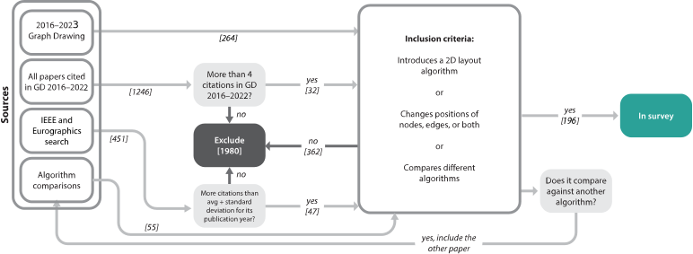

![]()
literature_pre = await FileAttachment("data/Literature.csv").csv()
benchmark_datasets_pre = await FileAttachment("data/Benchmark_datasets.csv").csv()
literature = literature_pre.filter(d => !d.Name.includes("EXCLUDE") && !d.Name == "")
benchmark_datasets = benchmark_datasets_pre.filter(l => l.Name != "" && l.Name != "Debates")
paper_sources_pre = await FileAttachment("data/Paper Sources.csv").csv()
paper_source = paper_sources_pre.filter(l => l.Name != "")GLaDOS: Graph Layout algorithm Datasets for Open Science
Note 1: Materials, Authorship, Acknowledgements, License, Conflicts
Research materials
The supplemental material for this publication includes:
- The Graph Benchmark Datasets website, hosted on GitHub Pages.
- A main project on OSF which contains PDFs of our publications and the benchmark datsets in several common graph file formats, archived for long-term availability: https://osf.io/j7ucv/.
- An OSF component which contains the website code and survey data: https://osf.io/q4697/ (github.com/visdunneright/gd_benchmark_sets/)
- … graph data, graph format conversion code, and analysis code: https://osf.io/j2tfs/ (github.com/VisDunneRight/benchmark_sets_analysis_data/)
- … this publication’s code: https://osf.io/qx3zh/ (github.com/VisDunneRight/jovi-benchmark-sets).
- The original database used for metadata collection and storage is available on Notion as Benchmark datasets.
Archives of these connected GitHub repositories will be added to OSF storage upon paper acceptance.
Authorship
- Sara Di Bartolomeo
 : Conceptualization, Data Collection & Categorization & Curation, Writing - Original Draft + Review & Editing, Visualization, Validation.
: Conceptualization, Data Collection & Categorization & Curation, Writing - Original Draft + Review & Editing, Visualization, Validation. - Connor Wilson : Data Collection & Categorization & Curation, Writing - Original Draft + Review & Editing, Validation.
- Eduardo Puerta : Data Collection & Categorization & Curation, Writing - Original Draft + Review & Editing, Validation.
- Tarik Crnovrsanin : Data Collection & Categorization & Curation, Writing - Original Draft + Review & Editing, Validation.
- Alexander Frings : Data Categorization & Curation, Writing - Review & Editing, Software, Visualization, Validation.
- Cody Dunne : Supervision, Writing - Original Draft + Review & Editing, Validation, Funding Acquisition.
Acknowledgements
This work was supported by the U.S. National Science Foundation (NSF) under award number CAREER IIS-2145382 and the Austrian Science Fund (FWF) [ESP 513-N].
License
All text, data, and documentation are licensed under a Creative Commons Attribution 4.0 International License. All code is released under the Apache 2.0 License.
Conflicts of interest
The authors declare that there are no competing interests.
1 Introduction
Benchmarking is a crucial aspect of computer science, as it allows researchers, developers, and engineers to compare the performance of various systems, algorithms, or hardware. A benchmark is a standardized test or set of tests used to measure and compare the performance of hardware, software, or systems under specific conditions. Benchmarking aims to provide objective and consistent metrics that allow for fair comparisons and informed decision-making. Benchmarks are widely used in various fields, including computer hardware evaluation, software optimization, and system performance analysis. In all these fields, benchmarking provides a standardized and objective way to compare and assess the performance of different systems, algorithms, or software implementations. It aids in making informed decisions about which solution best suits a specific use case or requirement.
The same is true for graph drawing, particularly for studying the performance and results of graph layout algorithms (Di Bartolomeo et al. 2024). Benchmark datasets can provide a standardized set of graphs with known properties and characteristics. These graphs can vary in size, density, connectivity, and structure. Having reference collections of benchmark graphs is a huge positive for these evaluations: indeed, if algorithms are tested on the same easy-to-find datasets, it becomes easier to compare them and benefits the reproducibility of the experiment. Researchers can objectively compare their performance or the quality of their results by applying various graph layout algorithms to the same benchmark dataset.
In our own work, we have faced challenges in determining which benchmark datasets to use for evaluating the layout algorithms we developed. This led us to build a collection of benchmark datasets used in previous graph layout algorithm papers and a Graph Benchmark Datasets website for perusing the collection. We collected 196 papers from Graph Drawing, IEEE venues, and Eurographics venues that include computational evaluations of graph layout algorithms. We then searched for the datasets used for the benchmarks. We collected the data we could find and had permission to archive and re-created datasets that were lost but had sufficient replication instructions. We classified graphs by their features and statistics. We also found text and images from papers using those graphs.
This paper aims to present this graph drawing benchmark sets resource to the Graph Drawing and visualization communities so that other authors may benefit from our archiving and organization efforts. We hope this resource will encourage the discoverability of these datasets and the ease of running benchmarks for graph layout algorithms. Moreover, as reliable access to datasets is fundamental for replicability, we aim to preserve these datasets in perpetuity. Beyond collecting available datasets and re-creating lost ones, we archived all our materials on OSF for long-term availability. This included saving each graph in multiple common file formats to avoid translation issues for individual authors. We believe our work will lead to more reproducible and replicable Graph Drawing research by providing a long-term and open archive of the data we use in our computational evaluations.
Specifically, we contribute:
- A systematic collection of the graphs commonly used in Graph Drawing research—along with a characterization of the graph features available in each dataset—which will help future researchers and practitioners identify appropriate benchmark datasets to use for their evaluations. The work we did also includes reconstructing lost datasets based on author descriptions, or scouting through citations or emailing authors to hopefully find these lost collections.
- A website for perusing this collection, available here.
- A long-term archive of our metadata and the collection to aid in reproducibility and replicability of evaluations.
Please see our materials statement above for our supplemental materials, including links to the website, code and data, OSF archive, and Notion database.
2 Motivation and Background
This work stems from the challenges we encountered in finding datasets tailored to test graph layout algorithms. When developing a graph layout algorithm which handles specific features (such as layers, or clusters), it is essential to have a benchmark dataset that reflects these features. While conducting our own evaluations, we found it difficult to find datasets that would incorporate features that we needed. This submission is part of an ongoing effort to keep a curated list of datasets.
Our work focuses on providing a graph benchmark collection that categorizes datasets by how they organize their graphs and emphasizes their features. We aim to facilitate researchers’ choice of benchmarks to reflect real use cases or allow comparisons to other algorithms in their respective fields. Although a number of graph repositories exist, their target and objectives are not always aligned with the needs of graph drawing researchers. While the scope of this work revolves around compiling graphs and networks used in the graph drawing literature, we highlight that other, adjacent fields have also created similar repositories tailored to different needs. For example, the Network Repository consists of a comprehensive collection of datasets that contain many attributes and are used for benchmarking in machine learning, data mining, and many other network applications (Rossi and Ahmed 2015). In biology, the KEGG Encyclopedia of Genes and Genomes contains network information relevant to biological pathways (Kanehisa Laboratories 2023). Some general-purpose collections used in network science are also relevant to our discussion. Among the most famous ones, the SuiteSparse Matrix Collection, the Stanford Network Analysis Project (SNAP), and the Pajek collection stand out since they propose large compilations of datasets that often come from diverse sources. The Open Graph Benchmark collection from W. Hu et al. (2020) is also worth mentioning. It provides an important infrastructure for evaluating machine learning methods on graph-structured data, including datasets, tasks, and evaluation metrics, but it is not focused on layout quality or human-perceived readability of graph visualizations. Our work complements such efforts by specifically targeting datasets designed to evaluate the perceptual and aesthetic dimensions of layout algorithms, which are not addressed in W. Hu et al. (2020). Much simpler examples of similar collections can be found in curated lists of links on GitHub, often referred to as awesome lists, where a short comment usually accompanies every entry (for instance, here and here). The purpose and scope of such repositories is provided with more depth in Section 4.1.2.
Such lists can serve as great tools to find particular case studies, but they do not serve the same purpose as a uniform collection like Rome-Lib: a collection of graphs with similar features that can be used to test an algorithm on thousands of graphs with increasing nodes. Rome-Lib is hosted on the main website of the Graph Drawing website, as proof of its usefulness as a benchmark dataset, together with the AT&T graphs and the random DAGs. Another example is the Graph Partitioning Archive, also known as the Walshaw Collection, which compiles relevant graphs and partitioning algorithms from disparate sources in the relevant literature (Walshaw and Cross 2000). The uniformity of such collections allows scientists to easily run thousand of tests on similar graphs, allowing to test the scalability of an algorithm varying density, number of nodes and number of edges — as opposed to the previously mentioned collections, where the focus is on the diversity of the graphs. See Section 4.1.1 for more information on this topic.
We care particularly about the reproducibility of past and future research. A dataset that has been used in an evaluation and is now unaccessible greatly hinders the reproducibility of the evaluation, and in the worst case it makes it impossible to reproduce, and, as such, much less meaningful. Losing a dataset to link rot is an unfortunately common problem in the digital age, as URLs change, websites go down, and data is lost. One example of this is the Open Graph Archive from Bachmaier et al. (2012), which was a project to create a graph database that categorizes, analyses, and visualizes graphs uploaded from the community, a laudable effort now rendered unfortunately inaccessible. For more discussion, see Section 4.1.5.
We tried to mitigate the problem of lost datasets by documenting what we could still find about them. For every dataset that we found that is now lost or inaccessible, we documented every detail we could find about it in literature, including descriptions and pictures of the rendered graphs, so that we can conserve a hint of what the dataset contained. We also reached out to colleagues in other universities who we knew had worked with certain datasets in the past, and asked if they could check their internal storage — for example, shared drives or old project folders — to see if the data was still available. In a couple of cases, this led to successfull outcomes: see Storylines (Movie Plots).
We store our collection on the Open Science Framework (OSF), which is the currently recommended solution in the VIS community for long-term archival of research data. As per OSF’s backup and preservation policy, storage and open access is guaranteed for the next 50 years.
In this context, it is also worth mentioning that in recent years there have been several initiatives aimed at encouraging care for replicability in research. The Graphics Replicability Stamp is one of these, meant to be an endorsement of the replicability of the results presented in a paper, which ensures the replicability of the results of a paper through an additional review process. Another similar intiative are the ACM badges, or the SIGMOD availability and reproducibility initiative, which goes one step further and publishes full reports commenting on how reproducible a paper is.
Maintenance plans and contribution to the repository
Contributions to the dataset collection (corrections, integrations, replacement) are most welcome — and strongly encouraged. However, to ensure data quality and avoid accidental overwriting or inconsistency, we don’t allow direct edits to the files by everyone. Instead, there are two main ways to contribute:
Pull requests: If you prefer to fill in all the information yourself, you can submit a pull request directly to the repository. The data for both the papers and the datasets is stored in CSV format, available here.
GitHub issues: If you’d rather just point us to a new dataset or share some additional info (e.g., missing metadata, clarifications, or links), we’ve created an issue template to make that easier. We’ll then take care of adding the dataset and filling in whatever information we can find or infer.
Even without external contributions, we actively monitor the space and try to keep the repository up to date as new datasets emerge. And if none of the options above work for you, feel free to just reach out to us — we’re happy to handle things more informally as well.
That said, it’s worth noting a clear limitation: this collection does not aim to be exhaustive. The starting point for the dataset list was a literature review covering a few hundred papers, which means it’s entirely possible that some benchmarks were missed — especially if they weren’t cited often or were introduced in more obscure venues. For this reason, contributions from the community are especially valuable to help fill in the gaps and keep the resource as useful and complete as possible.
This work proposes a working classification of datasets and collections based on their structure while also providing a higher emphasis on the features and usage within the literature of our field. Our collection is offered as a complement to the previously mentioned collections, as we intend to aid researchers in finding graphs in the context of layout algorithms and network visualization, with a focus on encouraging replicability.
3 Collection process
The information we collected is a by-product of a larger systematic review we conducted related to graph layout algorithms, which included 196 papers The following figure shows the original data collection process (from (Di Bartolomeo et al. 2024)):

The core of our data collection was the last seven years of Graph Drawing proceedings (264 papers in total), filtering out papers without computational evaluations. We further expanded our graph layout algorithm papers collection by searching IEEE Xplore and Wiley digital libraries to include papers from TVCG and CGF. Then, we checked all the citations in the papers we collected from Graph Drawing, and added to our collection all the papers that were cited more than 4 times in the last 6 years of graph drawing — to make sure we included algorithm papers that were important, but not published at GD, on IEEE Xplore or on the Wiley digital library. For each paper, we collected which features were handled by the graph layout algorithm presented, and what dataset was used in the evaluation. When collecting features, we always prioritized the authors’ own wording and description of the features. The tagging of the papers was done by two people at the same time, over two different passes for sanity-checking purposes. We used the following process to track down the datasets used in computational evaluations: (1) we first looked for official or linked supplemental material, (2) we next Googled the dataset or paper name, (3) finally, we emailed the authors. When in doubt about the artifact replication policy, we asked the owners or authors by email. In cases where it was explicitly mentioned that approval should be received before redistribution, we did not redistribute the datasets. However, if we received approval or did not receive an answer and found no explicit policy preventing redistribution, we collected and stored the dataset to preserve it for future researchers. If any dataset owner or author discovers their own work in our collection and would like it removed, we kindly request that they contact us (see our authorship statement above), and we will promptly remove it. Furthermore, we want to emphasize that we do not assert any ownership rights over the datasets listed.
Figure 1 shows the distribution of papers across different venues:
Figure 2 shows the distribution of collected papers’ publication date:
After collecting the datasets, we looked more in-depth into their contents, running analysis on a number of statistics associated with the graphs contained in them. Based on common metrics reported in Di Bartolomeo et al. (2024), we collect and plot statistics about the datasets: distribution of number of nodes, edges, mean degree and maximum degree. Additionally, we collected all the descriptions of the datasets we could find in the literature, which can contain relevant information about the origin of the dataset or its content, and we collected figures representing the content of the datasets taken from papers that use it, to give a visual representation and an immediate idea of the graphs contained in it.
3.1 Data Processing
Further complicating the replicability and reproducibility issues previously outlined is the problem of storing data in a consistent format. Datasets cited in different papers link to downloads for which the graph structure is very difficult to piece together (for instance, if it is in an uncommon format)—most commonly, paper authors write code to extract this structure for their specific needs, but this code is often tedious to recreate (if the authors went through the trouble of meticulously describing their process in the paper) or difficult and time-consuming to reappropriate (if it is contained in their supplemental materials, and they still exist on the web). In the worst case, both of these options are lost over time and the original graphs used become impossible to recreate. Hence, storing and organizing this data in multiple accessible formats is of great importance for the replicability of these works and for further research in the field.
For each dataset included in our repository, we have performed the work required to extract the graph structure per the original author’s specifications, or linked to an established network repository such as SNAP or SuiteSparse Matrix Collection that hosts the files. Writing custom code for this purpose was necessary for 32 of the 49 included datasets. Our code is available at github.com/VisDunneRight/benchmark_sets_analysis_data/.
We chose to convert and store several of the datasets in a uniform JSON representation because it is a highly versatile and easily accessible format that allowed us to easily represent a large and varied amount of characteristics that different graphs might have—such as nodes having associated timestamps, labels, or belonging to a clusters, and edges having weights. The style of JSON representation we used for graphs is based on several d3 examples, such as the one used in the d3 documentation, and is the same format used by the JSON read/write functions in NetworkX. For ease and accessibility, we have also converted and made available all graphs in three additional commonly-used formats: GraphML, GEXF, and GML. All of the formats contain the same information, including all of the additional attributes nodes or edges might have.
4 Datasets in use
The following chart shows how many times we found a dataset being used in the papers we collected. It excludes custom edits to the datasets, which are discussed later in this document.
In the data we collected, the most used dataset is Rome-Lib, followed by assorted collaboration networks (which in many cases refers to datasets of academic collaborations such as dblp or vispubdata). The third most used dataset is from C.Walshaw - it is important to note that the Walshaw dataset is available as part of other collections - for instance, its graphs are found in SNAP. However, during the collection process, we preferred giving precedence to how the authors reported their own information. Thus, if the authors claimed the data was from the Walshaw collection, we reported it as such.
In some cases, we grouped together datasets that share similar structural or contextual characteristics under a broader category — for example, Social Networks includes graphs from multiple sources such as Facebook, DBLP, and others. These graphs are often used interchangeably in layout evaluation papers, and while most papers only use one of them, we grouped them to reflect the broader trend of using social networks as a class of input graphs. We note, however, that this grouping may affect how the most-used datasets are ranked. In particular, counts for grouped categories like Social Networks reflect cumulative usage across all sources in the group, rather than implying that all papers used the full set.
For each of the datasets collected as part of our process, we conducted a brief analysis of their contents. Where possible, the analysis includes information about the number of nodes per graph, the source of the dataset, which papers have used the dataset and what graph features they took into account.
In the following sections, the reader will find details about the classifications and datasets in detail. Each dataset gets a dedicated, collapsible section, that contains the following information:
- A brief summary description of the dataset, the reasons for its popularity, and notes about how it was created or collected.
- Metadata containing:
- The original source of the dataset.
- Links to download the dataset in different formats, provided from our OSF repository.
- The size of the dataset.
- The original paper where the dataset was first introduced.
- A list of papers that have used the dataset, together with what features their graph layout algorithm handles.
- Charts illustrating node and edge count distribution through the dataset, mean and maximum distribution.
- Descriptions of the datasets lifted directly from the literature, which can help shine light on the content and properties of the dataset, how it was used in previous literature, or how it originated.
- Figures collected from the literature, such as visualizations of the graphs, or other relevant information. The visualizations can help a reader looking for a specific type of graph to quickly identify if the dataset is relevant to their research.
4.1 Classification of the Datasets
The datasets we collected are divided in different categories: the categorization we used is the same as the one used in Di Bartolomeo et al. (2024). The following is a brief explanation of the categories used, which are explained in deeper detail in each one of the corresponding chapters.
- Uniform Benchmark (Section 4.1.1): Datasets that are standalone widely used collections of graphs featuring uniform characteristics - usually simple, generic graphs, often used in evaluations that run over thousands of graphs to report average completion times, or other experiments where the reported metrics are usually aggregated.
- Established Network Repository (Section 4.1.2): A collection of individual, or groups of graphs, part of a larger repository. These datasets are often used in evaluations that require a diverse set of graphs, or when the evaluation is focused on a specific type of graph. These collections usually also report on graphs with their own statistics or visualizations, providing a summary of the dataset. This category also includes Subsets (Section 4.1.2.10).
- Single Graphs (Section 4.1.3): The data used is comprised of one individual graph, which often contains special characteristics making it particularly relevant for the evaluation at hand.
- Aggregate Collections (Section 4.1.4): Collections of graphs focusing on one specific context (such as forum posts, or airline routes) due to the given context having a special set of features that is relevant for a graph layout algorithm.
The type of collection informs various aspects of an evaluation, such as which results are relevant to report. For this discussion, we refer to Di Bartolomeo et al. (2024), where the authors link the type of collection in the context of graph layout evaluations.
The following visualization shows the amount of datasets we collected per category:
Unfortunately, some of the datasets used in layout algorithm evaluations are not accessible anymore. Where possible, we still collected and reported all the information contained in the papers about the datasets, so that we can conserve an idea of what they contained. This phenomenon, as well as the information we could collect, is discussed in Lost and Unavailable Datasets (Section 4.1.5).
Finally, we include a discussion on Custom-made Datasets (Section 4.1.6), synthetically generated datasets for the purpose of an experiment.
Each dataset also contains a number of graph features specific to the graphs contained in it. Authors might want to use a dataset that contains a specific feature, such as a graph with a high number of nodes, or a graph with a specific structure. The following interactive filtering systems allows for filtering of datasets (and papers) based on the features they contain.
Type to search for datasets by name or feature. Results will appear here.
Tag-filtered Navigation
The following interactive filtering system is an initial overview over the contents of the paper, and can be used to navigate and identify datasets and papers easily. The left column contains all the properties used to tag graphs in the datasets (additional information about the nature of these tags can be found in Section 3 and Section 3.1). Each tag has an associated checkbox: selecting a tag (or more than one) will filter the datasets and papers to only show those that contain the selected tags. The middle column contains the datasets, and the right column contains the papers. Clicking on a dataset or paper will scroll the page to the corresponding section in the paper. The datasets and papers are sorted alphabetically by name and citation name, respectively. The tags, datasets, and papers are generated from the data in the repository, and are updated automatically when the data changes.
Tags
Datsets
Papers
Uniform Benchmark datasets
Uniform Benchmark datasets are standalone, widely used collections of graphs that share consistent structural characteristics — typically simple, synthetic, or randomly generated graphs. These benchmarks are often used in large-scale evaluations where experiments are run on thousands of graphs, and results are reported as aggregated metrics such as average running time or layout quality scores.
What distinguishes these benchmarks is that they are designed to test the general performance of layout algorithms across a wide range of input sizes and densities, rather than being tied to a particular real-world context or graph semantics. This is different from other collections presented later in this section, which may focus on graphs with specific structural patterns (e.g., social networks, hierarchical trees, storyline structures) or graphs drawn from a single domain.
The first of these collapsible sections is shown already expanded, to give an example of the content that can be found in each of them. The content is generated dynamically based on the data we collected.
Rome-Lib
Rome-Lib is, as previously discussed, the most common benchmark dataset, due to its already established popularity, its ease of use and access, and the many properties that are already known about it. It was first introduced in (Battista et al. 1997) and presented in their paper ”An experimental comparison of four graph drawing algorithms”. Mostly “real” networks such as software companies, government, software engineering books, database design, and journal articles on visualization. Originally sent as an extended abstract to Computational Geometry in 1995 (Di Battista, Garg, and Liotta 1995). It contains exclusively Genericgraphs (e.g., undirected, non-layered, without pre-established clusters…), although some of the research that uses it enhances with additional attributes (such as performing a rank assignment step). Information about optimal crossings can be found as part of WebCompute.
Originally found at: http://www.graphdrawing.org/data.html
Size: 11534 graphs, 10 to 100 nodes, 9 to 158 edges
Origin paper:
An experimental comparison of four graph drawing algorithms
An experimental comparison of three graph drawing algorithms (extended abstract)
Usage examples:
Experiments on Exact Crossing Minimization Using Column Generation
Stratisfimal Layout: A modular optimization model for laying out layered node-link network visualizations
Deep Neural Network for Drawing Networks
A Note on the Practicality of Maximal Planar Subgraph Algorithms
Experimental Analysis of the Accessibility of Drawings with Few Segments
An Interactive Tool to Explore and Improve the Ply Number of Drawings
A Heuristic Approach Towards Drawings of Graphs with High Crossing Resolution
An Integer-Linear Program for Bend-Minimization in Ortho-Radial Drawings
Star-Struck by Fixed Embeddings: Modern Crossing Number Heuristics
An effective crossing minimisation heuristic based on star insertion
Advances in the Planarization Method: Effective Multiple Edge Insertions
Statistics

Descriptions from Literature
From “A branch-and-cut approach to the crossing number problem”:
To test the performance of our new algorithm, we used a benchmark set of graphs of the University of Rome III, introduced in [11]. The set contains 11 389 graphs that consist of 10 to 100 nodes and 9 to 158 edges. These graphs were generated from a core set of 112 “real life” graphs used in database design and software engineering applications. Most of the graphs are sparse, which is a common property in most application areas of automatic graph drawing. The average ratio between the number of edges and the number of nodes of the graphs from the benchmark set is about 1.35.
From “Layer-free upward crossing minimization”:
The Rome graphs [Di Battista et al. 1997] are a widely used benchmark set in graph drawing, obtained from a basic set of 112 real-world graphs. It contains 11,528 instances with 10 through 100 nodes and 9 through 158 edges. Although the graphs are originally undirected, they have been used as directed graphs—by artificially directing the edges according to the node order given in the input files—for showing the performance of the mixed-upward planarization approach [Eiglsperger et al. 2003]. In this case, all edges are directed and the graphs are acyclic; hence, the mixed-upward planarization approach turns into an upward planarization method.
From “A New Approach to Exact Crossing Minimization”:
We say graphs are trivial, if they are planar or if the heuristic achieves a planarization with only one crossing, as in these cases we need not prove optimality. The Rome library contains 7172 non-trivial graphs.
From “An Experimental Comparison of Four Graph Drawing Algorithms”
Our test graph generation strategy is as follows. First, we have focused on the important application area of database and software visualization, where Entity-Relationship diagrams and Data-Flow diagrams are usually displayed with orthogonal drawings. Second, we have collected 112 “real life” graphs with number of vertices between 10 and 100, from now on called core graphs, from the following sources:
• 54% of the graphs have been obtained from major Italian software companies (especially from Database Informatica) and large government organization (including the Italian Internal Revenue Service and the Italian National Advisory Council for Computer Applications in the Government (Autorita’ per l’Informatica nella Pubblica Amministrazione)); • 33% of the graphs were taken from well-known reference books in software engineering [18] and database design [1], and from journal articles on software visualization in the recent issues of Information Systems and the IEEE Transactions on Software Engineering; • 13% of the graphs were extracted from theses in software and database visualization written by students at the University of Rome “La Sapienza”.
Our approach is based on the following scheme. We defined several primitive operations for updating graphs, which correspond to the typical operations performed by designers of Entity-Relationship and Data-Flow Diagrams, and attributed a certain probability to each of them. More specifically, the updating primitives we have used are the following: InsertEdge, which inserts a new edge between two existing vertices; DeleteEdge, which deletes an existing edge; InsertVertex, which splits an existing edge into two edges by inserting a new vertex; DeleteVertex, which deletes a vertex and all its incident edges; and MakeVertex, which creates a new vertex and connects it to a subset of vertices. The test graphs were then generated in several iterations starting from the core graphs by applying random sequences of operations with a “genetic” mechanism. Namely, at each iteration a new set of test graphs was obtained by applying a random sequence of operations to the current test set. Each new graph was then evaluated for “suitability”, and those found not suitable were discarded. The probability of each primitive operation was varied at the end of each iteration. The evaluation of the suitability of the generated graphs was conducted using both objective and subjective analyses. The objective analysis consisted of determining whether the new graph had similar structural properties with respect to the core graph it was derived from. We have taken into account parameters like the average ratio between number of vertices and number of edges and the average number of biconnected components. The subjective analysis consisted in a visual inspection of the new graph and an assessment by expert users of Entity-Relationship and Data-Flow diagrams of its similarity to a “real-life” diagram. For obvious reasons, the subjective analysis has been done on a randomly selected subset of the graphs.
Example Figures
From ”An Experimental Comparison of Four Graph Drawing Algorithms”:

From “Experimental Analysis of the Accessibility of Drawings with Few Segments”:

From: Deep Neural Network for DrawiNg Networks, (DNN)2:

Fig 5. Layout examples for (DNN)^2, (DNN)^2, tsNET∗ and S_GD^2.
The following collections, together with Rome-Lib, can be easily accessed from the homepage of the Graph Drawing Conference website, and are therefore well known and widely used.
AT&T
Originally collected by Stephen North at AT&T Bell Labs (see the descriptions from literature section below for more information). The original link from 1995 is broken: ftp://ftp.research.att.com/dist/drawdag. Di Battista et al. modified the dataset by removing isomorphic graphs, connecting disconnected graphs, and removing cycles. Same as North DAG collection. It contains Directed edgesand Acyclic graphs.
Originally found at: http://www.graphdrawing.org/data.html
Size: 1277 graphs, 10 to 100 nodes, 9 to 241 edges
Origin paper:
Usage examples:
Drawing Large Graphs with a Potential-Field-Based Multilevel Algorithm
An Experimental Comparison of Fast Algorithms for Drawing General Large Graphs
Compact Layered Drawings of General Directed Graphs
A Flow Formulation for Horizontal Coordinate Assignment with Prescribed Width
A Natural Quadratic Approach to the Generalized Graph Layering Problem
Advances in the Planarization Method: Effective Multiple Edge Insertions
Simple and Efficient Bilayer Cross Counting
Drawing Directed Acyclic Graphs: An Experimental Study
Statistics

Descriptions from Literature
From “Drawing Directed Acyclic Graphs: An Experimental Study”:
The experimental study was performed on two different sets of DAGs, both with a strong connection to “real-life” applications. We considered two typical contexts where DAGs play a fundamental role, namely software engineering and project planning.
The first set of test DAGs are what we call the North DAGs. They are obtained from a collection of directed graphs [28], that North collected at AT&T Bell Labs by running for two years Draw DAG, an e-mail graph drawing service that accepts directed graphs formatted as e-mail messages and returns messages with the corresponding drawings [27].
Originally, the North DAGs consisted of 5114 directed graphs, whose number of vertices varied in the range 1 … 7602. However, the density of the directed graphs with a number of vertices that did not fall in the range 10 … 100 was very low (see also the statistics in [28]); since such directed graphs represent a very sparse statistical population we decided to discard them. Then we noted that many directed graphs were isomorphic; since the vertices of the directed graphs have labels associated with them, the problem is tractable. For each isomorphism class, we kept only one representative directed graph. Also, we deleted the directed graphs where subgraphs were specified as clusters, to be drawn in their own distinct rectangular region of the layout, because constrained algorithms are beyond the scope of this study. This filtering left us with 1277 directed graphs.
Still, 491 directed graphs were not connected and this was a problem for running algorithms implemented in G D W (they assume input directed graphs to be connected). Instead of discarding the directed graphs, we followed a more practical approach, by randomly adding a minimum set of directed edges that makes each directed graph connected. Finally, we made the directed graph acyclic, where necessary, by applying some heuristics for inverting the direction of a small subset of edges.
We then ran a first set of experiments and produced the statistics by grouping the DAGs by number of vertices. Although the comparison among the algorithms looked consistent (the produced plots never oddly overlapped), each single plot was not satisfactory, because it showed peaks and valleys. We went back to study the test suite and observed that grouping them by number of vertices was not the best approach. In fact, the North DAGs come from very heterogeneous sources, mainly representing different phases of various software engineering projects; as a result, directed graphs with more or less the same number of vertices may be either very dense or very sparse.
Since most of the analyzed quality measures strongly depend on the number of edges of the DAG (e.g. area, number of bends, and number of crossings), we decided that a better approach was to group the DAGs by number of edges. After some tests, we clustered the DAGs into nine groups, each with at least 40 DAGs, so that the number of edges in the DAGs belonging to group i, 1 ≤ i ≤ 9, is in the range 10 i … 10 i+9 (see Fig. 3). The resulting test suite consists of 1158 DAGs, each with edges in the range 10 … 99.
From “Layer-Free Upward Crossing Minimization”:
North DAGs. The North DAGs have been introduced in an experimental comparison of algorithms for drawing DAGs [Di Battista et al. 2000]. The benchmark set contains 1,158 DAGs collected by Stephen North, which were slightly modified by Di Battista et al. The graphs are grouped into nine sets, where set i contains graphs with 10 i to 10 i+9 arcs for i=1, …, 9.
Example Figures
From “Drawing Directed Acyclic Graphs: An Experimental Study”:


From “A Natural Quadratic Approach to the Generalized Graph Layering Problem”:

From “A Flow Formulation for Horizontal Coordinate Assignment with Prescribed Width”:

RandDAG or DAGMar
The randDAG collection concludes the collections that can be easily accessed from graphdrawing.org. http://graphdrawing.org highlights the DAGmar graph generator, and provides a benchmark set of randomly generated directed acyclic graphs. While not explicit, it is implied this benchmark comes from the DAGmar generator. The collection is uniformly sampled from set of level graphs with certain graph parameters, such as number of nodes and number of edges. These graphs have no particular features, thus they are classified as Generic
Originally found at: http://www.graphdrawing.org/data.html
Size: 10-100 nodes, 15-167 edges
Number of Graphs: 909
Origin paper:
DAGmar: Library for DAGs
Usage examples:
Statistics

Descriptions from the Literature
From “Aesthetic Discrimination of Graph Layouts”:
We have assembled such a dataset using two types of sources. First, we used the collections of the well-known graph archives ROME, NORTH and RANDDAG which are published on graphdrawing.org as well as the NIST’s “Matrix Market” [2].
Example Figures
From “Aesthetic Discrimination of Graph Layouts (Appendix)”:

Fig. 5. (cropped)… All graphs are visualized using the \(FM^3\) algorithm.
A very common problem in graph drawing is approximating or computing the exact crossing number of a graph. The datasets listed below are particularly useful for this task, as they contain graphs with Known crossing numbers, so that other algorithms’ results can be tested against them.
KnownCR
KnownCR is a collection of graphs with Known crossing numbers, and it is used to test the performance of algorithms that approximate the crossing number of a graph. The dataset is used in papers that aim to approximate the crossing number of a graph, and it is used to compare the results of the approximation algorithms to the known crossing numbers of the graphs. A good resource for this is also the survey provided by (Clancy, Haythorpe, and Newcombe 2019a). The graphs themselves do not appear to exist online elsewhere, but the method by which they can be created is fully described in (Gutwenger 2010).
Size: 9-250 nodes, 18-750 edges
Origin paper:
Application of SPQR-Trees in the Planarization Approach for Drawing Graphs
Usage examples:
Star-Struck by Fixed Embeddings: Modern Crossing Number Heuristics
An effective crossing minimisation heuristic based on star insertion
Advances in the Planarization Method: Effective Multiple Edge Insertions
Statistics

Description from Literature
From “An effective crossing minimisation heuristic based on star insertion”:
KnownCR graphs- these are a set of instances containing between 9 and 250 vertices, first collected by Gutwenger [22], which can be further partitioned into four families of graphs as follows: \(C_i \times C_j\): The Cartesian product of the cycle on \(i\) vertices with the cycle on \(j\) vertices. The instances contain graphs with \(3 \leq i \leq 7\) and \(j \geq i\) such that \(ij \leq 250\). \(G_i \times P_j\): The Cartesian product of the path on \(j+1\) vertices with one of the 21 non-isomorphic connected graphs on 5 vertices, where \(i\) denotes which of the 21. The instances contain graphs with \(3 \leq j \leq 49\). \(G_i \times C_j\): The Cartesian product of the cycle on \(j\) vertices with one of the 21 non-isomorphic connected graphs on 5 vertices, where \(i\) denotes which of the 21. The crossing number of these graphs is only known for some of the \(G_i\) and only these cases are included. The instances contain graphs with \(3 \leq j \leq 50\). The Generalised Petersen graphs \(P(j,2)\) and \(P(j,3)\), on \(2j\) vertices. We shall only use those of type \(P(j,3)\) as \(P(j,2)\) (studied in [20]) are easy for heuristics to solve, as has already been observed in [9]. The instances contain graphs with \(9 \leq j \leq 125\).
From “Advances in the Planarization Method: Effective Multiple Edge Insertions”:
Finally, the KnownCR graphs [11] are a collection of 1946 graphs with known crossing numbers (by proofs), consisting of generalized Petersen graphs (P(m, 2), P(m, 3)) and products of cycles \(C_n\), paths \(P_n\), and 5-vertex graphs \(G_i (C_m \times C_n, G_i \times P_n, G_i \times C_n)\); these graphs have between 9 and 250 nodes.
Example Figures
From “Application of SPQR-Trees in the Planarization Approach for Drawing Graphs”:

WebCompute
The dataset is comprised of instances of graphs uploaded to Crossing Number WebCompute, attributed to Chimani and Wiedera (2016a). Their website also features proofs of the crossing numbers of many of the Rome-Lib graphs. Newest version of database specifies non-planar graphs, but older versions do have some planar graphs.
Originally found at: https://tcs.uos.de/doku.php?id=research/cr
Size: 3-112 nodes, 3-366 edges
Number of Graphs: 507
Origin paper:
An ILP-based Proof System for the Crossing Number Problem
Usage examples:
An ILP-based Proof System for the Crossing Number Problem
Statistics

Descriptions from Literature
From “An ILP-based Proof System for the Crossing Number Problem”:
To determine the applicability of the proof system, we tested the algorithms on three benchmark sets: the 3110 non-trivial Rome graphs [14], the 1277 North graphs [15], and the145 non-planar graphs (http://crossings.uos.de/instances) collected by our crossing number web-service.
Complete Graphs
Complete graphs refers to a generic collection of graphs that are fully connected, i.e., each node is connected to every other node, up to any number of nodes that are needed for the purpose of the experiment. The linked dataset includes both the complete graphs \(K_n\) for \(5≤n≤50\) and the complete bipartite graphs \(K_{n_1,n_2}\) for \(5≤n1,n2≤40\). Crossing number is conjectured for most of these, and while not proven, we found these used in papers to validate minimum crossing numbers. We also note that the papers in our literature review did not provide example figures.
Size: 5-80 nodes, 10-1600 edges
Number of Graphs: 1342
Usage examples:
An effective crossing minimisation heuristic based on star insertion
Statistics

Descriptions from Literature
From “An effective crossing minimisation heuristic based on star insertion”:
Complete graphs - Although the crossing number of the complete graph \(K_n\) is not known for for \(n ≥ 13\), the value is conjectured, and typically assumed to be correct. We compare the nine combinations of schemes to see how close to the conjectured value each of them is able to get, for various sizes of complete graphs up to \(n = 50\). We indicate how many crossings are obtained after the initial embedding, as well as at the conclusion of the heuristic. We also provide the runtimes, again separated into time spent producing the initial embedding, and time spent in the main loop of the heuristic.
Complete bipartite graphs - Much like the complete graphs, the crossing number of the complete bipartite graph \(K_{n1,n2}\) is only known in general for \(n_1 ≤ 6\), but the value is conjectured and typically assumed to be correct. Again, we compare the nine combinations of schemes to see how close to the conjectured value they can get for values up to \(n_1,n_2 = 40\), and report the same data as for the Complete graphs.
The crossing number of the complete graph \(K_n\) is conjectured (e.g. see Guy [25]) to be equal to \(H(n) := 1/4 \left\lfloor n/2\right\rfloor \left\lfloor (n − 1)/2\right\rfloor \left\lfloor(n − 2)/2\right\rfloor \left\lfloor (n − 3)/2\right\rfloor\). Although this conjecture is widely believed to be correct, it has only been confirmed for \(n ≤ 12\) despite considerable effort to extend the results further [30]. We ran the graphs \(K_n\) for \(5 ≤ n ≤ 50\). Each graph was run with 100 random permutations and the minimum found solution was compared to \(H(n)\) by computing the percent relative deviation from \(H(n)\)… For these graphs, we observe that when \(n\) was odd, every scheme combination was able to obtain a drawing with \(H(n)\) crossings. However, when \(n\) was even, each scheme reached a value which was usually very close but not equal to \(H(n)\).
The crossing number of the complete bipartite graph \(K_{n_1,n_2}\) is conjectured (e.g. see Zarankiewicz [35]) to be equal to \(Z(n_1, n_2) := \left\lfloor n_1/2\right\rfloor \left\lfloor (n_1 − 1)/2\right\rfloor \left\lfloor n_2/2\right\rfloor \left\lfloor (n_2 − 1)/2\right\rfloor\). We ran the graphs \(K_{n_1,n_2}\) for \(5 ≤ n1 ≤ n2 ≤ 40\). Each graph was run with 100 random permutations and the minimum found solution was compared to \(Z(n_1,n_2)\)… As can be seen in Table 6, QuickCross was successful in obtaining the conjectured optimum in all cases and for all scheme combinations, except \(K_{30,30}\) and \(K_{40,40}\)
In some cases, authors of algorithms that deal with particular graph types might prefer to focus on collections with specific attributes, that might be attributes of the nodes, the edges or the entire graph. This is the case of Storylines (Movie_Plots) and Militarized Interstate_Disputes (MID) for Temporal event sequences and World Maps for Geographicaldata:
Storylines (Movie Plots)
The storylines dataset is particularly useful for Temporal event sequencevisualization because of its Dynamicaspect and Clusters (which also evolve through time). It is a collection of graphs that represent movie plots, and the nodes are the characters in the movie. The edges represent the interactions between the characters. This dataset was initially collected by Yuzuru Tanahashi, then stored on his homepage at UC Davis, which, unfortunately, got taken down after some time from its publication. This caused the dataset to be lost for a period of time, as none of the papers that used it provided a link to the dataset or stored it as part of their supplemental material. The experiments contained in such papers were then rendered non-reproducible because of the missing dataset. Through the help of personal connections at UC Davis, we were luckily able to recover the dataset.
Originally found at: UC Davis’ website, personal page which is now unavailable. Currently distributed here.
Size: 698-24056 nodes, 357-23088 edges
Number of Graphs: 6
Origin paper:
Design Considerations for Optimizing Storyline Visualizations
Usage examples:
An Efficient Framework for Generating Storyline Visualizations from Streaming Data
StoryFlow: Tracking the Evolution of Stories
Design Considerations for Optimizing Storyline Visualizations
Crossing Minimization in Storyline Visualization
Computing Storyline Visualizations with Few Block Crossings
Sequence Braiding: Visual Overviews of Temporal Event Sequences and Attributes
Stratisfimal Layout: A modular optimization model for laying out layered node-link network visualizations
Statistics
 5d9ea7cbfc2c4a6c88a7ca1bf32c67d7/four_in_one.svg)
Descriptions from Literature
From “An efficient Framework for Generating Storyline Visualizations from Streaming Data”:
The datasets we used for this study were the three movie datasets (Star Wars, The Matrix, and Inception) [25] which have been used in previous research as benchmark datasets for measuring layout legibilities. Star Wars consists of 14 entities and 200 time steps. The Matrix consists of 14 entities and 100 time steps. Inception consists of 8 entities and 490 time steps.
From “Design Considerations for Optimizing Storyline Visualizations” (origin paper):
The basic form of the data applied in this visualization is simply a chronological list of interactions between various characters. These interactions between characters can be separated into a series of interaction sessions, each session representing the time span of a set of interacting characters. More precisely, we define an interaction session as a unit which holds three attributes: • initiation time, • duration, and • members. Initiation time corresponds to the time when the interaction session begins. Duration corresponds to the duration of the interaction session. Members corresponds to the set of characters involved in the interaction session. Each interaction session represents a time slot in the data where its members are interacting. Note that any change in the formation of members (e.g., a character leaving or joining) indicates a separate interaction session.
Example Figures
From “An Efficient Framework for Generating Storyline Visualizations from Streaming Data”:
 5d9ea7cbfc2c4a6c88a7ca1bf32c67d7/Untitled.png)
From “StoryFlow: Tracking the Evolution of Stories”:
 5d9ea7cbfc2c4a6c88a7ca1bf32c67d7/Untitled 1.png)
From “Crossing Minimization in Storyline Visualizations”:
 5d9ea7cbfc2c4a6c88a7ca1bf32c67d7/Untitled 2.png)
Militarized Interstate Disputes (MID)
Collected as part of the Correlates Of War project, the dataset contains two disconnected Temporal event sequences
Originally found at: https://correlatesofwar.org/data-sets/MIDs/
Size: The dataset consists of 2 disconnected temporal event sequence graphs, one with 11,766 nodes and 5,883 edges, and the other with 9,619 nodes and 8,017 edges.
Origin paper:
The MID5 Dataset, 2011–2014: Procedures, coding rules, and description.
Usage examples:
Design Considerations for Optimizing Storyline Visualizations
StoryFlow: Tracking the Evolution of Stories
Description From Literature
From Design Considerations for Optimizing Storyline Visualizations:
For the time-varying network, we use the Militarized Interstate Dispute (MID) network dataset [19].
For example, in the MID network dataset, which consists of 196 nations and 740 time steps, the genome length was reduced from 1714 to 432, allowing the algorithm to gain a considerable speedup.
From StoryFlow: Tracking the Evolution of Stories:
We conducted the experiment based on three movie datasets and a network dataset: Star Wars, Inception, The Matrix, and the MID network dataset (from 1817 to 1947).
Example Figures
From Design Considerations for Optimizing Storyline Visualization:
 27d9df7d11e44a9596267bb930bc6f03/Screen_Shot_2023-01-21_at_2.41.34_PM.png)
World Maps
Datasets contain various attributes for a few locations and their geographical adjacency, namely neighboring states, countries, and municipalities. World Bank country information transformed into a weight-vectors dataset. Some of the incomplete data was filled from disparate sources mentioned in the paper’s supplemental materials: https://doi.org/10.48550/arXiv.1908.07291. The collection contains 14 graphs with Dynamicand Spatialattributes, Categorical nodes and Weighted nodes
Originally found at: https://data.worldbank.org/indicator https://github.com/loizuf/StableDemersLP/tree/main/code/StableDemers_TVCG/data
Size: 48-514 nodes, 205-2428 edges
Number of Graphs: 14
Origin paper:
Computing Stable Demers Cartograms
Usage examples:
Statistics

Descriptions from Literature
From Computing Stable Demers Cartograms”:
We run experiments on real-world datasets. For time-series data, we expect a gradual change and strong correlation between the different values. For weight-vectors data, we expect more erratic changes and less correlation. We use two maps with rather different geographic structures: the first (World) is a map of world countries, having mixed region (country) sizes in a rather unstructured manner; the second (US) is a map of the 48 contiguous US states, having relatively high structure in sizes of its states, with large states in the middle and along the west coast and many smaller states along the east coast.
From Supplemental Materials, Appendix C of *“Computing Stable Demers Cartograms*”:

Example Figures
From Computing Stable Demers Cartograms”:

The collections presented here are particularly varied in features:
Graphviz Examples
While graphviz is a graph visualization software, its example gallery has proven useful to many researchers as a source of benchmark datasets. The graphs have various origins, most of which are described on the Graphviz https://www.graphviz.org/gallery/. Example graphs used to generate images with the https://www.graphviz.org for their https://www.graphviz.org/gallery/. These graphs are picked as graphviz examples because they are diverse in types of features they contain: together with generic graphs, there are also graphs with clusters layers Directed edgesand Labeled nodes
Originally found at: https://gitlab.com/graphviz/graphviz/-/tree/main/tests/graphs
Size: 1-1464 nodes, 0-5806 edges
Origin paper:
An open graph visualization system and its applications to software engineering
Usage examples:
Optimal k-level planarization and crossing minimization
FORBID: Fast Overlap Removal by Stochastic GradIent Descent for Graph Drawing
Statistics

Descriptions from Literature
From “Node Overlap Removal by Growing a Tree”:
Our data includes the same set of graphs that was used by the authors of PRISM to compare it with other algorithms [6]. The dataset is available in the Graphviz open source package.
From “Optimal k-level planarization and crossing minimization”:
The first set of graphs are all the hierarchical network diagrams appearing in the GraphViz gallery [3]… Table 1 shows the results of minimizing edge crossings and maximizing planar subgraphs with MIP and SAT solvers, as well as the crossings resulting in the Graphviz heuristic layout for graphs from the GraphViz gallery.
Example Figures
From “Node Overlap Removal by Growing a Tree”:


From “FORBID: Fast Overlap Removal by Stochastic GradIent Descent for Graph Drawing”:

From “Optimal k-level planarization and crossing minimization”:

Scotch Graph Collection
Collection consisting of graphs from various sources including topological meshes, meshes related to physical problems (fluid dynamics, structural mechanics, combinatorial optimization), and interprocess communication graphs for a parallel computing implementation of a factorization solver. The SCOTCH software package is produced by the SCOTCH project whose goal is to study static mapping by the means of graph theory, using “divide and conquer’’ graph bipartitioning heuristics. The original link to the data (http://www.labri.u-bordeaux.fr/Equipe/PARADIS/Member/pelegrin/graph) is broken.
Originally found at: https://wotug.org/parallel/libraries/communication/scotch/Graphs/
Size: The graphs range from 7 to 144649 nodes, and 10 to 1074393 edges.
Origin Notes: The https://gitlab.inria.fr/scotch/scotch is produced by the https://www.labri.fr/perso/pelegrin/scotch/ whose goal is to study static mapping by the means of graph theory, using “divide and conquer’’ graph bipartitioning heuristics. The original link to the data http://www.labri.u-bordeaux.fr/Equipe/PARADIS/Member/pelegrin/graph is broken.
Origin paper:
Scotch and PT-Scotch Graph Partitioning Software: An Overview
PT-Scotch: A tool for efficient parallel graph ordering
Usage examples:
ACE: A Fast Multiscale Eigenvectors Computation for Drawing Huge Graphs
Statistics

Descriptions from Literature
From “ACE: A Fast Multiscale Eigenvectors Computation for Drawing Huge Graphs”:
Figure 10c, the 4elt graph, is yet another example of a graph with inherent diversity of distance scales.
Example Figures
From “A Fast Multi-Scale Method for Drawing Large Graphs”:


From “ACE: A Fast Multiscale Eigenvectors Computation for Drawing Huge Graphs”:

Otherwise, one might decide to focus on a particular domain:
Biological Pathways (KEGG)
According to kegg.jp, “the KEGG PATHWAY database is a collection of manually drawn graphical diagrams, called KEGG pathway maps, for metabolic pathways, signaling pathways, pathways involved in various cellular processes and organismal systems, and perturbed pathways associated with human diseases”. The pathway data is separated by module, but the individual modules can be combined into a large graph as visualized at https://www.kegg.jp/kegg-bin/show_pathway?map01100
Originally found at: https://www.kegg.jp/kegg/pathway.html#global
Size: 47-292 nodes, 41-327 edges
Number of Graphs: 13
Origin paper:
KEGG: Kyoto Encyclopedia of Genes and Genomes
Usage examples:
Multi-Level Area Balancing of Clustered Graphs
Statistics
 6d302b16e7af4982a57c5b9aeecfe3b8/four_in_one.svg)
Descriptions from Literature
From “Multi-Level Area Balancing of Clustered Graphs”:
KEGG Overview Pathway. Fig. 6 is the result of reproducing the KEGG overview pathway map using our approach. The color coding of the category here is directly retrieved from the original KEGG database [43], as similarly incorporated in Metabopolis [64] (see figures in supplementary materials, available online). We also set the same threshold for specifying unimportant vertices as in Metabopolis, so that readers can refer to the paper for comparison (Fig. 6). The advantage of this technique allows us to arrange the vertexts in a balanced fashion by pushing vertexts away from each other. This initially gives users an idea of how big each category is, and explicitly shows which reaction is classified under which category. Users can also identify sub-components effectively since those components with identical topological structures are aligned as neighbors. This also helps users to comprehend which structures are associated with certain types of pathways, such as small chains, stars, etc.
Example Figures
From “Multi-Level Area Balancing of Clustered Graphs”:
 6d302b16e7af4982a57c5b9aeecfe3b8/Screen_Shot_2023-01-25_at_10.50.53_AM.png)
Co-Phylogenetic Trees
Collected by the authors of “https://almob.biomedcentral.com/articles/10.1186/s13015-014-0031-3. Each element of the data set is two binary co-phylogentic trees. “Caryophyllaceae & Microbotryum” and “Stinkbugs & Bacteria” are missing but our dataset includes all other files from “https://doi.org/10.1007/978-3-319-73915-1_27”. An additional dataset from “https://almob.biomedcentral.com/articles/10.1186/s13015-014-0031-3”, called “Wolbachia”, is included. Naturally, the data contains Trees
Originally found at: https://gitlab.inria.fr/erable/eucalypt/-/blob/master/html/PaperDatasets.zip
Size: 13-773 nodes, 12-772 edges
Number of Graphs: 30
Origin paper:
EUCALYPT: efficient tree reconciliation enumerator
Usage examples:
Statistics

Descriptions from Literature
From “EUCALYPT: efficient tree reconciliation enumerator”:
To test EUCALYPT, we selected 12 datasets from the literature. As we are mostly interested in host-parasite systems, the first 10 datasets concern such relations: EC Encyrtidae & Coccidae [23], GL Gopher & Lice [24], SC Seabirds & Chewing Lice [25], RP Rodents & Pinworms [26], SCF Smut Fungi & Caryophillaceus plants [27], PLML Pelican Lice ML [28] (the trees are generated through a maximum likelihood approach), PLMP Pelican Lice MP [28] (the trees are generated through a maximum parsimony approach), RH Rodents & Hantaviruses [29], PP Primates & Pinworm [30], and FD Fishs and Dactylogyrus [31].
In addition, we used a dataset of our own which corresponds to arthropod hosts and a bacterium genus, Wolbachia, living inside the cells of their hosts [32,33]. The datasets were chosen to provide a variety in terms of size of the host and parasite trees: those from the literature are relatively small (from 7 to 100 leaves), while our own data provide an example of much bigger host and parasite trees, each having 387 leaves. Moreover, we were careful that the selected datasets cover, as much as possible, a range of situations in terms of coevolution and of the expected frequencies of each event
Example Figures
From “Visualizing Co-phylogenetic Reconciliations”:


And finally, a collection of graph problems:
SteinLib
SteinLib is a collection of Steiner tree problems in graphs and variants. Their website has additional information about each problem in the dataset, including whether or not it has been solved. We omit two sets, Relay and EFST, from our provided data due to size constraints.
Originally found at: https://steinlib.zib.de/steinlib.php
Size: 6-38,418 nodes, 9-221,445 edges
Number of Graphs: 1207
Origin paper:
SteinLib: An Updated Library on Steiner Tree Problems in Graphs
Usage examples:
A Note on the Practicality of Maximal Planar Subgraph Algorithms
Statistics

Descriptions from Literature
From A Note on the Practicality of Maximal Planar Subgraph Algorithms:
We use the non-planar graphs of the established benchmark sets North [12] (423 instances), Rome [11] (8249), and SteinLib [16] (586), all of which include real-world instances. In our plots, we group instances according to |V| rounded to the nearest multiple of 10; for Rome we only consider graph with ≥ 25 vertices.
Example Figures
From SteinLib: An Updated Library on Steiner Tree Problems in Graphs:

Additional interesting graphs can be found in the Graph Drawing Contest website.
Established Network Repositories
A popular choice is to use datasets from Established Network Repositories. These are ample collections, often organized in dedicated websites which also offer a few stats about the contained graphs. These collections are particularly useful when trying to locate a graph with a specific structure or property.
Because their hosts are already dedicated to the maintaining and reporting of information on these collections, we do not include here any storage of the data (which would be redundant) or report statistics on them. Rather, our analysis here is focused on highlighting their properties, origins, and ways in which they have been used.
Matrix Market
Compiled by the Mathematical and Computational Sciences Division of the Information Technology Laboratory of the National Institute of Standards and Technology, the Matrix Market is a repository of test data for use in comparative studies of algorithms for numerical linear algebra, featuring nearly 500 sparse matrices from a variety of applications, as well as matrix generation tools and services. It has been used for experiments with Genericgraphs, Largegraphs, and graphs with Weighted edges Each matrix entry is accompanied by metadata that includes the matrix name and identifier, dimensions (number of rows and columns), number of non-zero elements, symmetry type (symmetric, skew-symmetric, or general) and data type (real, complex, integer, or pattern). The website also provides visualizations of the matrices, helping users understand their structure and distribution of non-zero elements. Downloads are also provided in a variety of formats, including their own Matrix Market Exchange (MME) format, Harwell-Boeing, and MATLAB.
Originally found at: https://math.nist.gov/MatrixMarket/index.html
Download formatted data:
Note: A repository of test data for use in comparative studies of algorithms for numerical linear algebra, featuring nearly 500 sparse matrices from a variety of applications, as well as matrix generation tools and services.
Origin Notes: Compiled by the https://math.nist.gov/mcsd/ of the http://www.itl.nist.gov/ of the http://www.nist.gov/
Origin paper:
Matrix Market: a web resource for test matrix collections
Usage examples:
[link] Graph Drawing by Stress Majorization
Descriptions from Literature
The first example is the 1138Bus graph (|V|=1138, |E|=1458) from the Matrix Market repository [1]. This graph models a network of high-voltage power distribution lines. Figure 4 shows two layouts of this graph.
Example Figures
From “Drawing graphs by eigenvectors: theory and practice” (top two layouts are a Matrix Market graph):


Pajek
The Pajek Program for Large Network Analysis is a tool developed and hosted by Andrej Vlado and some of their colleagues. As part of this program, they later compiled relevant graphs and links to other datasets, which we call today the Pajek collection. As a curiosity, pajek means spider in Slovenian. Many of Pajek graphs have been included as part of the SuiteSparse Matrix Collection.
Originally found at: http://vlado.fmf.uni-lj.si/pub/networks/data/
Origin paper:
Pajek datasets
Usage examples:
A Quality Metric for Visualization of Clusters in Graphs
Descriptions from Literature
From “Energy Models for Graph Clustering”:
Airline Routing (Figure 5): The nodes of this graph represent US airports, and the (unweighted) edges represent direct flights. The probability that two airports are connected by a direct flight is strongly related to their geographical distance: Most direct flights are relatively short, and only few large hub airports are connected by direct long-range flights. The distances in the edge-repulsion LinLog layout resemble the relative geographical distances of the airports remarkably closely, given that the graph does not contain any explicit information about geographical distances.
Dictionary (Figure 7): The nodes represent terms in the Online Dictionary of Library and Information Science (ODLIS), and the edges represent hyperlinks. A hyperlink between two terms exists if one term is used to describe the meaning of the other term, and thus connects semantically related terms. The edge-repulsion LinLog layout indeed groups semantically related terms, which is better reflected in the VRML file on the supplementary web page than in Figure 7(c). Such a grouping is useful, for example, for discovering the global topic areas (like publishing, printing, information technology, etc.), for identifying entry points for the exploration of topics, or for finding semantically related terms even if they are not explicitly linked.
From “A Quality Metric for Visualization of Clusters in Graphs”:
We re-used some datasets from the validation experiments and created some new ones, listed in Table 2. We also selected real world graph datasets with existing vertex categorization, which are listed under the double line in Table 2. The datasets were taken from Pajek [2] and Stanford Network Analysis Project’s (SNAP) repository [23, 40].
Example Figures
From “Energy Models for Graph Clustering”:


SNAP (Stanford Network Analysis Platform)
The SNAP repository is a collection of datasets assembled as part of the Stanford Network Analysis Platform, which started in 2004 and launched their website in 2009. Well-known, widely used graph repository. A number of graphs that became relevant individually are included in SNAP, such as Enron, Amazon, Protein Interactions datasets and various Social Network graphs. SNAP contains Genericgraphs, directedand Undirectedgraphs, Dynamicgraphs and more. Graphs are presented with name and descriptions and a few statistics such as a general description, numbers of nodes and edges, source and reference information.
Originally found at: http://snap.stanford.edu/data/index.html
Size: 1008 unique graphs (excluding graph classification tasks consisting of 352,536 graphs)
Origin paper:
SNAP Datasets: Stanford Large Network Dataset Collection
Usage examples:
A Quality Metric for Visualization of Clusters in Graphs
ForceAtlas2
a Continuous Graph Layout Algorithm for Handy Network Visualization Designed for the Gephi Software
A Random Sampling O
Force-Directed Graph Layouts Revisited: A New Force Based on the T-Distribution
Descriptions from Literature
We benchmarked our algorithm with a dataset of 68 networks from 5 to 23,133 nodes. We tried to gather varied networks corresponding to the actual use of Gephi (a lot of social networks, and scale-free networks in general). Most of these networks are from the Stanford Large Network Dataset Collection (http://snap. stanford.edu/data/) and include social networks (Facebook and Twitter ego-networks), collaboration networks (from Arxiv) and autonomous systems (peering information inferred from Oregon route-views).
Example Figures
 1cd77eaee57147ce8263b2f9eaa2589c/Screen_Shot_2023-08-02_at_11.20.12_AM.png)
Stanford GraphBase
Compiled by Donald Knuth, the Stanford Graphbase consists of programs and datasets for network analysis. The datasets accompany a textbook, “The Stanford GraphBase: A Platform for Combinatorial Computing”.
Originally found at: https://www-cs-faculty.stanford.edu/~knuth/sgb.html
Origin paper:
The Stanford GraphBase: A Platform for Combinatorial Computing
Usage examples:
Anisotropic Radial Layout for Visualizing Centrality and Structure in Graphs
Crossing Minimization in Storyline Visualization
Simple and Efficient Bilayer Cross Counting
A Random Sampling O
Descriptions from Literature
From “Crossing Minimization in Storyline Visualizations”:
Since the instances “Anna Karenina” and “Les Miserables” are very big, we have split them into chapters and sequences of chapters. The resulting test-bed is made of eight chapters, seven pairs of chapters, six triples of chapters and five quadruples of chapters from “Anna Karenina”, and five chapters, four pairs of chapters and three triples of chapters from “Les Mis ́erables”, plus the entire “Adventures of Huckleberry Finn”, “Inception-sf”, “Inception”, “Star Wars”, “The Matrix-sf”, and “The Matrix”.
From “Anisotropic Radial Layout for Visualizing Centrality and Structure in Graphs”:
The third dataset is a graph of character associations in the famous French novel Les Miserables (Fig. 5) [18]. This graph consists of 77 nodes, each representing a character in the novel, and 254 weighted edges where the weights represent the number of chapters that feature both characters associated with an edge. We see the that the main protagonist Valjean (marked in red) is placed prominently in all three visualizations (Fig. 5). However, other key characters in the plot such as Inspector Javert (blue) and Cosett (orange), who do not appear often with characters other than the protagonist (and thus have low betweenness centrality) are treated differently. While the radial layout relegates them to the periphery (far from Valjean) (Fig. 5b), MDS (Fig. 5a) paints a conflicting picture with regard to their centrality, e.g., Cosett’s node almost overlaps with Valjean despite its low centrality. In contrast, the proposed ARL (Fig.5c) is able to coherently convey the low centrality of the Inspector Javert and Cosett, as well as, their closeness to Valjean. The above issue of distance distortion appears to be a frequent occurrence in the radial layout due to many characters who have a low centrality value causing them to end up being packed in the outer periphery. A case of contrast is that of the character Bishop Myriel (green) who despite being associated with several characters, is only seen with Valjean once.
Example Figures
From “Crossing Minimization in Storyline Visualizations”:

From “Graph Layouts by t-SNE”:

lesmis is the GraphBase Les Miserables graph
From “Anisotropic Radial Layout for Visualizing Centrality and Structure in Graphs”:

SuiteSparse Matrix Collection
The SuiteSparse Matrix Collection, formerly known as the University of Florida Sparse Matrix Collection, is a comprehensive repository of 2893 sparse matrices. All graphs in SuiteSparse belong to groups which will have more information about the graphs and the sub-collections they belong to. In our Descriptions from the Literature section we also highlight a few tables with the specific graphs used in a couple of papers. From “The university of Florida Sparse Matrix Collection”, Davis and Hu describe the origin of this network repository. Namely they cite the Harwell-Boeing collection as the starting point for SuiteSparse, then called the University of Florida (UF) Sparse matrix collection, back in 1991. Other groups, or collections, have then been added to SuitseSparse through the years, mainly focusing on real-world matrices and other relevant problems related to them.
Originally found at: https://sparse.tamu.edu/
Size: 2893
Origin paper:
The University of Florida Sparse Matrix Collection
Usage examples:
Stochastic Gradient Descent Works Really Well for Stress Minimization
DRGraph: An Efficient Graph Layout Algorithm for Large-scale Graphs by Dimensionality Reduction
Force-Directed Graph Layouts Revisited: A New Force Based on the T-Distribution
Descriptions From Literature
From “A Sparse Stress Model”:
We conducted our experiments on a series of different graphs, see Tab. 1, most of them taken from the sparse matrix collection [9]. We selected these graphs as they differ in their structure and size, and are large enough to compare the results of different techniques. Two of the graphs, LeHavre and commanche, have predefined edge lengths that were derived from the node coordinates. We did not modify the graphs in any way, except for those that were disconnected, in which case we only kept the largest component.

From “A Maxent-Stress Model for Graph Layout”:
With the exception of graph gd, which is an author collaboration graph of the International Symposium on Graph Drawing between 1994 and 2007, the graphs used are from the University of Florida Sparse Matrix Collection [9]. Our selection covers a range of graph sizes, and includes mesh-like and other nonmesh graphs, and graphs from Brandes and Pich’s experimental study of distance scaling [5].

Table 2. Test Graphs
From “DRGraph: An Efficient Graph Layout Algorithm for Large-scale Graphs by Dimensionality Reduction”:
We perform experiments on a broad range of datasets selected from the University of Florida Sparse Matrix Collection [10] and tsNET [34] (Table 1).

Table 1. Test Datasets
Example Figures
From “The university of Florida sparse matrix collection”:

Fig. 13. A sample of matrices from the Collection, for the purpose of illustrating the complexity and diversity of matrices arising in real applications
From “DRGraph: An Efficient Graph Layout Algorithm for Large-scale Graphs by Dimensionality Reduction”:

Fig. 8. Visualizations of selected graph datasets using FR, KK, S.M., FM3, SFDP, PMDS, tsNET and DRGraph.
Subsets of other collections
Some of the datasets mentioned in the papers have, after a certain time, been integrated into other, larger collections. This is a phenomenon that can happen through the years, through the redistribution and through the merging of different sources: the Walshaw dataset, for instance, was and still is distributed and cited as its own standalone dataset, but its graphs can be now found as part of many other larger collections. In order to keep precise records about the data, we kept these instances separated, in order to link papers to the individual dataset they used if they explicitly mention using one of these smaller collections. We classified these datasets as Subsets.
Walshaw
C. Walshaw, collected for an archive of graph partitions which has been maintained since 2000. These are multilevel mesh partitions of heterogeneous networks from a variety of domains.
We do not provide the data ourselves. Walshaw requests to be emailed for the distribution of the data, and so we link to their site and to the graphs found in the SuiteSparse Matrix Collection.
It has Weighted nodesand Weighted edgesgraphs, and the partitions of the 34 graphs are given with various partition sizes and imbalance percentages.
Originally found at: https://chriswalshaw.co.uk/partition/ where C. Walshaw requests to be emailed for the dataset at mailto:c.walshaw@gre.ac.uk. the individual graphs can also be found on the SuiteSparse Matrix Collection under different groups.
Size: 34 graphs, 2395-448695 nodes, 6837-3314611 edges. Node-weighted, edge-weighted. Partitions of the 34 graphs are given with various partition sizes and imbalance percentages.
Origin paper:
A Combined Evolutionary Search and Multilevel Optimisation Approach to Graph Partitioning
Mesh Partitioning: a Multilevel Balancing and Refinement Algorithm
Usage examples:
ACE: A Fast Multiscale Eigenvectors Computation for Drawing Huge Graphs
SDE: Graph Drawing Using Spectral Distance Embedding
Drawing Large Graphs with a Potential-Field-Based Multilevel Algorithm
An Experimental Comparison of Fast Algorithms for Drawing General Large Graphs
Eigensolver methods for progressive multidimensional scaling of large data
Topological fisheye views for visualizing large graphs
A Random Sampling O
Descriptions from Literature
From “An Experimental Comparison of Fast Algorithms for Drawing General Large Graphs”:
The rest of the test graphs are taken from real-world applications. In particular, we selected graphs from the AT&T graph library [1], from C. Walshaw’s graph collection [20], and a graph that describes a social network of 2113 people that we obtained from C. Lipp.
From “A Combined Evolutionary Search and Multilevel Optimisation Approach to Graph-Partitioning”:
The test graphs have been chosen to be a representative sample of small to medium scale real-life problems (mostly mesh-based) and include both 2D and 3D examples of nodal graphs (where the mesh nodes are partitioned) and dual graphs (where the mesh elements are partitioned). In addition there is a 3D semi-structured graph, cti, which is unstructured in the x−y plane but extended regularly along the z-axis. Finally the test suite includes three non mesh-based graphs (add32, vibrobox, bcsstk32) which arise from various scientific computing applications2. None of the graphs have either vertex or edge weights; such graphs are not widely available since most applications do not accurately instrument costs and it is difficult to draw meaningful conclusions from the few examples that we have access to.

Example Figures
From “An Experimental Comparison of Fast Algorithms for Drawing General Large Graphs”:

From “Multi-Level Graph Layout on the GPU”:

Fig. 11. 4elt. Red: our layout, black: Kamada-Kawai layout
Other
From Group DIMACS10 in the SuiteSparse Matrix Collection:
Chris Walshaw's graph partitioning archive contains 34 graphs that
have been very popular as benchmarks for graph partitioning algorithms
( http://staffweb.cms.gre.ac.uk/~wc06/partition/ ).
17 of them are already in the UF Collection. Only the 17 new graphs
not yet in the collection are added here in the DIMACS10 set.
DIMACS10 graph: new? UF matrix:
--------------- ---- -------------
walshaw/144 * DIMACS10/144
walshaw/3elt AG-Monien/3elt
walshaw/4elt Pothen/barth5
walshaw/598a * DIMACS10/598a
walshaw/add20 Hamm/add20
walshaw/add32 Hamm/add32
walshaw/auto * DIMACS10/auto
walshaw/bcsstk29 HB/bcsstk29
walshaw/bcsstk30 HB/bcsstk30
walshaw/bcsstk31 HB/bcsstk31
walshaw/bcsstk32 HB/bcsstk32
walshaw/bcsstk33 HB/bcsstk33
walshaw/brack2 AG-Monien/brack2
walshaw/crack AG-Monient/crack
walshaw/cs4 * DIMACS10/cs4
walshaw/cti * DIMACS10/cti
walshaw/data * DIMACS10/data
walshaw/fe_4elt2 * DIMACS10/fe_4elt2
walshaw/fe_body * DIMACS10/fe_body
walshaw/fe_ocean * DIMACS10/fe_ocean
walshaw/fe_pwt Pothen/pwt
walshaw/fe_rotor * DIMACS10/fe_rotor
walshaw/fe_sphere * DIMACS10/fe_sphere
walshaw/fe_tooth * DIMACS10/fe_tooth
walshaw/finan512 Mulvey/finan512
walshaw/m14b * DIMACS10/m14b
walshaw/memplus Hamm/memplus
walshaw/t60k * DIMACS10/t60k
walshaw/uk * DIMACS10/uk
walshaw/vibrobox Cote/vibrobox
walshaw/wave AG-Monien/wave
walshaw/whitaker3 AG-Monien/whitaker3
walshaw/wing * DIMACS10/wing
walshaw/wing_nodal * DIMACS10/wing_nodal
Amazon
Wallinger et al. randomly filter data from the original dataset collected by Leskovec et al. in The dynamics of viral marketing. Leskovec et al. collected 15 million recommendations made from June 2001, to May 2003 by looking at the “Customers who Bought This Item Also Bought” feature in the Amazon online shopping platform. This dataset is a subset of SNAP and can be found there. It has directededges and Largegraphs.
Originally found at: http://snap.stanford.edu/data/#amazon
Size: 1 graph, 192k vertices and 269k edges
Origin paper:
SNAP Datasets: Stanford Large Network Dataset Collection
The dynamics of viral marketing
Usage examples:
Edge-Path Bundling: A Less Ambiguous Edge Bundling Approach
Description from Literature
From Edge-Path Bundling: A Less Ambiguous Edge Bundling Approach:
Amazon Subset This dataset consists of products with edges indicating that they are commonly co-purchased. We randomly filtered edges from the original graph [33], [34]. It has |V|=192k vertices and |E|=269k edges.
Example Figures
From Edge-Path Bundling: A Less Ambiguous Edge Bundling Approach:

Autonomous System Network
The 733-AS network is a subset of SNAP. We provide the link containing the original project, https://www.routeviews.org/routeviews/, and redirect to SNAP, https://snap.stanford.edu/data/as-733.html for the network data. In the dataset description they highlight how the graphs exhibit node and edge addition and deletion over time.
The data was originally part of the University of Oregon’s RouteViews project. It was then used by Jure Leskovec et al. and eventually stored in SNAP. It contains dynamicgraphs.
Originally found at: https://www.routeviews.org/routeviews/ https://snap.stanford.edu/data/as-733.html https://github.com/csuvis/MCGS/blob/master/dataset/AS-733_edge.csv
Origin paper:
Preserving Minority Structures in Graph Sampling
Graphs over Time: Densification Laws, Shrinking Diameters and Possible Explanations
Number of Graphs: 733
Usage examples:
Descriptions from Literature
From “Preserving Minority Structures in Graph Sampling”
The AS-733 graph data set [48] is an autonomous systems network on the Internet with 6,474 nodes and 13,895 edges. The original graph and samples obtained by RDN, SST, MCGS are shown in Figure 5.
From “Graphs over time: densification laws, shrinking diameters and possible explanations”
The graph of routers comprising the Internet can be organized into sub-graphs called Autonomous Systems (AS). Each AS exchanges traffic flows with some neighbors (peers). We can construct a communication network of who-talks-towhom from the BGP (Border Gateway Protocol) logs. We use the the Autonomous Systems (AS) dataset from [26]. The dataset contains 735 daily instances which span an interval of 785 days from November 8 1997 to January 2 2000.In contrast to citation networks, where nodes and edges only get added (not deleted) over time, the AS dataset also exhibits both the addition and deletion of the nodes and edges over time.
Example Figures
From “Preserving Minority Structures in Graph Sampling”

Fig. 5. Case analysis of the AS-733 graph data set (a) and three samples generated by RDN (b), SST(c), and MCGS (d) with a sampling rate of 30%.
Control Flow Graphs
14 graphs from the GraphViz test suite collected by Gansner and Hu to evaluate their PRISM algorithm in ”https://dx.doi.org/10.7155/jgaa.00198”. This is just a subset of GraphViz, so we link to that dataset instead.
Size: 14 graphs, from 36 to 1463 nodes
Usage examples:
Descriptions from Literature
From “Node Overlap Removal by Growing a Tree”:
Our data includes the same set of graphs that was used by the authors of PRISM to compare it with other algorithms [6]. The set is available in the Graphviz open source package.
Example Figures
From “Node Overlap Removal by Growing a Tree”:

Single Graphs
A number of papers used individual, Single Graphs for their experiments instead of a collection. These graphs have become popular because of their properties as individual graphs - see, for example, the Enron dataset below, a huge individual graph that has a large variance in node degree distribution. Many of these graphs are also available in other repositories - their locations are noted wherever known.
Enron
Data made public by the Federal Energy Regulatory Commission when investigating Enron. It has had a few changes over time documented in the link provided as its source. The data is currently hosted by William W. Cohen from CMU on a webiste, and it is also hosted on SNAP. SNAP asks to cite the paper linked in Origin paper. Very high variance in node degrees. Data can be considered threaded and directed, although SNAP provides a version of the network that is explicitly undirected. This dataset proves useful for evaluating algorithms that work on very large graphs, due to its very large size.
Originally found at: https://www.cs.cmu.edu/~enron/
Size: The data consists of 150 Enron executives, who sent 500,000 messages between themselves.
Origin paper:
Introducing the Enron Corpus
Usage examples:
An Efficient Framework for Generating Storyline Visualizations from Streaming Data
Reordering massive sequence views: Enabling temporal and structural analysis of dynamic networks
Descriptions from Literature
From “Reordering massive sequence views: Enabling temporal and structural analysis of dynamic networks”:
We cleaned the data set by removing duplicates, spam and only to contain internal communication between Enron employees annotated with employee function leaving us with 151 nodes (employees) and 21374 edges (emails). Visualization using a node-link diagram enables the identification of stronger connections (see Figure 9(a)). However, temporal patterns and the evolution of the network cannot be analysed. From the standard MSV (Figure 9(b)) it becomes somewhat clear that transaction density increases over time and we can distinguish between different phases. We cannot, however, see features and identify communities due to visual clutter
Example Figures
From “An Efficient Framework for Generating Storyline Visualizations from Streaming Data”:

From “Reordering massive sequence views: Enabling temporal and structural analysis of dynamic networks”:

California
Data contains links related to an online search of the word “California” as nodes - the edges are links between webpages. We found this dataset on the webpage of a 2002 computer science course at Cornell, instructed by Jon Kleinberg. The original name was Pages that match the word “California”. They mention how the data was queried from a search engine, and that many of the original links are broken. It is not clear whether Kleinberg collected the data, or compiled it for the course.
Originally found at: https://www.cs.cornell.edu/courses/cs685/2002fa/data/gr0.California
Size: 4772 nodes, 8965 edges
Origin paper:
The Structure of Information Networks
Usage examples:
A Treemap Based Method for Rapid Layout of Large Graphs
Statistics

Descriptions from Literature
From “A Treemap Based Method for Rapid Layout of Large Graphs”:
This particular graph is a non-weighted graph of links between search results for the word “California” (also in Figures 6, 8, and 9, |V|=6107,|E|=15160).
From “Rapid Graph Layout Using Space Filling Curves”:
The “california” dataset (shown in Figures 5 and 8) consists of the links between the webpages found from a search for the word ‘California’ [4].
Example Figures
From “A Treemap Based Method for Rapid Layout of Large Graphs”:

Fig. 1. A graph laid out using our treemap based approach. This graph portrays the links between websites that came from a search on the word “California” [7]. Nodes are clustered into a hierarchy, and laid out by applying a treemap to this hierarchy. Levels of the hierarchy below a threshold are clustered together into larger nodes. It can very easily be seen that there are three primary groups of websites that link to each other, and a plethora of others that are not as tightly linked.
From “Rapid Graph Layout Using Space Filling Curves”:

Fig. 5 Separating clusters. By adjusting the spacing between nodes according to the clustering information, clusters can be separated.
World Greenhouse Gas Emissions
Data collected by the WRI. Linked data is from a different year than the data used by Optimal Sankey Diagrams Via Integer Programming, for which data could not be found. Contains Weighted edges Weighted nodes Categorical nodes and layers
Originally found at: https://www.wri.org/data/world-greenhouse-gas-emissions-2005 https://www.wri.org/search?keys=world%20greenhouse%20gas%20emissions&f%5B0%5D=content_type%3Adata https://github.com/lhc70000/sankey/tree/master
Size: 40 nodes, 85 edges
Origin paper:
Navigating the Numbers: Greenhouse Gas Data and International Climate Policy
Usage examples:
Optimal Sankey Diagrams via Integer Programming
Statistics

Descriptions from Literature
We have tested our method on the “World Greenhouse Gas Emissions” data from the World Resources Institute [8]. After transforming the “long” edges of the graph into “short” edges and adding the corresponding dummy nodes, as described in Section 3, this example has 4 layers, 55 nodes and 100 edges. The node ordering in the layout of the Sankey diagram shown in Figure 1 has been computed using Sugiyama’s heuristic method [13].
Example Figures
From Optimal Sankey Diagrams via Integer Linear Programming:


127.0.0.1:5501:150:21
Chess Games
20,058 chess openings from games in a database of played online chess games. The authors of “Sequence Braiding: Visual Overviews of Temporal Event Sequences and Attributes” collected the dataset online from the data science platform kaggle. The dataset was collected by user Mitchell J. and collects data from the chess website Lichess.org. The data used in the literature focuses on the 200 most common openings. These are all sequences of 6 moves and are topologically equivalent. It is a layered graph with Categorical nodesand Layers and can be seen as a Temporal event sequence
Originally found at: https://www.kaggle.com/datasets/datasnaek/chess?resource=download
https://github.com/VisDunneRight/sequence_braiding/blob/master/data/chess.json
https://github.com/VisDunneRight/sequence_braiding/blob/master/data/chess.json
Size: The data consists of 20058 sequences, which result in a disconnected graph of 118164 nodes, and 98106 edges.
Origin paper:
Chess Game Dataset (Lichess)
Usage examples:
Sequence Braiding: Visual Overviews of Temporal Event Sequences and Attributes
Descriptions from Literature
From “Sequence Braiding: Visual Overviews of Temporal Event Sequences and Attributes”:
200 Chess openings displayed with Sequence Braiding. Each line represents a sequence of moves of the white player, each group is a chess piece type. Most openings start with a pawn, and very little with the knight.
Example Figures
From “Sequence Braiding: Visual Overviews of Temporal Event Sequences and Attributes”:

Fig. 7. 200 Chess openings displayed with Sequence Braiding. Each line represents a sequence of moves of the white player, each group is a chess piece type. Most openings start with a pawn, and very little with the knight. After moving a pawn, it is common to move a knight or a pawn, it is a little less common to move a bishop, and only a little number of openings move the queen on the second move.
Tree of Life
Part of the http://tolweb.org/tree/to characterize information about biodiversity and their evolutionary genealogy. It is a tree treewith Categorical nodes
Originally found at: https://www.kaggle.com/datasets/konivat/tree-of-life?resource=download
Size: 35,960 nodes, 35,959 edges
Origin paper:
Interactive Tree Of Life (iTOL) v5: an online tool for phylogenetic tree display and annotation
The Tree of Life Web Project
Usage examples:
Descriptions from Literature
From “Visualizing Evolving Trees”:
The Tree of Life: captures the evolutionary progression of life on Earth [37]. The underlying data is a tree structure with a natural time component. As a new species evolves, a new node in the tree is added. The edges give the parent-child relation of the nodes, where the parent is the original species, and the child is the new species. We use a subset of this graph with 500 nodes. The maximum node degree of this tree is 5, and the radius is 24
Example Figures
From “Visualizing Evolving Trees”:

Fig. 4. Layouts obtained by the seven methods for the tree of life dataset.
World Bank Trade Data
Bilateral trade value in 1999 (total imports+exports), from wits.worldbank.org. It is denseand has Categorical nodes
Originally found at: https://wits.worldbank.org/module/ALL/sub-module/ALL/reporter/ALL/year/ALL/tradeflow/ALL/pagesize/50/page/1
Size: 194 nodes, 10080 edges
Origin paper:
The WTO promotes trade strongly but unevenly
Usage examples:
Untangling the Hairballs of Multi-Centered Small-World Online Social Media Networks
Statistics

Descriptions from Literature
From “Energy Models for Graph Clustering”:
The difference between conventional energy models, node-repulsion LinLog, and edge-repulsion LinLog can be illustrated with a model of the trade between ten North American and European countries. The nodes of the graph correspond to the countries, and the edge weights specify the trade volume between each pair of countries. Because of geographical closeness and free trade agreements, countries on the same continent trade more intensively than countries on different continents. Figure 1 shows the minimum energy layouts of the trade graph for the three force and energy models. The layout of the widely used Fruchterman-Reingold model [20] does not show any clear groups at all. The layout of the node-repulsion LinLog energy model groups the countries (nodes) primarily according to their total trade volume (degree). Only the layout of the edge-repulsion LinLog energy model shows the expected grouping according to continents.
Example Figures
From “Untangling the Hairballs of Multi-Centered Small-World Online Social Media Networks”:

From “Energy Models for Graph Clustering”:

Investment Interdependence
Data collected in a survey of Ohio State University students by D. W. Malone. Students were presented with two potential obstacles to investment in Columbus, Ohio’s business district and asked, “does obstacle A aggravate or intensify obstacle B?”. Contains Directed edgesand is Hierarchical
Size: 25 nodes, 30 edges
Origin paper:
An introduction to the application of interpretive structural modeling
Usage examples:
Methods for Visual Understanding of Hierarchical System Structures
Statistics

Description from Literature
From Methods for Visual Understanding of Hierarchical System Structures:
Presented in Fig. 5 are drawings of the nine-level hierarchy which appeared in Malone [11] and represent the interdependence of obstacles to investment in the Columbus, Ohio, central business district.
Example Figures
From Methods for Visual Understanding of Hierarchical System Structures:

Fig. 5. (cropped): Maps of the nine-level hierarchy [11]. (a) Initial. (b) BC + QP methods (c = 1.0). (c) BC + QP methods (cL= 0.5). (d) BC + QP methods (c = 0.05). (e) BC + PR methods.
Protein Interactions
Protein Interaction Publications were collected from the Biological Pathway Commons Database. Various types of protein interaction graphs are recorded in other network collections. We highlight two of them from the surveyed papers. First, we have the temporal Protein Interaction Publications, showing the history of how protein interactions were described in the literature. Second, the Protein Homology graph was provided by the Large Graph Layout project, their links are now broken and the dataset lost. Nonetheless, SNAP and Konect both also have various dataset of human/other species protein interactions.
Originally found at: https://github.com/CreativeCodingLab/TimeArcs/tree/master/IndexCards https://lgl.sourceforge.net/ (download link broken)
Size: 2961 nodes, 5267 edges
Origin paper:
LGL: Creating a Map of Protein Function with an Algorithm for Visualizing Very Large Biological Networks
Usage examples:
TimeArcs: Visualizing Fluctuations in Dynamic Networks
Protein Interaction Publications
Statistics
 fb5bc3bb0c5d40468da36d279a114a78/degree_distr.svg)
Description from the Literature
From TimeArcs: Visualizing Fluctuations in Dynamic Networks:
The data contains the publication information (such as publication year, author, and textual evidence) of interactions between pairs of proteins, as well as their specific interaction type.
When there are multiple arcs connecting two proteins, it falls into one of the two circumstances. If they have the same color, these arcs indicate that there are supporting evidences in different publications which confirm the interaction between two elements. On the other hand, if they have the different colors, the more recent appearance provides either more detailed knowledge about the interaction or shows a conflict between different articles regarding the way in which these proteins interact.
Example Figures
From TimeArcs: Visualizing Fluctuations in Dynamic Networks:
 fb5bc3bb0c5d40468da36d279a114a78/Untitled.png)
Fig. 10: TimeArcs visualization for interactions around PCAF protein. (1), (2), and (3) in the figure are supporting evidences in literature of “PCAF binds MAML”.
Protein Homology (Lost)
Description from the Literature
From [Rapid Graph Layout Using Space Filling Curves:](https://ieeexplore.ieee.org/document/4658143)
The “pgraph” dataset (shown in Figures 2 and 6) is a protein homology graph, which is relatively dense [7].
Consists of 28, 854 vertices and 1,180, 816 edges, found in Table 1 of paper above.
Example Figures
From Rapid Graph Layout Using Space Filling Curves:
 fb5bc3bb0c5d40468da36d279a114a78/Untitled 1.png)
Fig. 2. A protein homology graph laid out with our space filling curve based approach. Color corresponds to depth in the clustering hierarchy. |V| = 28, 854,|E| = 1, 180, 816
 fb5bc3bb0c5d40468da36d279a114a78/Untitled 2.png)
Fig. 3. The complete protein homology map. A layout of the entire protein homology map; a total of 11,516 connected sets containing 111,604 proteins (vertices) with 1,912,684 edges. The largest connected set is shown more clearly in the inset and is enlarged further in Figure 4.
Aggregate Collections
Many papers use graphs from specific domains that contain particular characteristics, such as geographical coordinates often found in airline data. Instead of collecting each of these individual, contextual datasets, we aggregated them into subcategories called Aggregate collections. These collections group together datasets from the same real-life context, which may have multiple sources. Real-life contexts are distinguishable by specific properties or requirements found in graphs from those sources; for instance, collaboration networks can be represented as hypergraphs, while air traffic routes have nodes (airports) with fixed spatial coordinates and numerous edges connecting the nodes, making them suitable for edge bundling algorithms. Individual information about each aggregate collection can be found in the papers that contain them.
Assorted Collaboration Network
Contains IEEEVis Publication Data, DBLP collaborations, and CPAN, which contains collaboration information among developers using Perl. The VIS publication data was found online in the following website: https://sites.google.com/site/vispubdata. However, we also downloaded the text file fromhttps://www.cc.gatech.edu/gvu/ii/citevis/, a tool/poster associated to the publication: http://vispubdata.org/: A Metadata Collection about IEEE Visualization (VIS) Publications.
Assorted collaboration networks contain Categorical nodes directededges, and Dynamicgraphs.
Originally found at: https://www.cc.gatech.edu/gvu/ii/citevis/ https://sites.google.com/site/vispubdata/home?authuser=0 https://dblp.uni-trier.de/ https://github.com/csuvis/MCGS/tree/master/dataset
Size: 3503-7102 nodes, 2112-25677 edges
Origin paper:
vispubdata.org: A Metadata Collection about IEEE Visualization VIS Publications
CPAN-explorer
[link]
an interactive exploration of the Perl Ecosystem
Preserving Minority Structures in Graph Sampling
Usage examples:
ChordLink: A New Hybrid Visualization Model0
Content-based text mapping using multi-dimensional projections for exploration of document collections
Software evolution storylines
GraphDiaries: Animated Transitions and Temporal Navigation for Dynamic Networks
Drawing Dynamic Graphs Without Timeslices
NodeTrix: a Hybrid Visualization of Social Networks
Storyline Visualizations with Ubiquitous Actors
TimeArcs: Visualizing Fluctuations in Dynamic Networks
Automatic Polygon Layout for Primal-Dual Visualization of Hypergraphs
Six methods for transforming layered hypergraphs to apply layered graph layout algorithms
Fast filtering and animation of large dynamic networks
Optimizing Stepwise Animation in Dynamic Set Diagrams
A Random Sampling O
Event-based Dynamic Graph Drawing without the Agonizing Pain
Parallel Edge Splatting for Scalable Dynamic Graph Visualization
ContexTour: Contextual Contour Visual Analysis on Dynamic Multi- Relational Clustering
Comparing Node-Link and Node-Link-Group Visualizations From An Enjoyment Perspective
Statistics

Description from papers
From “Drawing Dynamic Graphs Without Timeslices”
InfoVis Co-Authorship (Discrete): a co-authorship network for papers published in the InfoVis conference from 1995 to 2015 [1]. Authors collaborating on a paper are connected in a clique at the time of publication of the paper. Note this is not a cumulative network as authors can appear, disappear, and appear again. The data is of discrete nature with exactly 21 timeslices (one per year).
From “Event-based Dynamic Graph Drawing without the Agonizing Pain”
InfoVis is a co-authorship network for papers published in the InfoVis conference from 1995 to 2015 [IHK*16]. Authors on a paper are connected in a clique at the time of publication. This is not a cumulative network as authors can appear, disappear and appear again. The dataset has 21 timeslices (one per year).
Example Figures
From “Six methods for transforming layered hypergraphs to apply layered graph layout algorithms”

Fig. 7. Collaborations in papers published at VIS between a set of universities—in particular, these are the collaborators of Harvard University and the collaborators of the collaborators (up to 2 degrees of separation). This figure shows the result of the application of aggregate-collapse.
From “TimeArcs: Visualizing Fluctuations in Dynamic Networks”

Figure 5. The TimeArcs visualization applied to the IEEE VIS publication co-authorship network of the top 50 researchers from 2010 to 2014 (i.e., the same data in Fig. 4).
CPAN Graph Dataset
Descriptions from Literature
From Preserving Minority Structures in Graph Sampling
6.3.2 Cpan Graph Data Set The Cpan data set is a collaboration network with 839 nodes and 2,127 edges [1]. It depicts the relationships between the developers using the same Perl modules. The original graph and samples obtained by FF, TIES, and MCGS are shown in Figure 6. This case focused on the preservation of parachute-like rims at marginal areas.
Example Figures
From Preserving Minority Structures in Graph Sampling

Fig. 6. Visual illustration of the cpan graph data set (a) and three samples generated by ff (b), ties (c), and mcgs (d) with a sampling rate of 30%.
DBLP
Descriptions from the Literature
From ChordLink: A New Hybrid Visualization Model
The second case study considers co-authorship networks extracted from the DBLP dataset [30], which contains publication data in computer science. Through a query consisting of keywords and Boolean operators, one can retrieve a set of publications on a desired topic. We use the results returned by DBLP to construct networks where nodes are authors and edges indicate co-authorships, weighted by the number of papers shared by their end-nodes. Nodes are labeled with authors’ names and edges with the titles of the corresponding publications. We performed the query “network AND visualization” and limited to 500 the number of search results (i.e., publications) to be returned. The resulting network consists of 1766 nodes, 3780 edges, and 382 connected components. The largest of these components contains 118 nodes and 322 edges.
Example Figures
From Parallel Edge Splatting for Scalable dynamic Graph Visualization

Fig. 8. The evolution of the word graph generated from paper titles containing the words “vis” and “web”. 21 graphs are shown for the years 1990 until 2010. A total of 264, 311 edges with weights of more than five are displayed.
From ChordLink: A New Hybrid Visualization Model

Fig. 1. A CHORDLINK visualization of a co-authorship network. The drawing has four clusters, represented as chord diagrams. In each chord diagram, circular arcs of the same color are copies of the same author. For example, in the smallest cluster, F. Montecchiani has two (green) copies, each connected to some nodes external to the cluster.
From Automatic Polygon Layout for Primal-Dual Visualization of Hypergraphs

Fig. 10. Paper and authorship data from the online database DBLP [26] for publications from 2013 to 2015 in IEEE Transactions on Pattern Analysis and Machine Intelligence. Each N-ary relationship is either a paper with N authors (left: the primal view) or an author with N papers (right: the dual view).
Airlines, Migrations, and Air Traffic
Airlines, migrations and air traffic data can be interesting for its Spatialproperties and Directed edges The data is often used for edge bundling algorithms, which group edges together to reduce visual clutter.
The data below was collected from the Edge-Path bundling paper by Markus Wallinger et al. They cite the Airlines dataset to Force Directed Edge Bundling for Graph Visualization and the migrations dataset to Geometry-Based Edge Clustering for Graph Visualization.
Originally found at: https://github.com/mwallinger-tu/edge-path-bundling/tree/master/data
Size: 235-1702 nodes, 2101-16494 edges
Number of Graphs: 3
Origin paper:
Force-Directed Edge Bundling for Graph Visualization
Geometry-Based Edge Clustering for Graph Visualization
Edge-Path Bundling: A Less Ambiguous Edge Bundling Approach
Usage examples:
MobilityGraphs: Visual Analysis of Mass Mobility Dynamics via Spatio-Temporal Graphs and Clustering
Geometry-Based Edge Clustering for Graph Visualization
MLSEB: Edge Bundling Using Moving Least Squares Approximation
HOTVis: Higher-Order Time-Aware Visualisation of Dynamic Graphs
Edge-Path Bundling: A Less Ambiguous Edge Bundling Approach
Interactive Structure-aware Blending of Diverse Edge Bundling Visualizations
Faster Edge-Path Bundling through Graph Spanners
Statistics

Descriptions from Literature
From “Skeleton-Based Edge Bundling for Graph Visualization”:
Figure 7 illustrates the SBEB and compares it with several existing bundling methods. Note that in all images here generated with our method, we used simple additive edge blending only, as our focus here is the layout, not the rendering. Images (a,b) show an air traffic graph (nodes are city locations, edges are interconnecting flights)… Images (e-h) show the US migrations graph bundled with the WR, GBEB, FDEB, and our method (SBEB) respectively. Overall, SBEB produces stronger bundling, due to the many iterations I = 10 being used), and emphasizes the structure of connections between groups of close cities (due to the skeleton layout cues). If less bundling is desired, fewer iterations can be used (Fig. 4). Adjusting the postprocessing smoothing and relaxation parameters, SBEB can create bundling styles similar to either GBEB (higher bundle curvatures, more emphasis on the graph structure) or FDEB (smoother bundles). Finally, images (i,j) show the US airlines graph bundled with the FDEB and SBEB respectively. SBEB generates stronger bundling (more overdraw) but arguably less clutter. Note also that SBEB generates treelike bundle structures which is useful when the exploration task at hand has an inherent (local) hierarchical nature, e.g. see how traffic connections merge into and/or split from main traffic routes.
Example Figures
From “Edge-Path Bundling: A Less Ambiguous Edge Bundling Approach”:

Fig. 1. Edge bundling of the migrations dataset. (a) Straight line drawing. (b) Force-directed edge bundling aggregates edges well, but overaggregates at the centre of the drawing making it difficult to see patterns in the east-west flow (red bundle). (c) Cubu has a similar drawback at the centre of the map to a lesser degree. (d) Winding roads divides this structure into several smaller flows, but they may not be necessarily related to graph structure. (e) Edge-path bundling is able to distinguish between several flows that reflect paths in the underlying graph. (f) When edge direction is considered, the algorithm is able to further subdivide these flows based on direction.

Fig. 8. Airlines (undirected). (a) Input drawing. (b) Force-directed bundling is able to cluster edges into the major flows, but some overaggregation prevents details from being visualised. (c) Cubu provides a good bundling, but also has overaggregation. (c) Confluent drawings can be imposed on the layout, but as the approach cannot layout the graph bicliques can be distantly located, resulting in suboptimal performance. (e) Winding roads divides the flows into many streams, but these streams can be unfaithful to graph structure. (f) Edge-path bundling aggregates edges using weighted paths. The four prominent bundle intersections on the east coast correspond to major airports: Atlanta, Detroit, Minneapolis, and Dallas.

Fig. 10. Results of four algorithms on the air traffic network. (a) Force-directed bundling is able to recover the major trajectories but does not strongly bundle the network. (b) Cubu strongly bundles the main flows of airtraffic, but can suffer from overaggregation. (c) Winding roads divides the traffic into many smaller bundles, but this may not be reflective of underlying graph structure. (d) With edge-path bundling, each bundle necessarily reflects a path in the network. There are separate flows across the atlantic and asia that correspond to paths through the network.
From “Skeleton-Based Edge Bundling for Graph Visualization”:

Code Dependency Graphs
Various software call dependency graphs have been used in the literature. We provide the benchmarks used in A Random Sampling O(n) Force-calculation Algorithm for Graph Layouts, as these posed the most comprehensive and available collection. Parallel Edge Splatting for Scalable Dynamic Graph Visualization used a software call graph from a device called a “Phillips Medical System Eindhoven medical scanner”, which is lost. Python and Eclipse subversion control logs are also currently lost. The authors of Parallel Edge Splatting for Scalable Dynamic Graph Visualization used https://depfind.sourceforge.io/ to extract the commit history.
Originally found at: http://vis.cs.ucdavis.edu/~ogawa/datasets/ (broken) https://osf.io/dcz5h
Size: 128-2956 nodes, 310-10845 edges
Number of Graphs: 11
Origin paper:
A Random Sampling O(n) Force-calculation Algorithm for Graph Layouts
Usage examples:
Parallel Edge Splatting for Scalable Dynamic Graph Visualization
Hierarchical Edge Bundles: Visualization of Adjacency Relations in Hierarchical Data
An Efficient Framework for Generating Storyline Visualizations from Streaming Data
CFGExplorer: Designing a Visual Control Flow Analytics System around Basic Program Analysis Operations
Statistics

Software Dependency Calls
Descriptions from Literature
From “A Random Sampling O(n) Force-calculation Algorithm for Graph Layouts”:
The software graphs show dependencies in several software packages [vB11, vB02, vB12, vBB13, vvBB14].
From “Parallel Edge Splatting for Scalable Dynamic Graph Visualization”:
We collected the 21 available releases of JUnit as compiled Java bytecode and extracted the method call dependencies using DependencyFinder (depfind. sourceforge.net). The package and class structure provides a natural hierarchy on the methods of the system. The resulting dynamic graph consists of 2,817 vertices connected by 15,339 edges, where each edge is weighted by 1.
Example Figures
From Parallel Edge Splatting for Scalable Dynamic Graph Visualization:

Fig. 6. Call dependencies between methods in 21 releases of the JUnit project: all (top), added (left), and removed (right) dependencies.
Phillips Medical Software Call Graph (Lost)
Descriptions from Literature
From “Hierarchical Edge Bundles: Visualization of Adjacency Relations in Hierarchical Data”:
The software is part of a medical scanner and was provided by Philips Medical Systems Eindhoven. Three hierarchy levels – layers, units, and modules – consisting of 284 nodes are used together with the associated call graph for the elements at the lowest level of the hierarchy, i.e., 1,011 adjacency relations representing module-to-module calls.
Example Figures
From “Hierarchical Edge Bundles: Visualization of Adjacency Relations in Hierarchical Data”:

Fig. 13. A software system and its associated call graph (caller = green, callee = red). (a) and (b) show the system with bundling strength β = 0.85 using a balloon layout (node labels disabled) and a radial layout, respectively. Bundling reduces visual clutter, making it easier to perceive the actual connections than when compared to the non-bundled versions (figures 2a and 11a). Bundled visualizations also show relations between sparsely connected systems more clearly (encircled regions); these are almost completely obscured in the non-bundled versions. The encircled regions highlight identical parts of the system for (a), (b), and figure 15.
Subversion Control Logs (Lost)
From “An Efficient Framework for Generating Storyline Visualizations from Streaming Data”:
The datasets we used for this study were: … Python Subversion Control Logs (Python) [30] Eclipse Subversion Control Logs (Eclipse) [30] … These datasets all contained temporal logs of events in which entities interact.
Blogposts, Tweets, and Forums
In the surveyed papers we found various instances of blogposts, tweets, and forum posts. Many of these are timestamped posts that connect user mentions, textually derived entities, hashtags, or user actions on posts. We provide a selection of Blogposts, Tweets, and MOOC (a student forum) as found in the literature. Time Arcs uses AMERICAblog, Huffington Post, and other sources (corpus_ner_geo) data which can be found at https://github.com/CreativeCodingLab/TimeArcs/tree/master/Text/data.
Fast filtering uses the Twitter gardenhouse streaming API to collect data on the 2013 Super Bowl and the announcement of Osama Bin Laden’s death, both can be found https://github.com/WICI/fastviz/tree/master/data (shared hashtags).
Event-based Dynamic Graph Drawing without the Agonizing Pain uses the rugby tweet dataset (pro12_mentions) consisting of mentions among the members of the GuinessPro12 competition, and the MOOC dataset from the KDD Cup 2015 (A data challenge).
This kind of data can be interesting because it might be interpreted as hypergraphdata, where nodes are connected by multiple edges, or as Dynamicdata, where the edges change over time.
Originally found at: http://moocdata.cn/data/user-activity https://github.com/CreativeCodingLab/TimeArcs https://github.com/WICI/fastviz/tree/master/data
Size: 12-386412 nodes, 3151-556820 edges
Origin paper:
Understanding Dropouts in MOOCs
TimeArcs: Visualizing Fluctuations in Dynamic Networks
Fast filtering and animation of large dynamic networks
Usage examples:
Fast filtering and animation of large dynamic networks
TimeArcs: Visualizing Fluctuations in Dynamic Networks
Event-based Dynamic Graph Drawing without the Agonizing Pain
Statistics

Blogs/MOOC
Descriptions from Literature
From TimeArcs: Visualizing Fluctuations in Dynamic Networks:
We collected 90,811 political blog posts over a ten-year period from 2005 to 2015 from seven different sources, including AMERICAblog, Huffington Post, and ProPublica. We then ran text analyses on these blogs and generated terms that were classified into four different categories. These terms were then input into TimeArcs.
From Event-based Dynamic Graph Drawing without the Agonizing Pain:
MOOC represents the actions (e.g. viewing a video, submitting an answer, etc.) taken by users on a popular massive open online class platform [KZL19]. The nodes represent users and course activities (targets), and temporal edges represent the actions by users on the targets. We pick and elaborate the first 15 thousands events.
Example Figures
From TimeArcs: Visualizing Fluctuations in Dynamic Networks:

Fig. 7. Overview of political events in the past 10 years using TimeArcs. The top 100 terms were selected based on their sudden attention and degree centrality. Terms are color-coded by category: green for person, red for location, blue for organization, yellow for miscellaneous category.
From Event-based Dynamic Graph Drawing without the Agonizing Pain:

Table 2. Flattened snapshots of the network evolution over time taken at regular intervals. Twenty artificial time slices were inserted for temporal graphs
Tweets
Descriptions from Literature
From Fast filtering and animation of large dynamic networks:
We use data obtained through the Twitter gardenhose streaming API, which covers around 10% of the tweet volume.We focus on two events: the announcement of Osama bin Laden’s death and the 2013 Super Bowl. We consider user mentions and hashtags as entities and their co-occurrence in the same tweet as interactions between them.
From Event-based Dynamic Graph Drawing without the Agonizing Pain:
Rugby is a network derived from over 3000 tweets involving teams in the ‘Guinness Pro12’ rugby competition. The tweets were posted between 1 September 2014 and 23 October 2015. Each tweet contains information about the involved teams and the time of publication with a precision down to the second.
Example Figures
From Fast filtering and animation of large dynamic networks

Social Networks
Various social network datasets are used in the literature and here we provide a collection of some of the ones found in our survey. Namely, the Zachary Karate Club, Facebook100, Infectious SocioPatterns dynamic contact networks, and the Van De Brunt Fraternity Data. Note that Facebook1684 refers to the ego network for user 1684, and this along various other users can be found in SNAP. Unfortunately, we are unable to provide this dataset at this time. Social networks can be useful for their clusteringopportunities and Dynamicproperties.
Originally found at: https://snap.stanford.edu/data/ego-Facebook.html https://cs.swan.ac.uk/~dynnoslice/software.html https://archive.org/details/oxford-2005-facebook-matrix https://osf.io/dcz5h http://www.sociopatterns.org/datasets/infectious-sociopatterns-dynamic-contact-networks/ http://www-personal.umich.edu/~mejn/netdata/
Origin paper:
An Information Flow Model for Conflict and Fission in Small Groups
Learning to discover social circles in ego networks
What’s in a crowd? analysis of face-to-face behavioral networks
Friendship Networks Through Time: An Actor-Oriented Dynamic Statistical Network Model
Social Structure of Facebook Networks
Comparing Community Structure to Characteristics in Online Collegiate Social Networks
Usage examples:
Untangling the Hairballs of Multi-Centered Small-World Online Social Media Networks
Drawing Dynamic Graphs Without Timeslices
Anisotropic Radial Layout for Visualizing Centrality and Structure in Graphs
An Experimental Comparison of Fast Algorithms for Drawing General Large Graphs
Automatic Polygon Layout for Primal-Dual Visualization of Hypergraphs
SetCoLa: High-Level Constraints for Graph Layout
A Random Sampling O
Structure-aware Fisheye Views for Efficient Large Graph Exploration
Revisiting Stress Majorization as a Unified Framework for Interactive Constrained Graph Visualization
Zachary Karate Club Dataset
Descriptions from Literature
The Turing Test for Graph Drawing Algorithms describes the dataset simply as “social network” in their Table 1.
From Anisotropic Radial Layout for Visualizing Centrality and Structure in Graphs:
The Zachary’s karate club graph is a well known data set that is a social network of friendships in a karate club at a US university, as recorded during a study [32]. This graph contains 34 nodes, each representing an individual, and 78 unweighted edges that represent a friendship between the associated individuals (Fig. 1). During the period of observation, a conflict between two key members, identified as the “administrator” and “instructor”, leads to a split in the club, giving it an interesting two cluster structure. In Fig. 1, nodes representing members who are part of the instructor’s and administrator’s groups are drawn in green and blue, respectively.
Example Figures
From “The Turing Test for Graph Drawing Algorithms”:

Figure from supplementary materials using a force directed layout.
From “Anisotropic Radial Layout for Visualizing Centrality and Structure in Graphs”:

Fig. 1. Visualization of Zachary’s karate club social network using (a) MDS, (b) radial layout, and (c) anisotropic radial layout. Node sizes encode betweenness centrality.
****From “Network Alignment by Discrete Ollivier-Ricci Flow”:

Fig. 1. An example of Ricci curvature on the karate club graph before and after Ricci flow. The colors represent the Ricci curvature while the thickness represents the edge weight. Ricci flow deformed the edge weights until Ricci curvatures converged (−0.0027 in this case).
Facebook100
Description from Literature
From Untangling the Hairballs of Multi-Centered, Small-World Online Social Media Networks:
As real world samples, we use the Facebook100 dataset [40], which contains social relations of 100 higher educational institutes in the US. The network size varies from 762 to 41K vertices and from 16K to 1.6M edges. Thedataset is directly from Facebook, not sampled, and thus very complete in terms of capturing the social relations according to a widely used service at that time. Additional attributes obtained from the Facebook profiles are gender, expected year of graduation, dormitory, etc. Due to incomplete profiles, a number of attribute values are missing.
Example Figures
From Untangling the Hairballs of Multi-Centered, Small-World Online Social Media Networks
Fig. 1. Facebook friendships at California Institute of Technology (Caltech36). Vertex color corresponds to dormitory (gray for missing values), but has not been utilized by the layout algorithm. The layout in (a) is based on the entire graph, whereas (b)-(f) use edge embeddedness, which spreads the graph while keeping cohesive groups together. Embeddedness mapped to edge color; backbone edges dark gray.

Facebook Ego Networks (Facebook 1864)
Description from Literature
From ****Preserving Minority Structures in Graph Sampling
The Facebook1684 graph data set is an online social network with 775 nodes and 14,006 edges. The original graph and six samples are shown in Figure 4. This data set is an unbalanced graph in which two large communities include 705 nodes and two small communities/cliques contain only 70 nodes.
The supplemental material for *****Network Alignment by Discrete Ollivier-Ricci Flow* also provides user 1864 of the Facebook ego networks in their repository.
From A Random Sampling O(n) Force-calculation Algorithm for Graph Layouts:
The ego graphs are Facebook ego graphs [ML12] with the ego vertex re-added to the graph.
Example Figures
From Preserving Minority Structures in Graph Sampling](https://ieeexplore.ieee.org/document/9222065)

Fig. 4. Interface for subjective assessment experiment with the Facebook1684 data set (775 nodes and 14,006 edges). The leftmost graph is the original graph. The six randomly arranged samples are generated by SST (a), FF (b), MCGS (c), RW (d), TIES (e), and RDN (f) with a sampling rate of 30%.
Van De Bunt Fraternity
Description from the Literature
From Preserving Minority Structures in Graph Sampling
Van De Bunt (Discrete): shows the relationships between 32 freshmen at seven different time points. A discrete dynamic graph is built using the method of Brandes et al. [9], with an undirected edge inserted into a timeslice if the participants reciprocally report “best friendship” or “friendship” at that time.
Description from the Literature
From SetCoLa: High-Level Constraints for Graph Layout:
Social networks can be a powerful way to understand inter-personal relationships and are useful for tracking the spread of diseases that result from personal contact [RST*98, FHH*01, MRV*03, FHD*11]. The ability to track and identify at risk individuals can lead to treatment and help manage the spread of the disease. In addition to the links between individuals, structuring the layout by node properties such as the social or ethnographically-identified group may reveal additional details about how the disease is spread.
Example Figures
From SetCoLa: High-Level Constraints for Graph Layout:

Fig. 4. The layout for the syphilis social network from (a) Rothenberg et al. [RST*98]. (b) We recreated and improved the layout in SetCoLa by introducing additional padding, alignment, and circle constraints to further highlight the relative number of interactions among the different groups. For both figures, the nodes are split into three groups, from left to right: young affluent white men, younger white women, and young African-American men. Individuals not associated with any of these “core” groups are positioned above the others. In both figures, individuals diagnosed with syphilis during the outbreak are labeled with an “S” on the node label.
Transportation Networks
Transportation networks are interesting because of their Spatialnature, and feautre Directed edges DIMACS USA Road Network source notes that the data has errors, namely missing major highways and bridges. We currently include only the subway layout networks in our files.
Originally found at: http://www.diag.uniroma1.it//challenge9/download.shtml https://osf.io/dcz5h
Size: 82-433 nodes, 158-950 edges
Number of Graphs: 15
Origin paper:
A Random Sampling O(n) Force-calculation Algorithm for Graph Layouts
Usage examples:
A Treemap Based Method for Rapid Layout of Large Graphs
Drawing and Labeling High-Quality Metro Maps by Mixed-Integer Programming
TrajGraph: A Graph-Based Visual Analytics Approach to Studying Urban Network Centralities Using Taxi Trajectory Data
Visualizing the evolution of compound digraphs with TimeArcTrees
Route-Aware Edge Bundling for Visualizing Origin-Destination Trails in Urban Traffic
A Random Sampling O
Augmenting Node-Link Diagrams with Topographic Attribute Maps
Metro Maps on Octilinear Grid Graphs
Structure-aware Fisheye Views for Efficient Large Graph Exploration
Revisiting Stress Majorization as a Unified Framework for Interactive Constrained Graph Visualization
Subways
Statistics

Description from Literature
Apart from the example of Sydney presented in Section 6, we have evaluated our method for two additional real-world networks: Vienna, which is a rather small network, and London, the oldest and still one of the most complex metro systems in the world. These networks have not been used as examples for previous metro map layout methods, so we can compare only against the official maps of Vienna and London. The size of the metro graphs (including Sydney) is given in Table 3 and ranges from 84 vertices and 8 faces (Vienna) to 308 vertices and 55 faces (London). The table further shows how the removal of degree-2 vertices described in Section 5.1 effectively reduces the number of vertices and edges.

Example Figures
From “Drawing and Labeling High-Quality Metro Maps by Mixed-Integer Programming”:

Fig. 16. Unlabeled layout of the London Underground network produced by our method.
DIMACS USA Road Networks
Description from Literature
From “A Treemap Based Method for Rapid Layout of Large Graphs”:
The other graphs used in this paper are: a graph of network scans, which is a complete graph with edge weights between 0 and 1, but for clarity, edges with weights less than a certain threshold are not shown (Figures 3 and 4, |V|=878,|E|=385003, [19]), a small artificial graph of a grid topology (Figure 5, |V|=16,|E|=24), a large graph of streets in the San Francisco Bay Area (Figure 7, |V|=321,270,|E|=800,172, [8]).
From “Rapid Graph Layout Using Space Filling Curves”:
Finally, the “usafla” dataset (shown in Figure 7) is of the intersections and the streets between them in the state of Florida
Example Figures
From “A Treemap Based Method for Rapid Layout of Large Graphs”:

Fig. 7. Scalability. Our approach can scale to very large networks while still maintaining interactivity. |V|=321,270,|E|=800,172
From “Rapid Graph Layout Using Space Filling Curves”:

Fig. 7. Scalability. Our approach can scale to large graphs. This graph is of the streets in the state of Florida, |V| = 1,070,376,|E| = 2,712,798 One small region is expanded to show detail.
Lost and unavailable datasets
Unfortunately, some of the datasets that were used in the papers in our corpus are lost, or not available anymore. A dataset that is not accessible anymore renders all the papers using it unfortunately not reproducible. Most of the instances we found became lost because of lack of maintenance of the original storage locations: websites, servers, or repositories. This is, unfortunately, a significant issue in science, which is now hopefully gaining more attention.
“Loss” of a dataset does not exclusively mean that the entire, original dataset became lost, but also that a paper using a dataset with particular edits—such as interpreting a debate as a graph between the participants—has not documented well enough their process and did not link to the edited dataset. This makes it impossible to reproduce the results of the paper, and is further discussed in Section 4.1.6.
While we did go through the effort, for each one of them, to recover them and store them on OSF, we could not find anywhere the following list of datasets:
GION
The data was originally collected for a Bioinformatics paper, Graph-based clustering and characterization of repetitive sequences in next-generation sequencing data. It was then used in GION: Interactively Untangling Large Graphs on Wall-Sized Displays as a benchmark for their layout and experiment. However, the links to the original data no longer work. It had Sparse denseand Largegraphs.
Originally found at: http://wcl.ml.unisa.edu.au/graph-untangling/graphs.zip
Number of Graphs: 8
Size: 8 graphs, 1159-7885 nodes, 6424-427406 edges
Origin paper:
GION: Interactively Untangling Large Graphs on Wall-Sized Displays
Graph-based clustering and characterization of repetitive sequences in next-generation sequencing data
Usage examples:
GION: Interactively Untangling Large Graphs on Wall-Sized Displays
Descriptions from Literature
From “Drawing Big Graphs Using Spectral Sparsification”:
this consists of RNA sequence graphs that are used for the analysis of repetitive sequences in sequencing data; these graphs have been used in previous experiments. They are locally dense and globally sparse, and generally have distinctive shapes.
From “GION: Interactively Untangling Large Graphs on Wall-Sized Displays”:
We selected graphs that come from a real world application where graph visualization is used for data analysis and the graph size and layout quality requirements pose a challenge for state-of-the-art layout methods. Our graph set consists of RNA sequence graphs that are used for the analysis of repetitive sequences in sequencing data [11].
Graph properties are provided in Table 1. The set of graphs can be downloaded from http://wcl.ml.unisa.edu.au/graph-untangling/graphs.zip. All graphs have high local density, and a sparse global structure that allows to create layouts far from hairballs that are showing the structure well.

Example Figures
From “GION: Interactively Untangling Large Graphs on Wall-Sized Displays”:


Fig. 4. Examples of graph layouts derived from clusters of repetitive sequences. Graph layouts were calculated using the 3D version of Fruchterman and Reingold algorithm from which a 2D projection is shown. Individual reads are represented by vertices and similar reads are connected by edges. Individual clusters are described further in Table 1.
FM3
FM3 contains trees, path graphs, cycle graphs, scale-free graphs, caterpillar graphs, planar graphs, and generic graphs (connected simple graphs, generated with uniform probability distribution). Nonetheless, download links to data are broken.
Originally found at: http://www.felicedeluca.com/ply/data.html (broken)
Origin paper:
An Experimental Study on the Ply Number of Straight-Line Drawings”
Usage examples:
An Interactive Tool to Explore and Improve the Ply Number of Drawings
Descriptions from Literature
From “An Experimental Study on the Ply Number of Straight-Line Drawings”:
Graph Datasets. To understand whether the experimental results are influenced by the structure of the graph we considered several graph families. All graphs are of small or medium size, expressed as the number of their vertices. In some cases, the size and the number of instances used for each graph family depends on the type of question we want to answer (see Sect. 5 for details). We used the following datasets: Trees. Generated with uniform probability distribution using Pru ̈fer sequences [28]. Planar. Connected simple planar graphs, generated with the OGDF library [6]. General. Connected simple graphs, generated with uniform probability distribution. Scale-free. Scale-free graphs, generated according to the Barabasi-Albert model [2]. Caterpillars. Each caterpillar of n vertices is generated by first creating a path (spine of the caterpillar) of length \(k\in [ \frac{n}{4} , \frac{n}{2} ]\) (randomly chosen), and attaching each remaining vertex to a randomly selected vertex of the spine. Paths, Cycles. For each desired number of vertices n, there is only one (unlabeled) path and one (unlabeled) cycle of n vertices. k-ary Trees. Rooted trees where each node has either 0 or k children. Each tree is generated by starting with a single vertex and then creating k children of a randomly selected leaf, until the desired number n of vertices is achieved. When n cannot be obtained, we use a value close to it.
From “An Interactive Tool to Explore and Improve the Ply Number of Drawings”:
FM3data contains 50 caterpillars with 250 to 450 vertices… FM3data also contains planar graphs ranging from 250 to 400 vertices and a density ranging from 1.5 to 2… The remaining subset of FM3data consists of general graphs with 250 to 450 vertices and the densities 1.5 and 2.5.
Example Figures
From “An Experimental Study on the Ply Number of Straight-Line Drawings”:

Padia Stories
These consist of fabricated narratives for characters of popular culture franchises, namely “The Witcher” and “Friends”. They were proposed by Kapesh Padia et al. as case studies for Yarn: Generating Storyline Visualizations Using HTN Planning. It had temporal event sequencesand layeredgraphs.
Origin paper:
Yarn: Generating Storyline Visualizations Using HTN Planning
Usage examples:
Yarn: generating storyline visualizations using HTN planning
A system for generating storyline visualizations using hierarchical task network planning
Descriptions from Literature
From ’’Yarn: Generating Storyline Visualizations Using HTN Planning”:
For our first example we use a narrative adapted from the video game Witcher 2 to show the capabilities of Yarn. In our example narrative, the hero, Geralt of Rivia needs to rescue his friend, Triss Merigold, who has mysteriously disappeared. On his journey to find her he must first determine where she was seen last, talk to multiple friends, and resolve a conflict between a troll couple before he can meet her. There are two choice points in this narrative: first, Margot can either choose to help Geralt or refuse to provide help; second, the troll couple can either accept or reject Geralt’s solution to their conflict. Each of these choices affects the outcome of the narrative creating three possible timelines. The first timeline contains events favorable to Geralt. In this timeline, Margot agrees to help Geralt and the troll couple accept Geralt’s solution leading him to find Triss. Fig. 5 shows a visualization of this outcome as the reality timeline for our narrative. We can see that Geralt was able to successfully track Triss’s last known location, gather information from friends, resolve a conflict between the trolls, and meet Triss. Note that in this visualization we are showing the default, reality timeline and all links are drawn with 100% opacity. We can also observe all single-entity events in the narrative in this visualization. In the second timeline, the trolls reject Geralt’s solution to their conflict. Fig. 6 shows a visualization of this unfavorable outcome as diegetic timeline overlaid on top of the reality timeline. While most of the events are same in both timelines, the diegetic timeline ends at the event “Speak to She-Troll.” The reduced opacity of the reality timeline allows the user to compare common sections of the two timelines, even when one of them is smaller than the other. In the third timeline, Margot refuses to help Geralt preventing him from progressing further on his quest. This is the shortest timeline in our narrative.
From ’’Yarn: Generating Storyline Visualizations Using HTN Planning”:
For our second example we use a fictional narrative scenario based on the popular sitcom Friends. In this narrative, Ross’s plan is to take Rachel on a date. To do so, he must acquire more information about her, find some way of talking to her, ensure she is positively disposed towards him, and eventually ask her out. He can acquire more information about her in a number of ways including calling her mother, or asking Phoebe about her by either call or text. To ensure she is in a positive mood, he can either give her a gift or say nice things to her, and finally he can either ask her out himself or ask for Phoebe’s help. To illustrate causality of events in the narrative timeline, we have set up the operator functions for Rachel such that she is more inclined to say yes to Ross if he talks to her mother rather than requesting Phoebe’s help. Additionally, Rachel’s probability of accepting Ross’s proposal is also dependent on how impressed she is by him when he asks her. There are four choice points in this narrative: three for Ross, and one for Rachel. The choices made by Ross create 12 alternate timelines, each illustrating a different way in which he can ask Rachel out. Towards the end of each timeline Rachel can decide to either reply yes to Ross, or reply no, creating a total of 24 timelines. Fig. 7 shows a visualization where Rachel agrees to go out with Ross in both timelines. While the timelines result in the same outcome, and visually look the same, we can inspect the labels on top of the events in Ross’s timeline to identify the differences. Lighter labels correspond to the reality timeline, while darker labels correspond to the diegetic timeline. In the reality timeline, Ross decided to give a gift to Rachel after talking to her mom, while in the diegetic timeline he decided to act friendly with her. Fig. 8 shows another visualization for the same narrative. In this example we can see the effect of causal conditions set in the operator functions for Rachel. In the reality timeline, Rachel decided not to go out with Ross because he asked Phoebe for help by messaging her. On the other hand, she agreed to go out with him in the diegetic timeline because in this case Ross decided to talk to her mother.
Example Figures
From ’’Yarn: Generating Storyline Visualizations Using HTN Planning”:

Internet Mapping Project
The original Internet Mapping Project started at Bell lab in 1998. It was then transferred to the Lumeta Corporation, however, links to this corporation are broken. A gallery of images still remains publicly available, hosted by Bill Cheswick on this personal website.
Originally found at: http://www.cheswick.com/ches/map/ http://www.lumeta.com/company/mapping.html (broken)
Origin paper:
Mapping the Internet
Usage examples:
Topological fisheye views for visualizing large graphs
Description from Literature
From “Topological fisheye views for visualizing large graphs”:
Fig. 7 shows two topological fisheye views of a published Internet map [4]. It is a large tree (|V|=87,931, |E|=87,930) made by tracing connections from a central probe to all reachable IP subnets. The full layout of this graph in Fig. 7a is too dense to read. In contrast, our approach, seen in Fig. 7b and Fig. 7c, yields useful views by focusing on different portions of the graph.
Example Figures
From “Internet Mapping Project: Map Gallery”:

Layout showing the major ISPs.

From “Topological fisheye views for visualizing large graphs”:

Fig. 7. This Internet map ((|V|=87,931, |E|=87,930)) is too large to visualize as a flat structure. Two topological fisheye views are shown. The focused sections in orange are the original graph. Peripheral areas, in blue, are simplified.
Medical Patient Records
Dataset was not found. It contained Spatial Multivariatedata and Pre-existing clusters
Download formatted data:
Usage examples:
DICON: Interactive Visual Analysis of Multidimensional Clusters
Description from Literature
From “DICON: Interactive Visual Analysis of Multidimensional Clusters”:
We also applied DICON within the healthcare domain to visualize a dataset containing more than 10,000 patient records. The data includes claims, labs, pharmacy, and patient profile information. To augment this data, we applied a patient similarity algorithm to compute patient similarity scores across multiple dimensions (e.g., diagnoses, lab results, etc.). We also indexed the patient records to make the data searchable.
Example Figures
From “DICON: Interactive Visual Analysis of Multidimensional Clusters”:


Assorted Fiscal Network
The dataset is cited as being from an evaluation of TaxNet from Didimo et al. The authors claim how this system was adopted by the Italian Revenue Agency on a pilot program in Tuscany, where all the evaluations happened. The dataset is implied to be internal, with nodes corresponding to individual tax payers and the authors mentioning anonymizing data themselves for security reasons. It contained Categorical nodes High degreeand Labeled nodes
Originally found at: cannot find
Origin paper:
A visual analytics system to support tax evasion discovery
Usage examples:
ChordLink: A New Hybrid Visualization Model0
Descriptions from the Literature
From “CHORDLINK: A New Hybrid Visualization Model”:
We considered a real network of taxpayers and their economic transactions. The network is provided by the IRV (Italian Revenue Agency) and refers to a portion of data for the fiscal year 2014, consisting of 174 subjects with high fiscal risk and 200 economic transactions between them [11].
From “A visual analytics system to support tax evasion discovery”:
The data sources queried by the IRV officers are modeled in TaxNet as a unified network G. Each node v of G is a single taxpayer, which can be either an individual or a legal person, like a private company or a public institution. Many attributes are associated with v, including the type of economic activity, the geographic location and territorial scope, the declared income, the amount of VAT credits/debts and of VAT refunded/paid, and the amount of economic exchange within the European Union. The edges of G are directed edges. An edge (u,v) can model different types of relationships between u and v.
Example Figures
From CHORDLINK: A New Hybrid Visualization Model

Fig. 4. A visualization obtained by selecting some communities in a node-link diagram.
Car Features
The origin of this dataset is not disclosed by the author. It is Spatial has pre-existing clustersand it is Multivariate
Usage examples:
DICON: Interactive Visual Analysis of Multidimensional Clusters
Descriptions from Literature
From “DICON: Interactive Visual Analysis of Multidimensional Clusters”:
We applied DICON to a cars dataset which has also been used to evaluate both parallel coordinates (PCP) and scatter plot matrices (SPM) (see Fig. 8(a) and (b)). The cars dataset contains 407 cars described by 7 different dimensions from which we selected 5 quantitative dimensions as features. The two remaining dimensions, year and origin, were used as additional attributes.
Example Figures
From “DICON: Interactive Visual Analysis of Multidimensional Clusters”:

Business Processes
The Origin Paper collects various graphs from a few of sources. Some of these datasets are from international business process intelligence challenges, and others are specific processes from companies in a certain domain (hospital, road traffic management, pay processes, etc.). Dataset links in supplemental materials are broken. After contacting the author, they mentioned that the other datasets were internal and could not be shared. It had Labeled nodesand layered graphs
Originally found at: https://robinmennens.github.io/Portfolio/stableprocessgraphs.html
Size: 13 graphs from 11 to 50 nodes and up to 772 edges
Origin paper:
A Stable Graph Layout Algorithm for Processes
Usage examples:
A stable graph layout algorithm for processes
Description From Literature
From A stable graph layout algorithm for processes:
We use 13 datasets (see supplementary material), which represent real-world processes. For every dataset, we ran 500 tests on both methods. Each test involved a pair of randomly generated graphs \(G_1, G_2 \subseteq \bar{G}\) , which were obtained by randomly removing a subset of the edges \(\bar{E}\) and then removing all nodes \(n \in \bar{V}\) that became disconnected. Consequently, \(G_1\) and \(G_2\) are random sub-graphs of \(\bar{G}\) .
Table from Supplementary Materials:

Example Figures
From A stable graph layout algorithm for processes:

This last one is not available as an individual download, but still navigable on the internet and could potentially be crawled:
Mathematics Genealogy
Database from a project started by Harry Coonce and now supported by the North Dakota State University. Refer to the https://mathgenealogy.org/contact.php for the data, which consists of doctoral graduates in mathematics and some adjacent fields, alongside properties like the degree granting institution and tittle of thesis. Entries also have relations based on advisors. It has Non-planar Dynamicand Tree-likegraphs.
Originally found at: https://genealogy.math.ndsu.nodak.edu/
Size: 291014 records as of May 2023. In 2016 the graph consisted of 200037 nodes with 3.8% percent of them being isolated, and 1962 components of size two. The largest component contained 180094 nodes.
Origin paper:
The Mathematics Genealogy Project
Usage examples:
Description from Literature
From “Visualizing Evolving Trees”:
The Mathematics Genealogy: shows advisor-advisee relationships in the world of mathematics, stretching back to the middle ages [36]. The dataset includes the thesis titles, students, advisors, dates, and number of descendants. The total number of nodes is around 260,000 and is continuously updated. While this data is not quite a tree (or even connected, or planar), we extract a subset to create a tree with 500 nodes. The maximum node degree of this tree is 5 and the radius is 14.
Example Figures
From The Mathematics Genealogy Project:

From “Visualizing Evolving Trees”:

Fig. 4: Layouts from DynNoSlice, DynaGraph, Dagre, Radial, ImPrEd, DynaCola and DynaSafe of the same evolving math genealogy tree; each row adds six new nodes.
Custom-made Datasets
In the data we collected, we also found several instances of custom-made datasets. We consider custom-made datasets either edits to pre-existing datasets, where the authors found it necessary to either split or modify the dataset in a particular way, or datasets completely made up from scratch using random generators or custom-made code. This can happen in cases where the authors of a paper needed a dataset containing particular characteristics which was not easy to find in the wild, so a new dataset was crafted.
For instance, consider the case where the authors of a paper develop an algorithm that works on hypergraphs. They want to test that the algorithm works, and test its performance on hypergraphs of various sizes, but datasets containing hypergraphs are difficult to find. For this reason, the authors craft one dataset synthetically, or take a pre-existing dataset and edit it so that it now contains hyperedges.
We split custom-made datasets in three categories, with their occurrences in the corpus of papers illustrated below:
Replicable datasets indicate cases where the authors have given enough information so that the experiment can be replicated exactly as it was run by the authors of a paper, or closely enough that the results obtained reflect the published ones very closely. This includes cases where either the authors published the entire dataset they used, they published the code they used to generate the dataset, or include an exact description of the steps they took to generate it.
Reproducible datasets are cases where the authors described the steps they took to generate and/or edit their datasets, but not in-depth enough so that the exact same graphs can be reproduced, and did not redistribute it. Results can still be reproduces somewhat closely if the authors took care to report enough information about their graphs.
For non-replicable datasets, we indicate cases where the authors did not distribute their datasets and did not include enough information in the paper so that their results could be replicated.
This information is closely tied to the distribution of supplemental material in papers, that is shown in the chart below:
This discussion is part of a larger discourse on research replicability, that is gaining traction in the scientific community. The ACM, for instance, has a policy on artifact review and badging, where authors are encouraged to submit their artifacts for review, and if they pass, they receive a badge that indicates the artifact is available for review. This is a step towards making research more replicable and reproducible, and we hope that our work will contribute to this effort.
See, e.g., ACM’s definitions at https://www.acm.org/publications/policies/artifact-review-and-badging-current.
4.2 Random generation
We discussed above that in a few cases, authors have generated their own datasets to test their algorithms. We call these generated datasets synthetic or custom, as opposed to datasets found in the wild. Generating a synthetic dataset can be essential for several reasons, particularly in the context of algorithm development and validation:
- Privacy and Publication Constraints: Imagine you’ve created an innovative algorithm using a dataset that, due to privacy concerns, cannot be shared publicly. To validate and share your work without compromising data confidentiality, creating a synthetic dataset that mirrors the essential features of the original data allows you to showcase your algorithm’s effectiveness while adhering to privacy restrictions.
- Benchmarking and Comparative Analysis: Suppose you have access to a single dataset that can be shared and wish to prove your algorithm’s robustness across various scenarios. Generating synthetic datasets with comparable characteristics provides a controlled environment to conduct benchmark studies. This approach enables scientists to demonstrate that your algorithm performs consistently well across datasets with analogous features, thereby reinforcing its applicability and reliability.
- Addressing Data Availability Issues: In certain situations, you might design an algorithm to process graphs with specific attributes only to discover the absence of publicly available datasets showcasing these features. Synthetic datasets become invaluable here, allowing you to create tailored data that incorporates the necessary characteristics. This approach not only facilitates the testing of your algorithm in a relevant context but also helps in illustrating its potential in hypothetical yet plausible scenarios.
We use the word synthetic too in cases where the dataset has been altered, sliced, or other modifications have been applied to it.
The following is a practical example of a case where you would need to edit a network:
Imagine you are building a visualization to deal with the entirety of the Enron Corpus dataset , which has hundreds of thousands of nodes and edges. Because of its size, you decide to slice up the large dataset in many smaller files, so you can run tests. This particular dataset, in addition to being a challenging problem because of its size, also has an interesting distribution of connection densities: some nodes are extremely well connected, while others are much less connected. Indeed, the dataset is comprised of a collection of emails sent by Enron executives - between themselves or between other employees of the company. Because of how the dataset is constructed - where only the emails from the executives are taken into account - it has a distinctive skew in the connectedness of the data: 158 nodes are extremely well connected, while the rest of the nodes are much less connected. Because of this, there’s uncountable mistakes that can be done through slicing this graph: for instance, slicing it so that the subset includes a less dense section of the entire graph will fail to provide a representative section.
While the creation of a synthetic dataset is a perfectly viable way to produce a benchmark set, in addition to replicability criteria (as discussed above), we also have to pay particular attention to a number of statistics related to the structure of graphs — both when generating new datasets, and when slicing up existing datasets to reduce their size, or to create more graphs from a single, larger graph.
Comparing two synthetic graph collections meaningfully is not straightforward. Without shared generation procedures or metadata, it’s difficult to claim that they represent comparable input conditions for layout evaluation. A number of structural and contextual features may affect comparability — including, for example, graph size (nodes and edges), density, and distribution of components or motifs. Even small changes in these properties can have a significant impact on layout results.
While a full discussion of all relevant factors is beyond the scope of this paper, we highlight this issue to caution against assuming that two synthetic datasets are interchangeable just because they were randomly generated. A more careful analysis of their structural characteristics is often necessary.
The generation of random graphs that accurately mimic specific features presents a complex challenge, that has been explored abundantly in the past, but has not resulted in a universal solution. Two examples of popular models used to generate synthetic datasets are the Erdős-Rényi (ER) Erdős, Rényi, et al. (1960) and the Barabási-Albert (BA) Barabási and Albert (1999) models, each one with their distinct focus and limitations:
The ER model excels in creating graphs with uniform edge distribution Erdős, Rényi, et al. (1960), ideal for testing an algorithm’s ability to evenly space nodes and reduce edge crossings. However, it falls short in replicating the complex, non-uniform connections seen in real-world networks, limiting its applicability to scenarios requiring simplicity and randomness. Conversely, the BA model produces scale-free networks with a few highly connected nodes Barabási and Albert (1999), reflecting the hierarchical structure of many natural and human-made systems. It challenges layout algorithms to effectively display these hubs without cluttering. The limitation here is its focus on growth and preferential attachment, which might not suit all types of networks, particularly those without clear hub structures.
As there is no universal solution for random graph generation, our recommendation is to try as much as possible to pay attention to research replicability criteria, such as redistributing the generated dataset as supplemental material in the paper.
5 Discussion, Limitations and Conclusion
Having reliable and easy ways to compare algorithm performances on a variety of graphs with different features is an important aspect of graph drawing research.
In this work, we presented a comprehensive benchmark dataset collection for graph layout algorithms. Compiling, organizing, and making a wide array of datasets with diverse characteristics accessible not only facilitates rigorous and fair comparisons of algorithmic performance but also addresses critical issues of replicability and reproducibility in research. The Graph Benchmark Datasets website, along with the efforts for long-term archival, is an effort towards maintaining these valuable resources available to the community.
The work we did for the collection process doesn’t come without limitations. We focused on the Graph Drawing conference as the main venue to begin collecting papers, which limits the completeness of our search. There could be many relevant datasets that we did not find to include here. Indeed, in no way we consider this collection comprehensive, but rather a starting point.
There is a large number of interesting follow-up questions that could be tackled starting from the data we collected, and information that could be gathered from cross-referencing the datasets with the literature. For instance, it would be interesting to study the spread of a dataset based on its features and how it has been distributed. The following is a chart comparing the year of publication of a dataset with the year of publication of papers that use the dataset:
Additional questions that would be interesting to explore could be:
- Has the type of benchmark datasets used in the literature changed over time?
- The datasets we collected definitely went through changes in the years — some merged, some underwent changes. How did these datasets evolve over time?
- How has the inclusion of supplemental material in literature changed?
We leave these questions for new and exciting future work. In the meantime, we hope that the Graph Benchmark Datasets website will be an appreciated resource for the community.
References
Adai, Alex T., Shailesh V. Date, Shannon Wieland, and Edward M. Marcotte. 2004. “LGL: Creating a Map of Protein Function with an Algorithm for Visualizing Very Large Biological Networks.” Journal of Molecular Biology 340 (1): 179–90. https://doi.org/10.1016/j.jmb.2004.04.047.
Ahmed, Reyan, Felice De Luca, Sabin Devkota, Stephen Kobourov, and Mingwei Li. 2020. “Graph Drawing via Gradient Descent, (GD)\(^2\).” In Lecture Notes in Computer Science, 3–17. Springer International Publishing. https://doi.org/10.1007/978-3-030-68766-3_1.
Alegrı́a, Carlos, Manuel Borrazzo, Giordano Da Lozzo, Giuseppe Di Battista, Fabrizio Frati, and Maurizio Patrignani. 2021. “Planar Straight-Line Realizations of 2-Trees with Prescribed Edge Lengths.” In Lecture Notes in Computer Science, 166–83. Springer International Publishing. https://doi.org/10.1007/978-3-030-92931-2_12.
Angori, Lorenzo, Walter Didimo, Fabrizio Montecchiani, Daniele Pagliuca, and Alessandra Tappini. 2019. “ChordLink: A New Hybrid Visualization Model.” In Lecture Notes in Computer Science, 276–90. Springer International Publishing. https://doi.org/10.1007/978-3-030-35802-0_22.
Arleo, Alessio, Walter Didimo, Giuseppe Liotta, and Fabrizio Montecchiani. 2019. “A Distributed Multilevel Force-Directed Algorithm.” IEEE Transactions on Parallel and Distributed Systems 30 (4): 754–65. https://doi.org/10.1109/tpds.2018.2869805.
Arleo, A., S. Miksch, and D. Archambault. 2022. “Event-Based Dynamic Graph Drawing Without the Agonizing Pain.” Computer Graphics Forum 41 (6): 226–44. https://doi.org/10.1111/cgf.14615.
Bach, Benjamin, Emmanuel Pietriga, and Jean-Daniel Fekete. 2014. “GraphDiaries: Animated Transitions andTemporal Navigation for Dynamic Networks.” IEEE Transactions on Visualization and Computer Graphics 20 (5): 740–54. https://doi.org/10.1109/tvcg.2013.254.
Bachmaier, Christian, Franz Josef Brandenburg, Philip Effinger, Carsten Gutwenger, Jyrki Katajainen, Karsten Klein, Miro Spönemann, Matthias Stegmaier, and Michael Wybrow. 2012. “The Open Graph Archive: A Community-Driven Effort.” In Graph Drawing, edited by Marc van Kreveld and Bettina Speckmann, 435–40. Berlin, Heidelberg: Springer Berlin Heidelberg.
Bachmaier, Christian, Andreas Gleißner, and Andreas Hofmeier. 2012. “DAGmar: Library for DAGs.” https://www.infosun.fim.uni-passau.de/~chris/down/MIP-1202.pdf.
Ballweg, Kathrin, Margit Pohl, Günter Wallner, and Tatiana von Landesberger. 2018. “Visual Similarity Perception of Directed Acyclic Graphs: A Study on Influencing Factors and Similarity Judgment Strategies.” Journal of Graph Algorithms and Applications 22 (3): 519–53. https://doi.org/10.7155/jgaa.00467.
Barabási, Albert-László, and Réka Albert. 1999. “Emergence of Scaling in Random Networks.” Science 286 (5439): 509–12. https://doi.org/10.1126/science.286.5439.509.
Barnes, Josh, and Piet Hut. 1986. “A Hierarchical o(n Log n) Force-Calculation Algorithm.” Nature 324 (6096): 446–49. https://doi.org/10.1038/324446a0.
Barth, Wilhelm, Michael Jünger, and Petra Mutzel. 2002. “Simple and Efficient Bilayer Cross Counting.” In Graph Drawing, edited by Michael T. Goodrich and Stephen G. Kobourov, 130–41. Berlin, Heidelberg: Springer Berlin Heidelberg. https://doi.org/10.1007/3-540-36151-0_13.
Bast, Hannah, Patrick Brosi, and Sabine Storandt. 2020. “Metro Maps on Octilinear Grid Graphs.” Computer Graphics Forum 39 (3): 357–67. https://doi.org/10.1111/cgf.13986.
Batagelj, Vladimir, and Andrej Mrvar. 2006. “Pajek Datasets.” In. http://vlado.fmf.uni-lj.si/pub/networks/data/.
Batik, T., S. Terziadis, Y.-S. Wang, M. Nöllenburg, and H.-Y. Wu. 2022. “Shape-Guided Mixed Metro Map Layout.” Computer Graphics Forum 41 (7): 495–506. https://doi.org/10.1111/cgf.14695.
Battista, Giuseppe Di, Ashim Garg, Giuseppe Liotta, Armando Parise, Roberto Tamassia, Emanuele Tassinari, Francesco Vargiu, and Luca Vismara. 2000. “Drawing Directed Acyclic Graphs: An Experimental Study.” International Journal of Computational Geometry & Applications 10 (06): 623–48. https://doi.org/10.1142/s0218195900000358.
Battista, Giuseppe Di, Ashim Garg, Giuseppe Liotta, Roberto Tamassia, Emanuele Tassinari, and Francesco Vargiu. 1997. “An Experimental Comparison of Four Graph Drawing Algorithms.” Computational Geometry 7 (5-6): 303–25. https://doi.org/10.1016/s0925-7721(96)00005-3.
Bekos, M. A., D. J. C. Dekker, F. Frank, W. Meulemans, P. Rodgers, A. Schulz, and S. Wessel. 2022. “Computing Schematic Layouts for Spatial Hypergraphs on Concentric Circles and Grids.” Computer Graphics Forum 41 (6): 316–35. https://doi.org/10.1111/cgf.14497.
Bekos, Michael A., Henry Förster, Christian Geckeler, Lukas Holländer, Michael Kaufmann, Amadäus M. Spallek, and Jan Splett. 2018. “A Heuristic Approach Towards Drawings of Graphs with High Crossing Resolution.” In Lecture Notes in Computer Science, 271–85. Springer International Publishing. https://doi.org/10.1007/978-3-030-04414-5_19.
Bekos, Michael A., Michael Kaufmann, Katerina Potika, and Antonios Symvonis. 2007. “Line Crossing Minimization on Metro Maps.” In Graph Drawing, 231–42. Springer Berlin Heidelberg. https://doi.org/10.1007/978-3-540-77537-9_24.
Bertault, François. 2000. “A Force-Directed Algorithm That Preserves Edge-Crossing Properties.” Information Processing Letters 74 (1-2): 7–13. https://doi.org/10.1016/s0020-0190(00)00042-9.
Bhatt, Sandeep N., and Frank Thomson Leighton. 1984. “A Framework for Solving VLSI Graph Layout Problems.” Journal of Computer and System Sciences 28 (2): 300–343. https://doi.org/10.1016/0022-0000(84)90071-0.
Bhore, Sujoy, Maarten Löffler, Soeren Nickel, and Martin Nöllenburg. 2021. “Unit Disk Representations of Embedded Trees, Outerplanar and Multi-Legged Graphs.” In Lecture Notes in Computer Science, 304–17. Springer International Publishing. https://doi.org/10.1007/978-3-030-92931-2_22.
Biedl, Therese, and Veronika Irvine. 2018. “Drawing Bobbin Lace Graphs, or, Fundamental Cycles for a Subclass of Periodic Graphs.” In Lecture Notes in Computer Science, 140–52. Springer International Publishing. https://doi.org/10.1007/978-3-319-73915-1_12.
Binucci, Carla, Markus Chimani, Walter Didimo, Giuseppe Liotta, and Fabrizio Montecchiani. 2016. “Placing Arrows in Directed Graph Drawings.” In Lecture Notes in Computer Science, 44–51. Springer International Publishing. https://doi.org/10.1007/978-3-319-50106-2_4.
Binucci, Carla, Walter Didimo, Michael Kaufmann, Giuseppe Liotta, and Fabrizio Montecchiani. 2022. “Placing Arrows in Directed Graph Layouts: Algorithms and Experiments.” Computer Graphics Forum 41 (1): 364–76. https://doi.org/10.1111/cgf.14440.
Binucci, Carla, Walter Didimo, and Maurizio Patrignani. 2023. “St-Orientations with Few Transitive Edges.” In Graph Drawing and Network Visualization, edited by Patrizio Angelini and Reinhard von Hanxleden, 201–16. Cham: Springer International Publishing. https://doi.org/10.1007/978-3-031-22203-0_15.
Binucci, Carla, Emilio Di Giacomo, Giuseppe Liotta, and Alessandra Tappini. 2021. “Quasi-Upward Planar Drawings with Minimum Curve Complexity.” In Lecture Notes in Computer Science, 195–209. Springer International Publishing. https://doi.org/10.1007/978-3-030-92931-2_14.
Börsig, Katharina, Ulrik Brandes, and Barna Pasztor. 2020. “Stochastic Gradient Descent Works Really Well for Stress Minimization.” In Lecture Notes in Computer Science, 18–25. Springer International Publishing. https://doi.org/10.1007/978-3-030-68766-3_2.
Brandes, Ulrik, and Boris Köpf. 2002. “Fast and Simple Horizontal Coordinate Assignment.” In Graph Drawing, edited by Petra Mutzel, Michael Jünger, and Sebastian Leipert, 31–44. Berlin, Heidelberg: Springer Berlin Heidelberg.
Brandes, Ulrik, and Christian Pich. 2006. “Eigensolver Methods for Progressive Multidimensional Scaling of Large Data.” In Proceedings of the 14th International Conference on Graph Drawing, 42–53. GD’06. Berlin, Heidelberg: Springer-Verlag. https://doi.org/10.5555/1758612.1758620.
Brandes, Ulrik, and Christıan Pich. 2009. “An Experimental Study on Distance-Based Graph Drawing.” In Graph Drawing, edited by Ioannis G. Tollis and Maurizio Patrignani, 218–29. Berlin, Heidelberg: Springer Berlin Heidelberg. https://doi.org/10.1007/978-3-642-00219-9_21.
Brandes, Ulrik, and Dorothea Wagner. 1998. “Using Graph Layout to Visualize Train Interconnection Data.” In Graph Drawing, edited by Sue H. Whitesides, 44–56. Berlin, Heidelberg: Springer Berlin Heidelberg. https://doi.org/10.1007/3-540-37623-2_4.
Buchheim, Christoph, Markus Chimani, Dietmar Ebner, Carsten Gutwenger, Michael Jünger, Gunnar W. Klau, Petra Mutzel, and René Weiskircher. 2008. “A Branch-and-Cut Approach to the Crossing Number Problem.” Discrete Optimization 5 (2): 373–88. https://doi.org/10.1016/j.disopt.2007.05.006.
Buchheim, Christoph, Dietmar Ebner, Michael Jünger, Gunnar W. Klau, Petra Mutzel, and René Weiskircher. 2006. “Exact Crossing Minimization.” In Graph Drawing, edited by Patrick Healy and Nikola S. Nikolov, 37–48. Berlin, Heidelberg: Springer Berlin Heidelberg. https://doi.org/10.1007/11618058_4.
Buchin, K., B. Speckmann, and K. Verbeek. 2011. “Flow Map Layout via Spiral Trees.” IEEE Transactions on Visualization and Computer Graphics 17 (12): 2536–44. https://doi.org/10.1109/tvcg.2011.202.
Burch, H., and B. Cheswick. 1999. “Mapping the Internet.” Computer 32 (4): 97–98. https://doi.org/10.1109/2.755008.
Burch, M., M. Hlawatsch, and D. Weiskopf. 2017. “Visualizing a Sequence of a Thousand Graphs (or Even More).” Computer Graphics Forum 36 (3): 261–71. https://doi.org/10.1111/cgf.13185.
Burch, M., C. Vehlow, F. Beck, S. Diehl, and D. Weiskopf. 2011. “Parallel Edge Splatting for Scalable Dynamic Graph Visualization.” IEEE Transactions on Visualization and Computer Graphics 17 (12): 2344–53. https://doi.org/10.1109/tvcg.2011.226.
Calamoneri, Tiziana, Valentino Di Donato, Diego Mariottini, and Maurizio Patrignani. 2018. “Visualizing Co-Phylogenetic Reconciliations.” In Lecture Notes in Computer Science, 334–47. Springer International Publishing. https://doi.org/10.1007/978-3-319-73915-1_27.
Cao, Nan, D. Gotz, J. Sun, and Huamin Qu. 2011. “DICON: Interactive Visual Analysis of Multidimensional Clusters.” IEEE Transactions on Visualization and Computer Graphics 17 (12): 2581–90. https://doi.org/10.1109/tvcg.2011.188.
Castermans, Thom, Mereke van Garderen, Wouter Meulemans, Martin Nöllenburg, and Xiaoru Yuan. 2018. “Short Plane Supports for Spatial Hypergraphs.” In Lecture Notes in Computer Science, 53–66. Springer International Publishing. https://doi.org/10.1007/978-3-030-04414-5_4.
Chen, Fati, Laurent Piccinini, Pascal Poncelet, and Arnaud Sallaberry. 2019. “Node Overlap Removal Algorithms: A Comparative Study.” In Lecture Notes in Computer Science, 179–92. Springer International Publishing. https://doi.org/10.1007/978-3-030-35802-0_14.
Chevalier, Cédric, and François Pellegrini. 2008. “PT-Scotch: A tool for efficient parallel graph ordering.” Parallel Computing 34 (6-8): 318–31. https://doi.org/10.1016/j.parco.2007.12.001.
Chimani, Markus, and Carsten Gutwenger. 2012. “Advances in the Planarization Method: Effective Multiple Edge Insertions.” In Graph Drawing, 87–98. Springer Berlin Heidelberg. https://doi.org/10.1007/978-3-642-25878-7_10.
Chimani, Markus, Carsten Gutwenger, and Petra Mutzel. 2006. “Experiments on Exact Crossing Minimization Using Column Generation.” In Experimental Algorithms, edited by Carme Àlvarez and María Serna, 303–15. Berlin, Heidelberg: Springer Berlin Heidelberg. https://doi.org/10.1007/11764298_28.
Chimani, Markus, Carsten Gutwenger, Petra Mutzel, and Hoi-Ming Wong. 2010. “Layer-Free Upward Crossing Minimization.” ACM J. Exp. Algorithmics 15 (March). https://doi.org/10.1145/1671970.1671975.
Chimani, Markus, Max Ilsen, and Tilo Wiedera. 2021. “Star-Struck by Fixed Embeddings: Modern Crossing Number Heuristics.” In Lecture Notes in Computer Science, 41–56. Springer International Publishing. https://doi.org/10.1007/978-3-030-92931-2_3.
Chimani, Markus, Karsten Klein, and Tilo Wiedera. 2016. “A Note on the Practicality of Maximal Planar Subgraph Algorithms.” In Graph Drawing and Network Visualization, edited by Yifan Hu and Martin Nöllenburg, 357–64. Cham: Springer International Publishing.
Chimani, Markus, Petra Mutzel, and Immanuel Bomze. 2008. “A New Approach to Exact Crossing Minimization.” In Algorithms - ESA 2008, 284–96. Springer Berlin Heidelberg. https://doi.org/10.1007/978-3-540-87744-8_24.
Chimani, Markus, and Tilo Wiedera. 2016a. “An ILP-based Proof System for the Crossing Number Problem.” In 24th Annual European Symposium on Algorithms (ESA 2016), edited by Piotr Sankowski and Christos Zaroliagis, 57:29:1–13. Leibniz International Proceedings in Informatics (LIPIcs). Dagstuhl, Germany: Schloss Dagstuhl–Leibniz-Zentrum fuer Informatik. https://doi.org/10.4230/LIPIcs.ESA.2016.29.
Chimani, Markus, and Tılo Wiedera. 2016b. “An ILP-Based Proof System for the Crossing Number Problem.” In 24th Annual European Symposium on Algorithms (ESA 2016), edited by Piotr Sankowski and Christos Zaroliagis, 57:29:1–13. Leibniz International Proceedings in Informatics (LIPIcs). Dagstuhl, Germany: Schloss Dagstuhl–Leibniz-Zentrum fuer Informatik. https://doi.org/10.4230/LIPIcs.ESA.2016.29.
Civril, Ali, Malik Magdon-Ismail, and Eli Bocek-Rivele. 2006. “SDE: Graph Drawing Using Spectral Distance Embedding.” In Graph Drawing, edited by Patrick Healy and Nikola S. Nikolov, 512–13. Berlin, Heidelberg: Springer Berlin Heidelberg. https://doi.org/10.1007/11618058_48.
Clancy, Kieran, Michael Haythorpe, and Alex Newcombe. 2019a. “A Survey of Graphs with Known or Bounded Crossing Numbers.” Australas. J Comb. 78: 209–96. https://api.semanticscholar.org/CorpusID:119313173.
Clancy, Kieran, Mıchael Haythorpe, and Alex Newcombe. 2019b. “An Effective Crossing Minimisation Heuristic Based on Star Insertion.” Journal of Graph Algorithms and Applications 23 (2): 135–66. https://doi.org/10.7155/jgaa.00487.
Cohen, Jonathan D. 1997. “Drawing Graphs to Convey Proximity: An Incremental Arrangement Method.” ACM Transactions on Computer-Human Interaction 4 (3): 197–229. https://doi.org/10.1145/264645.264657.
Col, Philipp de, Fabian Klute, and Martin Nöllenburg. 2019. “Mixed Linear Layouts: Complexity, Heuristics, and Experiments.” In Lecture Notes in Computer Science, 460–67. Springer International Publishing. https://doi.org/10.1007/978-3-030-35802-0_35.
Cornel, D., A. Konev, B. Sadransky, Z. Horváth, A. Brambilla, I. Viola, and J. Waser. 2016. “Composite Flow Maps.” Computer Graphics Forum 35 (3): 461–70. https://doi.org/10.1111/cgf.12922.
Cui, Weiwei, Hong Zhou, Huamin Qu, Pak Chung Wong, and Xiaoming Li. 2008. “Geometry-Based Edge Clustering for Graph Visualization.” IEEE Transactions on Visualization and Computer Graphics 14 (6): 1277–84. https://doi.org/10.1109/TVCG.2008.135.
Cypko, M. A., J. Wojdziak, M. Stoehr, B. Kirchner, B. Preim, A. Dietz, H. U. Lemke, and S. Oeltze-Jafra. 2017. “Visual Verification of Cancer Staging for Therapy Decision Support.” Computer Graphics Forum 36 (3): 109–20. https://doi.org/10.1111/cgf.13172.
Dang, T. N., N. Pendar, and A. G. Forbes. 2016. “TimeArcs: Visualizing Fluctuations in Dynamic Networks.” Computer Graphics Forum 35 (3): 61–69. https://doi.org/10.1111/cgf.12882.
Davidson, Ron, and David Harel. 1996. “Drawing Graphs Nicely Using Simulated Annealing.” ACM Trans. Graph. 15 (4): 301–31. https://doi.org/10.1145/234535.234538.
Davis, Timothy A., and Yifan Hu. 2011. “The University of Florida Sparse Matrix Collection.” ACM Trans. Math. Softw. 38 (1). https://doi.org/10.1145/2049662.2049663.
De Luca, Felice, Emilio Di Giacomo, Walter Didimo, Stephen Kobourov, and Giuseppe Liotta. 2017. “An Experimental Study on the Ply Number of Straight-Line Drawings.” In WALCOM: Algorithms and Computation, edited by Sheung-Hung Poon, Md. Saidur Rahman, and Hsu-Chun Yen, 135–48. Cham: Springer International Publishing.
De Luca, Felice, Md. Iqbal Hossain, and Stephen Kobourov. 2019. “Symmetry Detection and Classification in Drawings of Graphs.” In Graph Drawing and Network Visualization, edited by Daniel Archambault and Csaba D. Tóth, 499–513. Cham: Springer International Publishing. https://doi.org/10.1007/978-3-030-35802-0_38.
Demel, Almut, Dominik Dürrschnabel, Tamara Mchedlidze, Marcel Radermacher, and Lasse Wulf. 2018. “A Greedy Heuristic for Crossing-Angle Maximization.” In Lecture Notes in Computer Science, 286–99. Springer International Publishing. https://doi.org/10.1007/978-3-030-04414-5_20.
Devkota, Sabin, Reyan Ahmed, Felice De Luca, Katherine E. Isaacs, and Stephen Kobourov. 2019. “Stress-Plus-x (SPX) Graph Layout.” In Lecture Notes in Computer Science, 291–304. Springer International Publishing. https://doi.org/10.1007/978-3-030-35802-0_23.
Devkota, Sabin, and Katherine E. Isaacs. 2018. “CFGExplorer: Designing a Visual Control Flow Analytics System Around Basic Program Analysis Operations.” Computer Graphics Forum 37 (3): 453–64. https://doi.org/10.1111/cgf.13433.
Di Bartolomeo, Sara, Tarik Crnovrsanin, David Saffo, Eduardo Puerta, Connor Wilson, and Cody Dunne. 2024. “Evaluating Graph Layout Algorithms: A Systematic Review of Methods and Best Practices.” Computer Graphics Forum n/a (n/a): e15073. https://doi.org/10.1111/cgf.15073.
Di Bartolomeo, Sara, Alexis Pister, Paolo Buono, Catherine Plaisant, Cody Dunne, and Jean-Daniel Fekete. 2022. “Six Methods for Transforming Layered Hypergraphs to Apply Layered Graph Layout Algorithms.” Computer Graphics Forum 41 (3): 259–70. https://doi.org/10.1111/cgf.14538.
Di Bartolomeo, Sara, Mirek Riedewald, Wolfgang Gatterbauer, and Cody Dunne. 2022. “STRATISFIMAL LAYOUT: A Modular Optimization Model for Laying Out Layered Node-Link Network Visualizations.” IEEE Transactions on Visualization and Computer Graphics 28 (1): 324–34. https://doi.org/10.1109/tvcg.2021.3114756.
Di Bartolomeo, Sara, Yixuan Zhang, Fangfang Sheng, and Cody Dunne. 2021. “Sequence Braiding: Visual Overviews of Temporal Event Sequences and Attributes.” IEEE Transactions on Visualization and Computer Graphics 27 (2): 1353–63. https://doi.org/10.1109/tvcg.2020.3030442.
Di Battista, Giuseppe, Ashim Garg, and Giuseppe Liotta. 1995. “An Experimental Comparison of Three Graph Drawing Algorithms (Extended Abstract).” In Proceedings of the Eleventh Annual Symposium on Computational Geometry, 306–15. SCG ’95. New York, NY, USA: Association for Computing Machinery. https://doi.org/10.1145/220279.220312.
Didimo, Walter, Luca Giamminonni, Giuseppe Liotta, Fabrizio Montecchiani, and Daniele Pagliuca. 2018. “A Visual Analytics System to Support Tax Evasion Discovery.” Decision Support Systems 110: 71–83. https://doi.org/10.1016/j.dss.2018.03.008.
Didimo, Walter, Giuseppe Liotta, and Fabrizio Montecchiani. 2019. “A Survey on Graph Drawing Beyond Planarity.” ACM Computing Surveys 52 (1): 1–37. https://doi.org/10.1145/3301281.
Didimo, Walter, Giuseppe Liotta, and Maurizio Patrignani. 2018. “Bend-Minimum Orthogonal Drawings in Quadratic Time.” In Lecture Notes in Computer Science, 481–94. Springer International Publishing. https://doi.org/10.1007/978-3-030-04414-5_34.
Dijk, Thomas C. van, Martin Fink, Norbert Fischer, Fabian Lipp, Peter Markfelder, Alexander Ravsky, Subhash Suri, and Alexander Wolff. 2016. “Block Crossings in Storyline Visualizations.” In Lecture Notes in Computer Science, 382–98. Springer International Publishing. https://doi.org/10.1007/978-3-319-50106-2_30.
Dijk, Thomas C. van, Fabian Lipp, Peter Markfelder, and Alexander Wolff. 2018. “Computing Storyline Visualizations with Few Block Crossings.” In Lecture Notes in Computer Science, 365–78. Springer International Publishing. https://doi.org/10.1007/978-3-319-73915-1_29.
Donati, Beatrice, Christian Baudet, Blerina Sinaimeri, Pierluigi Crescenzi, and Marie-France Sagot. 2015. “EUCALYPT: Efficient Tree Reconciliation Enumerator.” Algorithms for Molecular Biology 10: 3. https://doi.org/10.1186/s13015-014-0031-3.
Dwyer, Tim, Nathalie Henry Riche, Kim Marriott, and Christopher Mears. 2013. “Edge Compression Techniques for Visualization of Dense Directed Graphs.” IEEE Transactions on Visualization and Computer Graphics 19 (12): 2596–2605. https://doi.org/10.1109/tvcg.2013.151.
Eades, P. 1984. “A Heuristic for Graph Drawing.” Congressus Numerantium 42: 149–60. https://cir.nii.ac.jp/crid/1573387448853684864.
Eades, Peter, Quan Nguyen, and Seok-Hee Hong. 2018. “Drawing Big Graphs Using Spectral Sparsification.” In Lecture Notes in Computer Science, 272–86. Springer International Publishing. https://doi.org/10.1007/978-3-319-73915-1_22.
Elzen, Stef van den, Danny Holten, Jorik Blaas, and Jarke J. van Wijk. 2013. “Reordering Massive Sequence Views: Enabling Temporal and Structural Analysis of Dynamic Networks.” In 2013 IEEE Pacific Visualization Symposium (PacificVis). IEEE. https://doi.org/10.1109/pacificvis.2013.6596125.
Erdős, Paul, Alfréd Rényi, et al. 1960. “On the Evolution of Random Graphs.” Publ. Math. Inst. Hung. Acad. Sci 5 (1): 17–60.
Ersoy, O., C. Hurter, Fernando V. Paulovich, G. Cantareiro, and A. Telea. 2011. “Skeleton-Based Edge Bundling for Graph Visualization.” IEEE Transactions on Visualization and Computer Graphics 17 (12): 2364–73. https://doi.org/10.1109/tvcg.2011.233.
Feng, Wenzheng, Jie Tang, Tracy Xiao Liu, Shuhuai Zhang, and Jian Guan. 2019. “Understanding Dropouts in MOOCs.” In Proceedings of the 33rd AAAI Conference on Artificial Intelligence. https://doi.org/10.1609/aaai.v33i01.3301517.
Firman, Oksana, Philipp Kindermann, Alexander Ravsky, Alexander Wolff, and Johannes Zink. 2019. “Computing Height-Optimal Tangles Faster.” In Lecture Notes in Computer Science, 203–15. Springer International Publishing. https://doi.org/10.1007/978-3-030-35802-0_16.
Forster, Michael. 2002. “Applying Crossing Reduction Strategies to Layered Compound Graphs.” In Graph Drawing, edited by Michael T. Goodrich and Stephen G. Kobourov, 276–84. Berlin, Heidelberg: Springer Berlin Heidelberg. https://doi.org/10.1007/3-540-36151-0_26.
Forster, Mıchael. 2005. “A Fast and Simple Heuristic for Constrained Two-Level Crossing Reduction.” In Graph Drawing, 206–16. Springer Berlin Heidelberg. https://doi.org/10.1007/978-3-540-31843-9_22.
Förster, Henry, Michael Kaufmann, and Chrysanthi N. Raftopoulou. 2021. “Recognizing and Embedding Simple Optimal 2-Planar Graphs.” In Lecture Notes in Computer Science, 87–100. Springer International Publishing. https://doi.org/10.1007/978-3-030-92931-2_6.
Frick, Arne, Andreas Ludwig, and Heiko Mehldau. 1995. “A Fast Adaptive Layout Algorithm for Undirected Graphs (Extended Abstract and System Demonstration).” In Graph Drawing, edited by Roberto Tamassia and Ioannis G. Tollis, 388–403. Berlin, Heidelberg: Springer Berlin Heidelberg. https://doi.org/10.1007/3-540-58950-3_393.
Frishman, Yaniv, and Ayellet Tal. 2007. “Multi-Level Graph Layout on the GPU.” IEEE Transactions on Visualization and Computer Graphics 13 (6): 1310–19. https://doi.org/10.1109/TVCG.2007.70580.
Frishman, Y., and A. Tal. 2008. “Online Dynamic Graph Drawing.” IEEE Transactions on Visualization and Computer Graphics 14 (4): 727–40. https://doi.org/10.1109/tvcg.2008.11.
Frishman, Y., and Ayellet Tal. 2004. “Dynamic Drawing of Clustered Graphs.” In IEEE Symposium on Information Visualization, 191–98. https://doi.org/10.1109/INFVIS.2004.18.
Fruchterman, Thomas M. J., and Edward M. Reingold. 1991. “Graph Drawing by Force-Directed Placement.” Software: Practice and Experience 21 (11): 1129–64. https://doi.org/10.1002/spe.4380211102.
Fulek, Radoslav, and Csaba D. Tóth. 2018. “Crossing Minimization in Perturbed Drawings.” In Lecture Notes in Computer Science, 229–41. Springer International Publishing. https://doi.org/10.1007/978-3-030-04414-5_16.
Gajer, Pawel, and Stephen G. Kobourov. 2000. “GRIP: Graph DRawing with Intelligent Placement.” In Proceedings of the 8th International Symposium on Graph Drawing, 222–28. GD ’00. Berlin, Heidelberg: Springer-Verlag. https://doi.org/10.5555/647552.729406.
Gange, Graeme, Peter J. Stuckey, and Kim Marriott. 2011. “Optimal k-Level Planarization and Crossing Minimization.” In Graph Drawing, 238–49. Springer Berlin Heidelberg. https://doi.org/10.1007/978-3-642-18469-7_22.
Gansner, E. R., Yifan Hu, and S. North. 2013. “A Maxent-Stress Model for Graph Layout.” IEEE Transactions on Visualization and Computer Graphics 19 (6): 927–40. https://doi.org/10.1109/tvcg.2012.299.
Gansner, E. R., Y. Koren, and S. C. North. 2005. “Topological Fisheye Views for Visualizing Large Graphs.” IEEE Transactions on Visualization and Computer Graphics 11 (4): 457–68. https://doi.org/10.1109/tvcg.2005.66.
Gansner, E. R., E. Koutsofios, S. C. North, and K.-P. Vo. 1993. “A Technique for Drawing Directed Graphs.” IEEE Transactions on Software Engineering 19 (3): 214–30. https://doi.org/10.1109/32.221135.
Gansner, Emden R., and Yehuda Koren. 2006. “Improved Circular Layouts.” In Graph Drawing, 386–98. Springer Berlin Heidelberg. https://doi.org/10.1007/978-3-540-70904-6_37.
Gansner, Emden R., Yehuda Koren, and Stephen North. 2005. “Graph Drawing by Stress Majorization.” In Graph Drawing, 239–50. Springer Berlin Heidelberg. https://doi.org/10.1007/978-3-540-31843-9_25.
Gansner, Emden R., and Stephen C. North. 2000. “An Open Graph Visualization System and Its Applications to Software Engineering.” Softw. Pract. Exper. 30 (11): 1203–33.
Giacomo, Emilio Di, Walter Didimo, Giuseppe Liotta, Fabrizio Montecchiani, and Alessandra Tappini. 2020. “Storyline Visualizations with Ubiquitous Actors.” In Lecture Notes in Computer Science, 324–32. Springer International Publishing. https://doi.org/10.1007/978-3-030-68766-3_25.
Gibson, Helen, Joe Faith, and Paul Vickers. 2012. “A Survey of Two-Dimensional Graph Layout Techniques for Information Visualisation.” Information Visualization 12 (3-4): 324–57. https://doi.org/10.1177/1473871612455749.
Giovannangeli, Loann, Frederic Lalanne, David Auber, Romain Giot, and Romain Bourqui. 2021. “Deep Neural Network for DrawiNg Networks.” In Lecture Notes in Computer Science, 375–90. Springer International Publishing. https://doi.org/10.1007/978-3-030-92931-2_27.
Giovannangeli, Loann, Frederic Lalanne, Romain Giot, and Romain Bourqui. 2023. “FORBID: Fast Overlap Removal by Stochastic GradIent Descent for Graph Drawing.” In Graph Drawing and Network Visualization, edited by Patrizio Angelini and Reinhard von Hanxleden, 61–76. Cham: Springer International Publishing. https://doi.org/10.1007/978-3-031-22203-0_6.
Gove, R. 2019. “A Random Sampling o(n) Force-Calculation Algorithm for Graph Layouts.” Computer Graphics Forum 38 (3): 739–51. https://doi.org/10.1111/cgf.13724.
Grabowicz, Przemyslaw A, Luca Maria Aiello, and Filippo Menczer. 2014. “Fast Filtering and Animation of Large Dynamic Networks.” EPJ Data Science 3 (1). https://doi.org/10.1140/epjds/s13688-014-0027-8.
Gray, Kathryn, Mingwei Li, Reyan Ahmed, and Stephen Kobourov. 2023. “Visualizing Evolving Trees.” In Graph Drawing and Network Visualization, edited by Patrizio Angelini and Reinhard von Hanxleden, 319–35. Cham: Springer International Publishing. https://doi.org/10.1007/978-3-031-22203-0_23.
Greilich, Martin, Michael Burch, and Stephan Diehl. 2009. “Visualizing the Evolution of Compound Digraphs with TimeArcTrees.” Computer Graphics Forum 28 (3): 975–82. https://doi.org/10.1111/j.1467-8659.2009.01451.x.
Gronemann, Martin. 2016. “Bitonic St-Orderings for Upward Planar Graphs.” In Lecture Notes in Computer Science, 222–35. Springer International Publishing. https://doi.org/10.1007/978-3-319-50106-2_18.
Gronemann, Martin, Michael Jünger, Frauke Liers, and Francesco Mambelli. 2016. “Crossing Minimization in Storyline Visualization.” In Lecture Notes in Computer Science, 367–81. Springer International Publishing. https://doi.org/10.1007/978-3-319-50106-2_29.
Gutwenger, Carsten. 2010. “Application of SPQR-Trees in the Planarization Approach for Drawing Graphs.” PhD thesis, Technische Universität Dortmund. https://eldorado.tu-dortmund.de/handle/2003/27430.
Gutwenger, Carsten, and Petra Mutzel. 2004. “An Experimental Study of Crossing Minimization Heuristics.” In Graph Drawing, 13–24. Springer Berlin Heidelberg. https://doi.org/10.1007/978-3-540-24595-7_2.
Hachul, Stefan, and Michael Juenger. 2005. “Large-Graph Layout with the Fast Multipole Multilevel Method.” Working Paper. Universität zu Köln. https://kups.ub.uni-koeln.de/54892/.
Hachul, Stefan, and Michael Jünger. 2005. “Drawing Large Graphs with a Potential-Field-Based Multilevel Algorithm.” In Graph Drawing, 285–95. Springer Berlin Heidelberg. https://doi.org/10.1007/978-3-540-31843-9_29.
Hachul, Stefan, and Mıchael Jünger. 2006. “An Experimental Comparison of Fast Algorithms for Drawing General Large Graphs,” 235–50. https://doi.org/10.1007/11618058_22.
Harel, David, and Yehuda Koren. 2001. “A Fast Multi-Scale Method for Drawing Large Graphs.” In Graph Drawing, edited by Joe Marks, 183–96. Berlin, Heidelberg: Springer Berlin Heidelberg. https://doi.org/10.1007/3-540-44541-2_18.
Heinsohn, Niklas, and Michael Kaufmann. 2018. “An Interactive Tool to Explore and Improve the Ply Number of Drawings.” In Lecture Notes in Computer Science, 38–51. Springer International Publishing. https://doi.org/10.1007/978-3-319-73915-1_4.
Henry, Nathalie, Jean-Daniel Fekete, and Michael J. McGuffin. 2007. “NodeTrix: A Hybrid Visualization of Social Networks.” IEEE Transactions on Visualization and Computer Graphics 13 (6): 1302–9. https://doi.org/10.1109/tvcg.2007.70582.
Heymann, S. 2009. “CPAN-Explorer, an Interactive Exploration of the Perl Ecosystem.” Gephi Blog. https://gephi.wordpress.com/2009/06/25/cpan-explorer-an-interactive-exploration-of-the-perl-ecosystem/.
Hoffswell, Jane, Alan Borning, and Jeffrey Heer. 2018. “SetCoLa: High-Level Constraints for Graph Layout.” Computer Graphics Forum 37 (3): 537–48. https://doi.org/10.1111/cgf.13440.
Hofmann, J., M. Größler, M. Rubio-Sánchez, P.-P. Pichler, and D. J. Lehmann. 2017. “Visual Exploration of Global Trade Networks with Time-Dependent and Weighted Hierarchical Edge Bundles on GPU.” Computer Graphics Forum 36 (3): 273–82. https://doi.org/10.1111/cgf.13186.
Holten, D. 2006. “Hierarchical Edge Bundles: Visualization of Adjacency Relations in Hierarchical Data.” IEEE Transactions on Visualization and Computer Graphics 12 (5): 741–48. https://doi.org/10.1109/tvcg.2006.147.
Holten, Danny, and Jarke J. Van Wijk. 2009. “Force-Directed Edge Bundling for Graph Visualization.” Computer Graphics Forum 28 (3): 983–90. https://doi.org/10.1111/j.1467-8659.2009.01450.x.
Holten, Danny, and Jarke J. van Wijk. 2009. “Force-Directed Edge Bundling for Graph Visualization.” Computer Graphics Forum 28 (3): 983–90. https://doi.org/10.1111/j.1467-8659.2009.01450.x.
Hong, Seok-Hee, Peter Eades, Marnijati Torkel, Ziyang Wang, David Chae, Sungpack Hong, Daniel Langerenken, and Hassan Chafi. 2019. “Multi-Level Graph Drawing Using Infomap Clustering.” In Lecture Notes in Computer Science, 139–46. Springer International Publishing. https://doi.org/10.1007/978-3-030-35802-0_11.
Hu, Weihua, Matthias Fey, Marinka Zitnik, Yuxiao Dong, Hongyu Ren, Bowen Liu, Michele Catasta, and Jure Leskovec. 2020. “Open Graph Benchmark: Datasets for Machine Learning on Graphs.” In Proceedings of the 34th International Conference on Neural Information Processing Systems. NIPS ’20. Red Hook, NY, USA: Curran Associates Inc.
Hu, Y. F. 2005. “Efficient and High Quality Force-Directed Graph Drawing.” The Mathematica Journal 10: 37–71. http://www.mathematica-journal.com/issue/v10i1/contents/graph_draw/graph_draw.pdf.
Huang, Xiaoke, Ye Zhao, Chao Ma, Jing Yang, Xinyue Ye, and Chong Zhang. 2016. “TrajGraph: A Graph-Based Visual Analytics Approach to Studying Urban Network Centralities Using Taxi Trajectory Data.” IEEE Transactions on Visualization and Computer Graphics 22 (1): 160–69. https://doi.org/10.1109/tvcg.2015.2467771.
Hummel, Matthias, Fabian Klute, Soeren Nickel, and Martin Nöllenburg. 2019. “Maximizing Ink in Partial Edge Drawings of k-Plane Graphs.” In Lecture Notes in Computer Science, 323–36. Springer International Publishing. https://doi.org/10.1007/978-3-030-35802-0_25.
Isella, Lorenzo, Juliette Stehlé, Alain Barrat, Ciro Cattuto, Jean-François Pinton, and Wouter Van den Broeck. 2011. “What’s in a Crowd? Analysis of Face-to-Face Behavioral Networks.” Journal of Theoretical Biology 271 (1): 166–80. https://doi.org/10.1016/j.jtbi.2010.11.033.
Isenberg, Petra, Florian Heimerl, Steffen Koch, Tobias Isenberg, Panpan Xu, Chad Stolper, Michael Sedlmair, Jian Chen, Torsten Möller, and John Stasko. 2017. “Vispubdata.org: A Metadata Collection about IEEE Visualization (VIS) Publications.” IEEE Transactions on Visualization and Computer Graphics 23 (9): 2199–2206. https://doi.org/10.1109/TVCG.2016.2615308.
Jabrayilov, Adalat, Sven Mallach, Petra Mutzel, Ulf Rüegg, and Reinhard von Hanxleden. 2016. “Compact Layered Drawings of General Directed Graphs.” In Lecture Notes in Computer Science, 209–21. Springer International Publishing. https://doi.org/10.1007/978-3-319-50106-2_17.
Jacomy, Mathieu, Tommaso Venturini, Sebastien Heymann, and Mathieu Bastian. 2014. “ForceAtlas2, a Continuous Graph Layout Algorithm for Handy Network Visualization Designed for the Gephi Software.” Edited by Mark R. Muldoon. PLoS ONE 9 (6): e98679. https://doi.org/10.1371/journal.pone.0098679.
Jolly, Mitchell. 2017. “Chess Game Dataset (Lichess).” Kaggle. https://www.kaggle.com/datasets/datasnaek/chess?resource=download.
Jünger, Michael, and Petra Mutzel. 1996. “Exact and Heuristic Algorithms for 2-Layer Straightline Crossing Minimization.” In Graph Drawing, edited by Franz J. Brandenburg, 337–48. Berlin, Heidelberg: Springer Berlin Heidelberg. https://doi.org/10.1007/BFb0021817.
Jünger, Michael, Petra Mutzel, and Christiane Spisla. 2018. “A Flow Formulation for Horizontal Coordinate Assignment with Prescribed Width.” In Lecture Notes in Computer Science, 187–99. Springer International Publishing. https://doi.org/10.1007/978-3-030-04414-5_13.
Kamada, Tomihisa, and Satoru Kawai. 1989. “An Algorithm for Drawing General Undirected Graphs.” Information Processing Letters 31 (1): 7–15. https://doi.org/10.1016/0020-0190(89)90102-6.
Kindermann, Philipp, Wouter Meulemans, and André Schulz. 2018. “Experimental Analysis of the Accessibility of Drawings with Few Segments.” Journal of Graph Algorithms and Applications 22 (3): 501–18. https://doi.org/10.7155/jgaa.00474.
Klammler, Moritz, Tamara Mchedlidze, and Alexey Pak. 2018. “Aesthetic Discrimination of Graph Layouts.” In Graph Drawing and Network Visualization, edited by Therese Biedl and Andreas Kerren, 169–84. Cham: Springer International Publishing. https://doi.org/10.1007/978-3-030-04414-5_12.
Klawitter, Jonathan, Tamara Mchedlidze, and Martin Nöllenburg. 2018. “Experimental Evaluation of Book Drawing Algorithms.” In Lecture Notes in Computer Science, 224–38. Springer International Publishing. https://doi.org/10.1007/978-3-319-73915-1_19.
Klawitter, Jonathan, and Johannes Zink. 2021. “Upward Planar Drawings with Three and More Slopes.” In Lecture Notes in Computer Science, 149–65. Springer International Publishing. https://doi.org/10.1007/978-3-030-92931-2_11.
Kleinberg, Jon. 2002. “The Structure of Information Networks.” https://www.cs.cornell.edu/courses/cs685/2002fa/.
Klemz, Boris, Kristin Knorr, Meghana M. Reddy, and Felix Schröder. 2021. “Simplifying Non-Simple Fan-Planar Drawings.” In Lecture Notes in Computer Science, 57–71. Springer International Publishing. https://doi.org/10.1007/978-3-030-92931-2_4.
Klimt, Bryan, and Yiming Yang. 2004. “Introducing the Enron Corpus.” In International Conference on Email and Anti-Spam.
Knuth, Donald Ervin. 2009. The Stanford Graphbase: A Platform for Combinatorial Computing. Addison-Wesley.
Koch, Thorsten, Alexander Martin, and Stefan Voß. 2001. “SteinLib: An Updated Library on Steiner Tree Problems in Graphs.” In Steiner Trees in Industry, edited by Xiu Zhen Cheng and Ding-Zhu Du, 285–325. Boston, MA: Springer US. https://doi.org/10.1007/978-1-4613-0255-1_9.
Koren, Y. 2005. “Drawing Graphs by Eigenvectors: Theory and Practice.” Computers & Mathematics with Applications 49 (11): 1867–88. https://doi.org/10.1016/j.camwa.2004.08.015.
Koren, Yehuda, L. Carmel, and D. Harel. 2002. “ACE: A Fast Multiscale Eigenvectors Computation for Drawing Huge Graphs.” In IEEE Symposium on Information Visualization, 2002. INFOVIS 2002., 137–44. https://doi.org/10.1109/INFVIS.2002.1173159.
Kruiger, J. F., P. E. Rauber, R. M. Martins, A. Kerren, S. Kobourov, and A. C. Telea. 2017. “Graph Layouts by t-SNE.” Computer Graphics Forum 36 (3): 283–94. https://doi.org/10.1111/cgf.13187.
Kunegis, Jérôme. 2013. “KONECT – The Koblenz Network Collection.” In Proc. Int. Conf. On World Wide Web Companion, 1343–50. http://dl.acm.org/citation.cfm?id=2488173.
Landesberger, Tatiana von, Felix Brodkorb, Philipp Roskosch, Natalia Andrienko, Gennady Andrienko, and Andreas Kerren. 2016. “MobilityGraphs: Visual Analysis of Mass Mobility Dynamics via Spatio-Temporal Graphs and Clustering.” IEEE Transactions on Visualization and Computer Graphics 22 (1): 11–20. https://doi.org/10.1109/tvcg.2015.2468111.
Leskovec, Jure, Lada A. Adamic, and Bernardo A. Huberman. 2007. “The Dynamics of Viral Marketing.” ACM Trans. Web 1 (1): 5–es. https://doi.org/10.1145/1232722.1232727.
Leskovec, Jure, Jon Kleinberg, and Christos Faloutsos. 2005. “Graphs over Time: Densification Laws, Shrinking Diameters and Possible Explanations.” In Proceedings of the Eleventh ACM SIGKDD International Conference on Knowledge Discovery in Data Mining, 177–87. KDD ’05. New York, NY, USA: Association for Computing Machinery. https://doi.org/10.1145/1081870.1081893.
Leskovec, Jure, and Andrej Krevl. 2014. “SNAP Datasets: Stanford Large Network Dataset Collection.” http://snap.stanford.edu/data.
Letunic, Ivica, and Peer Bork. 2021. “Interactive Tree Of Life (iTOL) v5: an online tool for phylogenetic tree display and annotation.” Nucleic Acids Research 49 (W1): W293–96. https://doi.org/10.1093/nar/gkab301.
Lim, HeuiChan, and Stephen Kobourov. 2021. “Visualizing JIT Compiler Graphs.” In Lecture Notes in Computer Science, 138–46. Springer International Publishing. https://doi.org/10.1007/978-3-030-92931-2_10.
Lin, Yu-Ru, Jimeng Sun, Nan Cao, and Shixia Liu. 2010. “ContexTour: Contextual Contour Visual Analysis on Dynamic Multi-Relational Clustering.” In Proceedings of the 2010 SIAM International Conference on Data Mining. Society for Industrial; Applied Mathematics. https://doi.org/10.1137/1.9781611972801.37.
Liu, Mengchen, Jiaxin Shi, Zhen Li, Chongxuan Li, Jun Zhu, and Shixia Liu. 2017. “Towards Better Analysis of Deep Convolutional Neural Networks.” IEEE Transactions on Visualization and Computer Graphics 23 (1): 91–100. https://doi.org/10.1109/tvcg.2016.2598831.
Liu, Shixia, Yingcai Wu, Enxun Wei, Mengchen Liu, and Yang Liu. 2013. “StoryFlow: Tracking the Evolution of Stories.” IEEE Transactions on Visualization and Computer Graphics 19 (12): 2436–45. https://doi.org/10.1109/tvcg.2013.196.
Lukasczyk, Jonas, Gunther Weber, Ross Maciejewski, Christoph Garth, and Heike Leitte. 2017. “Nested Tracking Graphs.” Computer Graphics Forum 36 (3): 12–22. https://doi.org/10.1111/cgf.13164.
Maddison, David, Katja Schulz, and Wayne Maddison. 2007. “The Tree of Life Web Project*.” Zootaxa 1668 (December): 19–40. https://doi.org/10.11646/zootaxa.1668.1.4.
Mallach, Sven. 2019. “A Natural Quadratic Approach to the Generalized Graph Layering Problem.” In Lecture Notes in Computer Science, 532–44. Springer International Publishing. https://doi.org/10.1007/978-3-030-35802-0_40.
Malone, D. W. 1975. “An Introduction to the Application of Interpretive Structural Modeling.” Proceedings of the IEEE 63 (3): 397–404. https://doi.org/10.1109/PROC.1975.9765.
Marner, Michael R., Ross T. Smith, Bruce H. Thomas, Karsten Klein, Peter Eades, and Seok-Hee Hong. 2014. “GION: Interactively Untangling Large Graphs on Wall-Sized Displays.” In Progress in Pattern Recognition, Image Analysis, Computer Vision, and Applications, 113–24. Springer International Publishing. https://doi.org/10.1007/978-3-662-45803-7_10.
McAuley, Julian, and Jure Leskovec. 2012. “Learning to Discover Social Circles in Ego Networks.” In Proceedings of the 25th International Conference on Neural Information Processing Systems - Volume 1, 539–47. NIPS’12. Red Hook, NY, USA: Curran Associates Inc.
Meidiana, Amyra, Seok-Hee Hong, and Peter Eades. 2020. “New Quality Metrics for Dynamic Graph Drawing.” In Graph Drawing and Network Visualization, edited by David Auber and Pavel Valtr, 450–65. Cham: Springer International Publishing. https://doi.org/10.1007/978-3-030-68766-3_35.
Meidiana, Amyra, Seok-Hee Hong, Peter Eades, and Daniel Keim. 2019. “A Quality Metric for Visualization of Clusters in Graphs.” In Lecture Notes in Computer Science, 125–38. Springer International Publishing. https://doi.org/10.1007/978-3-030-35802-0_10.
Meidiana, Amyra, Seok-Hee Hong, Marnijati Torkel, Shijun Cai, and Peter Eades. 2020. “Sublinear Time Force Computation for Big Complex Network Visualization.” Computer Graphics Forum 39 (3): 579–91. https://doi.org/10.1111/cgf.14003.
Meidıana, Amyra, Seok-Hee Hong, and Peter Eades. 2023. “Shape-Faithful Graph Drawings.” In Graph Drawing and Network Visualization, edited by Patrizio Angelini and Reinhard von Hanxleden, 93–108. Cham: Springer International Publishing. https://doi.org/10.1007/978-3-031-22203-0_8.
Mennens, Robin J. P., Roeland Scheepens, and Michel A. Westenberg. 2019. “A Stable Graph Layout Algorithm for Processes.” Computer Graphics Forum 38 (3): 725–37. https://doi.org/10.1111/cgf.13723.
Meulemans, Wouter, Nathalie Henry Riche, Bettina Speckmann, Basak Alper, and Tim Dwyer. 2013. “KelpFusion: A Hybrid Set Visualization Technique.” IEEE Transactions on Visualization and Computer Graphics 19 (11): 1846–58. https://doi.org/10.1109/tvcg.2013.76.
Miller, Jacob, Vahan Huroyan, and Stephen Kobourov. 2023. “Spherical Graph Drawing by Multi-Dimensional Scaling.” In Graph Drawing and Network Visualization, edited by Patrizio Angelini and Reinhard von Hanxleden, 77–92. Cham: Springer International Publishing. https://doi.org/10.1007/978-3-031-22203-0_7.
Minghim, Rosane, Fernando Paulovich, and Alneu Lopes. 2006. “Content-Based Text Mapping Using Multi-Dimensional Projections for Exploration of Document Collections.” In Visualization and Data Analysis, 6060:60600S. https://doi.org/10.1117/12.650880.
Misue, Kazuo, and Katsuya Akasaka. 2019. “Graph Drawing with Morphing Partial Edges.” In Lecture Notes in Computer Science, 337–49. Springer International Publishing. https://doi.org/10.1007/978-3-030-35802-0_26.
Mizuno, Kazuyo, Hsiang-Yun Wu, Shigeo Takahashi, and Takeo Igarashi. 2019. “Optimizing Stepwise Animation in Dynamic Set Diagrams.” Computer Graphics Forum 38 (3): 13–24. https://doi.org/10.1111/cgf.13668.
Muelder, Chris, and Kwan Liu Ma. 2008a. “Rapid Graph Layout Using Space Filling Curves.” IEEE Transactions on Visualization and Computer Graphics 14 (6): 1301–8. https://doi.org/10.1109/TVCG.2008.158.
Muelder, Chris, and Kwan-Liu Ma. 2008b. “A Treemap Based Method for Rapid Layout of Large Graphs.” In 2008 IEEE Pacific Visualization Symposium, 231–38. https://doi.org/10.1109/PACIFICVIS.2008.4475481.
Nachmanson, Lev, Arlind Nocaj, Sergey Bereg, Leishi Zhang, and Alexander Holroyd. 2017. “Node Overlap Removal by Growing a Tree.” Journal of Graph Algorithms and Applications 21 (5): 857–72. https://doi.org/10.7155/jgaa.00442.
Ni, Chien-Chun, Yu-Yao Lin, Jie Gao, and Xianfeng Gu. 2018. “Network Alignment by Discrete Ollivier-Ricci Flow.” In Lecture Notes in Computer Science, 447–62. Springer International Publishing. https://doi.org/10.1007/978-3-030-04414-5_32.
Nickel, Soeren, Max Sondag, Wouter Meulemans, Markus Chimani, Stephen Kobourov, Jaakko Peltonen, and Martin Nöllenburg. 2019. “Computing Stable Demers Cartograms.” In Lecture Notes in Computer Science, 46–60. Springer International Publishing. https://doi.org/10.1007/978-3-030-35802-0_4.
Niedermann, Benjamin, and Ignaz Rutter. 2020. “An Integer-Linear Program for Bend-Minimization in Ortho-Radial Drawings.” In Lecture Notes in Computer Science, 235–49. Springer International Publishing. https://doi.org/10.1007/978-3-030-68766-3_19.
Noack, Andreas. 2004. “An Energy Model for Visual Graph Clustering.” In Graph Drawing, edited by Giuseppe Liotta, 425–36. Berlin, Heidelberg: Springer Berlin Heidelberg. https://doi.org/10.1007/978-3-540-24595-7_40.
Nocaj, Arlind, Mark Ortmann, and Ulrik Brandes. 2015. “Untangling the Hairballs of Multi-Centered, Small-World Online Social Media Networks.” Journal of Graph Algorithms and Applications : JGAA 19 (2): 595–618. https://doi.org/10.7155/jgaa.00370.
Nollenburg, M, and A Wolff. 2011. “Drawing and Labeling High-Quality Metro Maps by Mixed-Integer Programming.” IEEE Transactions on Visualization and Computer Graphics 17 (5): 626–41. https://doi.org/10.1109/tvcg.2010.81.
Nöllenburg, Martin. 2010. “An Improved Algorithm for the Metro-Line Crossing Minimization Problem.” In Graph Drawing, 381–92. Springer Berlin Heidelberg. https://doi.org/10.1007/978-3-642-11805-0_36.
Nöllenburg, Martin, Anaïs Villedieu, and Jules Wulms. 2021. “Layered Area-Proportional Rectangle Contact Representations.” In Lecture Notes in Computer Science, 318–26. Springer International Publishing. https://doi.org/10.1007/978-3-030-92931-2_23.
North Dakota State University, and American Mathematical Society. 2006. “The Mathematics Genealogy Project.” United States: American Mathematical Society. https://genealogy.math.ndsu.nodak.edu/index.php.
Novák, Petr, Pavel Neumann, and Jiří Macas. 2010. “Graph-Based Clustering and Characterization of Repetitive Sequences in Next-Generation Sequencing Data.” BMC Bioinformatics 11 (1): 378. https://doi.org/10.1186/1471-2105-11-378.
Ogawa, Michael, and Kwan-Liu Ma. 2010. “Software Evolution Storylines.” In Proceedings of the 5th International Symposium on Software Visualization - SOFTVIS 10. ACM Press. https://doi.org/10.1145/1879211.1879219.
Oikonomou, Anargyros, and Antonios Symvonis. 2018. “Monotone Drawings of k-Inner Planar Graphs.” In Lecture Notes in Computer Science, 347–53. Springer International Publishing. https://doi.org/10.1007/978-3-030-04414-5_24.
Olszewski, Maya, Jeff Meder, Emmanuel Kieffer, Raphaël Bleuse, Martin Rosalie, Grégoire Danoy, and Pascal Bouvry. 2018. “Visualizing the Template of a Chaotic Attractor.” In Lecture Notes in Computer Science, 106–19. Springer International Publishing. https://doi.org/10.1007/978-3-030-04414-5_8.
Ortali, Giacomo, and Ioannis G. Tollis. 2018. “Algorithms and Bounds for Drawing Directed Graphs.” In Lecture Notes in Computer Science, 579–92. Springer International Publishing. https://doi.org/10.1007/978-3-030-04414-5_41.
Ortmann, Mark, Mirza Klimenta, and Ulrik Brandes. 2017. “A Sparse Stress Model.” Journal of Graph Algorithms and Applications 21 (5): 791–821. https://doi.org/10.7155/jgaa.00440.
Padia, Kalpesh, Kaveen Herath Bandara, and Christopher G. Healey. 2019. “A System for Generating Storyline Visualizations Using Hierarchical Task Network Planning.” Computers & Graphics 78 (February): 64–75. https://doi.org/10.1016/j.cag.2018.11.004.
Padia, Kalpesh, Kaveen Bandara, and Christopher Healey. 2018. “Yarn: Generating Storyline Visualizations Using HTN Planning.” Proceedings of Graphics Interface 2018 Toronto: 26–33. https://doi.org/10.20380/GI2018.05.
Palmer, Glenn, Roseanne W McManus, Vito D’Orazio, Michael R Kenwick, Mikaela Karstens, Chase Bloch, Nick Dietrich, Kayla Kahn, Kellan Ritter, and Michael J Soules. 2022. “The MID5 Dataset, 2011–2014: Procedures, Coding Rules, and Description.” Conflict Management and Peace Science 39 (4): 470–82. https://doi.org/10.1177/0738894221995743.
Pellegrini, François. 2012. “Scotch and PT-Scotch Graph Partitioning Software: An Overview.” In Combinatorial Scientific Computing, edited by Olaf Schenk Uwe Naumann, 373–406. Chapman and Hall/CRC. https://doi.org/10.1201/b11644-15.
Perri, Vincenzo, and Ingo Scholtes. 2020. “HOTVis: Higher-Order Time-Aware Visualisation of Dynamic Graphs.” In Lecture Notes in Computer Science, 99–114. Springer International Publishing. https://doi.org/10.1007/978-3-030-68766-3_8.
Preiner, R., J. Schmidt, K. Krösl, T. Schreck, and G. Mistelbauer. 2020. “Augmenting Node-Link Diagrams with Topographic Attribute Maps.” Computer Graphics Forum 39 (3): 369–81. https://doi.org/10.1111/cgf.13987.
Purchase, Helen C., Daniel Archambault, Stephen Kobourov, Martin Nöllenburg, Sergey Pupyrev, and Hsiang-Yun Wu. 2020. “The Turing Test for Graph Drawing Algorithms.” In Lecture Notes in Computer Science, 466–81. Springer International Publishing. https://doi.org/10.1007/978-3-030-68766-3_36.
Qu, Botong, Eugene Zhang, and Yue Zhang. 2022. “Automatic Polygon Layout for Primal-Dual Visualization of Hypergraphs.” IEEE Transactions on Visualization and Computer Graphics 28 (1): 633–42. https://doi.org/10.1109/tvcg.2021.3114759.
Raj, Mukund, and Ross T. Whitaker. 2018. “Anisotropic Radial Layout for Visualizing Centrality and Structure in Graphs.” In Lecture Notes in Computer Science, 351–64. Springer International Publishing. https://doi.org/10.1007/978-3-319-73915-1_28.
Red, Veronica, Eric D. Kelsic, Peter J. Mucha, and Mason A. Porter. 2011. “Comparing Community Structure to Characteristics in Online Collegiate Social Networks.” SIAM Review 53 (3): 526–43. https://doi.org/10.1137/080734315.
Rossi, Ryan A., and Nesreen K. Ahmed. 2015. “The Network Data Repository with Interactive Graph Analytics and Visualization.” In AAAI. http://networkrepository.com.
Rüegg, Ulf, Thorsten Ehlers, Miro Spönemann, and Reinhard von Hanxleden. 2016. “A Generalization of the Directed Graph Layering Problem.” In Lecture Notes in Computer Science, 196–208. Springer International Publishing. https://doi.org/10.1007/978-3-319-50106-2_16.
Saket, Bahador, Carlos Scheidegger, and Stephen Kobourov. 2016. “Comparing Node-Link and Node-Link-Group Visualizations from an Enjoyment Perspective.” Computer Graphics Forum 35 (3): 41–50. https://doi.org/10.1111/cgf.12880.
Sander, Georg. 1996. “Layout of Compound Directed Graphs.” FB INFORMATIK, UNIVERSITAT DES SAARLANDES.
Simonetto, Paolo, Daniel Archambault, and Stephen Kobourov. 2018. “Drawing Dynamic Graphs Without Timeslices.” In Lecture Notes in Computer Science, 394–409. Springer International Publishing. https://doi.org/10.1007/978-3-319-73915-1_31.
Skambath, Malte, and Till Tantau. 2016. “Offline Drawing of Dynamic Trees: Algorithmics and Document Integration.” In Lecture Notes in Computer Science, 572–86. Springer International Publishing. https://doi.org/10.1007/978-3-319-50106-2_44.
Soper, A. J., C. Walshaw, and M. Cross. 2004. “A Combined Evolutionary Search and Multilevel Optimisation Approach to Graph-Partitioning.” Journal of Global Optimization 29 (2): 225–41. https://doi.org/10.1023/B:JOGO.0000042115.44455.f3.
Subramanian, Arvind, and Shang-Jin Wei. 2007. “The WTO Promotes Trade, Strongly but Unevenly.” Journal of International Economics 72 (1): 151–75. https://doi.org/10.1016/j.jinteco.2006.07.007.
Sugiyama, Kozo, Shojiro Tagawa, and Mitsuhiko Toda. 1981. “Methods for Visual Understanding of Hierarchical System Structures.” IEEE Transactions on Systems, Man, and Cybernetics 11 (2): 109–25. https://doi.org/10.1109/tsmc.1981.4308636.
Tanahashi, Y., and Kwan-Liu Ma. 2012. “Design Considerations for Optimizing Storyline Visualizations.” IEEE Transactions on Visualization and Computer Graphics 18 (12): 2679–88. https://doi.org/10.1109/tvcg.2012.212.
Tanahashi, Yuzuru, Chien-Hsin Hsueh, and Kwan-Liu Ma. 2015. “An Efficient Framework for Generating Storyline Visualizations from Streaming Data.” IEEE Transactions on Visualization and Computer Graphics 21 (6): 730–42. https://doi.org/10.1109/tvcg.2015.2392771.
Traud, Amanda L., Peter J. Mucha, and Mason A. Porter. 2011. “Social Structure of Facebook Networks.” http://arxiv.org/abs/1102.2116.
Van De Bunt, Gerhard G., Marijtje A. J. Van Duijn, and Tom A. B. Snijders. 1999. “Friendship Networks Through Time: An Actor-Oriented Dynamic Statistical Network Model.” Computational & Mathematical Organization Theory 5 (2): 167–92. https://doi.org/10.1023/A:1009683123448.
Wallinger, Markus, Daniel Archambault, David Auber, Martin Nollenburg, and Jaakko Peltonen. 2022. “Edge-Path Bundling: A Less Ambiguous Edge Bundling Approach.” IEEE Transactions on Visualization and Computer Graphics 28 (1): 313–23. https://doi.org/10.1109/tvcg.2021.3114795.
Wallinger, Markus, Daniel Archambault, David Auber, Martin Nöllenburg, and Jaakko Peltonen. 2023. “Faster Edge-Path Bundling Through Graph Spanners.” Computer Graphics Forum n/a (n/a). https://doi.org/10.1111/cgf.14789.
Walshaw, C. 2001. “A Multilevel Algorithm for Force-Directed Graph Drawing.” In Graph Drawing, edited by Joe Marks, 171–82. Berlin, Heidelberg: Springer Berlin Heidelberg.
Walshaw, C., and M. Cross. 2000. “Mesh Partitioning: A Multilevel Balancing and Refinement Algorithm.” SIAM J. Sci. Comput. 22 (1): 63–80. https://doi.org/10.1137/S1064827598337373.
Walter, Julian, Johannes Zink, Joachim Baumeister, and Alexander Wolff. 2020. “Layered Drawing of Undirected Graphs with Generalized Port Constraints.” In Lecture Notes in Computer Science, 220–34. Springer International Publishing. https://doi.org/10.1007/978-3-030-68766-3_18.
Wang, Yunhai, Yanyan Wang, Yinqi Sun, Lifeng Zhu, Kecheng Lu, Chi-Wing Fu, Michael Sedlmair, Oliver Deussen, and Baoquan Chen. 2018. “Revisiting Stress Majorization as a Unified Framework for Interactive Constrained Graph Visualization.” IEEE Transactions on Visualization and Computer Graphics 24 (1): 489–99. https://doi.org/10.1109/TVCG.2017.2745919.
Wang, Yunhai, Yanyan Wang, Haifeng Zhang, Yinqi Sun, Chi-Wing Fu, Michael Sedlmair, Baoquan Chen, and Oliver Deussen. 2019. “Structure-Aware Fisheye Views for Efficient Large Graph Exploration.” IEEE Transactions on Visualization and Computer Graphics 25 (1): 566–75. https://doi.org/10.1109/TVCG.2018.2864911.
Wang, Yunhai, Mingliang Xue, Yanyan Wang, Xinyuan Yan, Baoquan Chen, Chi-Wing Fu, and Christophe Hurter. 2020. “Interactive Structure-Aware Blending of Diverse Edge Bundling Visualizations.” IEEE Transactions on Visualization and Computer Graphics 26 (1): 687–96. https://doi.org/10.1109/TVCG.2019.2934805.
Welch, E., and S. Kobourov. 2017. “Measuring Symmetry in Drawings of Graphs.” Computer Graphics Forum 36 (3): 341–51. https://doi.org/10.1111/cgf.13192.
Wongsuphasawat, Kanit, Daniel Smilkov, James Wexler, Jimbo Wilson, Dandelion Mane, Doug Fritz, Dilip Krishnan, Fernanda B. Viegas, and Martin Wattenberg. 2018. “Visualizing Dataflow Graphs of Deep Learning Models in TensorFlow.” IEEE Transactions on Visualization and Computer Graphics 24 (1): 1–12. https://doi.org/10.1109/tvcg.2017.2744878.
Wu, Hsiang-Yun, Martin Nollenburg, and Ivan Viola. 2020. “Multi-Level Area Balancing of Clustered Graphs.” IEEE Transactions on Visualization and Computer Graphics, 1–1. https://doi.org/10.1109/tvcg.2020.3038154.
Wu, Jieting, Jianping Zeng, Feiyu Zhu, and Hongfeng Yu. 2018. “MLSEB: Edge Bundling Using Moving Least Squares Approximation.” In Lecture Notes in Computer Science, 379–93. Springer International Publishing. https://doi.org/10.1007/978-3-319-73915-1_30.
Xue, Mingliang, Zhi Wang, Fahai Zhong, Yong Wang, Mingliang Xu, Oliver Deussen, and Yunhai Wang. 2023. “Taurus: Towards a Unified Force Representation and Universal Solver for Graph Layout.” IEEE Transactions on Visualization and Computer Graphics 29 (1): 886–95. https://doi.org/10.1109/TVCG.2022.3209371.
Zachary, Wayne W. 1977. “An Information Flow Model for Conflict and Fission in Small Groups.” Journal of Anthropological Research 33 (4): 452–73. http://www.jstor.org/stable/3629752.
Zarate, David Cheng, Pierre Le Bodic, Tim Dwyer, Graeme Gange, and Peter Stuckey. 2018. “Optimal Sankey Diagrams via Integer Programming.” In 2018 IEEE Pacific Visualization Symposium (PacificVis), 135–39. https://doi.org/10.1109/PacificVis.2018.00025.
Zeng, W., Q. Shen, Y. Jiang, and A. Telea. 2019. “Route-Aware Edge Bundling for Visualizing Origin-Destination Trails in Urban Traffic.” Computer Graphics Forum 38 (3): 581–93. https://doi.org/10.1111/cgf.13712.
Zhang, Yonghe, and Yanyan Li. 2010. “BaryLayout: A Simple Algorithm for Fast Drawing Large Graphs.” In 2010 International Conference on Computational Intelligence and Software Engineering. IEEE. https://doi.org/10.1109/cise.2010.5677225.
Zhao, Ying, Haojin Jiang, Qian Chen, Yaqi Qin, Huixuan Xie, Yitao Wu, Shixia Liu, Zhiguang Zhou, Jiazhi Xia, and Fangfang Zhou. 2021. “Preserving Minority Structures in Graph Sampling.” IEEE Transactions on Visualization and Computer Graphics 27 (2): 1698–708. https://doi.org/10.1109/tvcg.2020.3030428.
Zheng, Jonathan X., Samraat Pawar, and Dan F. M. Goodman. 2019. “Graph Drawing by Stochastic Gradient Descent.” IEEE Transactions on Visualization and Computer Graphics 25 (9): 2738–48. https://doi.org/10.1109/TVCG.2018.2859997.
Zhong, Fahai, Mingliang Xue, Jian Zhang, Fan Zhang, Rui Ban, Oliver Deussen, and Yunhai Wang. 2023. “Force-Directed Graph Layouts Revisited: A New Force Based on the t-Distribution.” IEEE Transactions on Visualization and Computer Graphics, 1–14. https://doi.org/10.1109/TVCG.2023.3238821.
Zhu, Minfeng, Wei Chen, Yuanzhe Hu, Yuxuan Hou, Liangjun Liu, and Kaiyuan Zhang. 2021. “DRGraph: An Efficient Graph Layout Algorithm for Large-Scale Graphs by Dimensionality Reduction.” IEEE Transactions on Visualization and Computer Graphics 27 (2): 1666–76. https://doi.org/10.1109/TVCG.2020.3030447.